syki::sok 活用ガイド
0秒でひらめきを捕まえる軽量スクラッチパッド「syki::sok」。
はじめて使う方の基本操作から、CLI・自律エージェント・JSON-RPCを駆使する玄人向けのカスタマイズまでを網羅しています。
01 はじめての方へ：syki::sokの基本思想
- 保存ボタンを押さなくて良い：1.5秒入力が止まるだけで自動保存されます。
- アプリを起動し直さなくて良い：常駐トレイから Ctrl+Alt+M でミリ秒復帰します。
- コードや英語入力で全角にイライラしない：IME Guardian が自動で全角誤爆を防ぎます。
AI まわりの機能は 「書く」「実行する」「任せる」 の3つの動詞に整理されていて、入口はそれぞれひとつだけです。
まず覚える 8 つのキー（macOS では Ctrl を Cmd に読み替えます）
画面の見かた
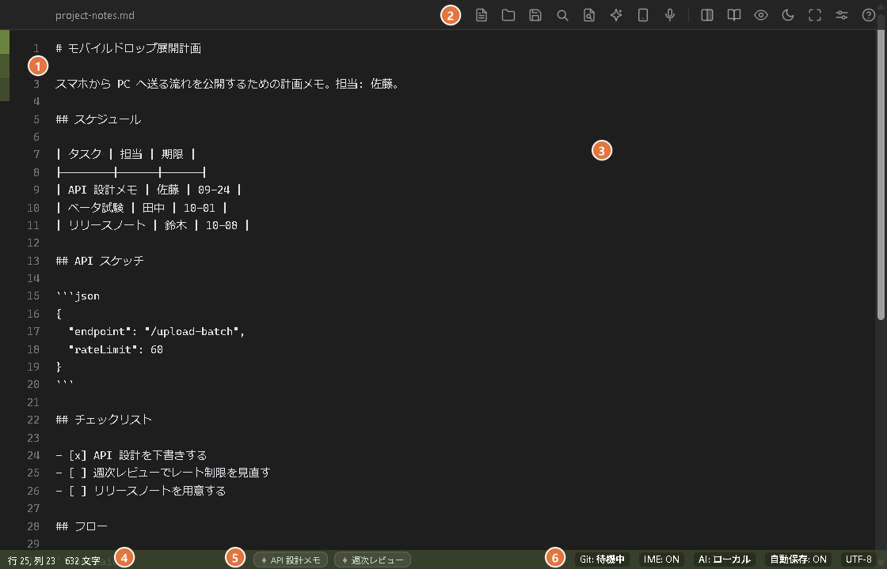
- タブ 開いているノートです。窓の左端に細い色の帯として並び、いま開いているノートがいちばん濃く、離れるほど薄くなります。帯にポインタを置くか F6 を押すと、本文の上に広がって名前が読めます。未保存の変更は点で示され、足元の＋で新しいノートを開きます。ノートが多いと帯はスクロールし、一覧のボタンが現れます（下の「タブがたくさんあるとき」を参照）
- ツールバー 右側に、ファイルを開く・フォルダを開く・保存・検索・スクラップ検索・AIに質問・Mobile Drop・音声入力・分割/プレビュー・Zen モード・全画面・設定・ヘルプのアイコンが並びます（インストール直後は、この一部だけです。下を参照）。Windows では、音声入力（マイク）の右に、クイックキャプチャのボタンもあります（macOS にはありません）
- エディタ 左端に行番号。中身は普通のMarkdownテキストです。長い行が折り返されて何行にも見えるときも、行番号は、その行の最初の1行にだけ付きます
- ステータスバー（左） カーソルの行・列と文字数
- 関連ノートのピル 開いたフォルダの中から、いま書いている内容に近いノート。クリックで開きます
- ステータスバー（右） Git同期・AI（使うモデルと、入力予測・提案・音声の整形のスイッチ）・自動保存・文字コードのボタン
最初は短いツールバー。インストール直後のツールバーには、ファイルを開く・保存・検索・AIに質問・プレビュー・設定だけが並びます（新しいノートは、タブの横の ＋ です）。最初の数分がアイコンの壁にならないようにするためです。ほかのアイコンは、コマンドパレット（Ctrl + Shift + P）や右クリックメニューから使えます。設定 → 一般 → ツールバーと右クリックメニューでチェックすれば、ツールバーにも戻せます。この状態で始まるのは、設定がまだない新規インストールのときだけです。すでに設定が保存されている環境では、ツールバーは今のままです。
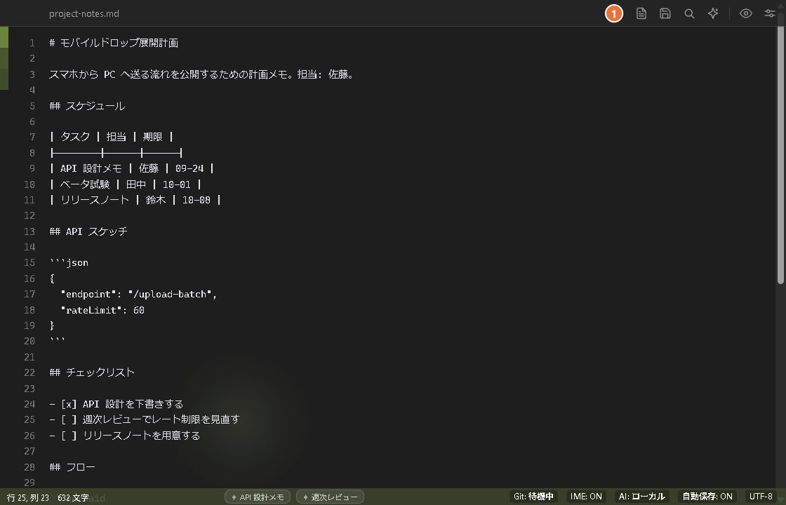
- 短いツールバー ファイルを開く・保存・検索・AIに質問・プレビュー・設定。ほかのアイコンはコマンドパレットにあり、設定でツールバーに出すこともできます
タブがたくさんあるとき。開いているノートが帯に収まらなくなると、まずタブの間が詰まり、それでも収まらなければ帯が上下にスクロールし（マウスのホイールやトラックパッド）、隠れたタブがある側の端が薄くなります。＋ボタンは帯の足元に残り、その下に小さな下向きの矢印のボタン（「すべてのタブ」）が現れます。押すか、コマンドパレットで「すべてのタブを表示」を選ぶと、開いているノートを帯の隣の一覧で見られます。切り替えたタブは、いつも見える位置までスクロールします。
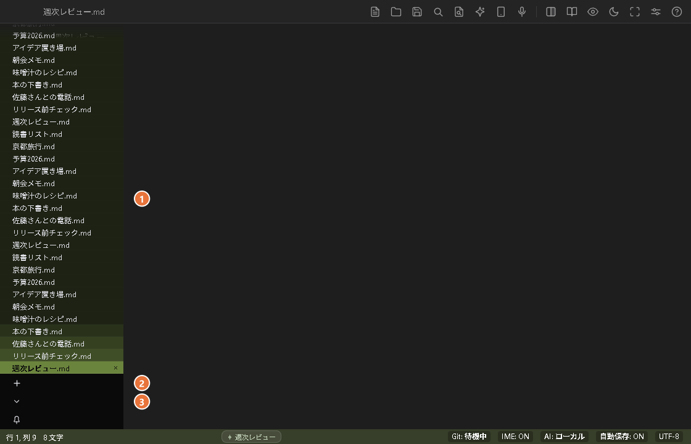
- タブの帯 上下にスクロールします（マウスのホイールやトラックパッド）。いま開いているタブはいつも見える位置にあり、隠れたタブがある側の端が薄くなります
- 新しいタブ 帯の足元にあり、タブの数に関係なく押せます
- すべてのタブ 開いているタブの一覧を開きます。タブが収まらないときだけ表示されます
一覧では、いま開いているタブが太字とチェックで示され、未保存の変更があるノートには点が付きます。↑ ↓ で選び、Enter で切り替え、Esc で閉じます。行をクリックしても切り替えられます。
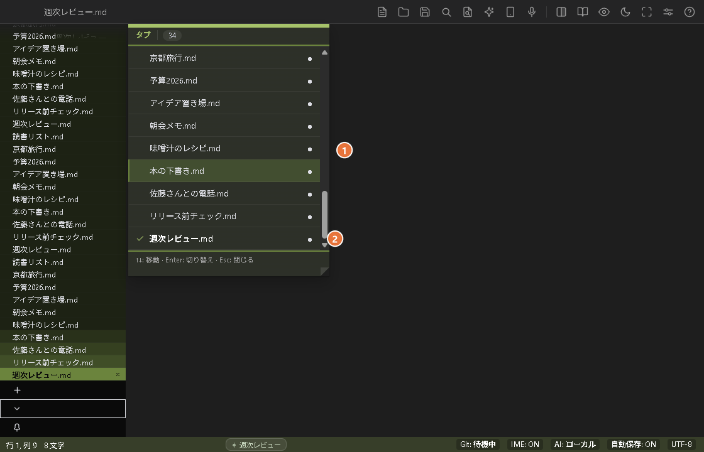
- 一覧 ↑↓ で選び、Enter で切り替え、Esc で閉じます。クリックでも切り替えられます
- 現在のタブ 太字とチェック
4つの表示とタブ。1ページのときは、帯は左端にあります。ノートを2つ並べたとき（分割）は、ページごとに帯があり、左の帯は左のページ、右の帯は右のページの右端（スクロールバーの隣）にあります。どちらも同じノートを同じ順序で並べ、それぞれ自分のページが開いているノートを示します。帯をクリックすると、その帯のページが切り替わります。Alt を押しながらクリックすると、右のページにそのノートを開きます。ノートの横にプレビューを出しているときは左の帯だけで、プレビューは左のページに付いてきます。プレビューだけの表示には帯がありませんが、Ctrl + Tab とコマンドパレットでノートを切り替えられます。タブを上下にドラッグするとノートの順序を変えられます（Esc で放します）。開いた帯の×でノートを閉じ、テキストファイルを帯にドロップすると新しいノートとして開きます。
開く・保存する・閉じる：守られること
- 同じファイルを2つのタブで開くことはありません。 すでにタブがあるファイルを開いたとき（Ctrl + O、コマンドパレット、ドロップ、エクスプローラー / Finder でのダブルクリック、
syki file.md）は、そのタブに切り替わり、ステータスバーにも表示されます。そのタブの文章は、未保存の変更も含めて、そのまま残ります。ほかのタブが開いているファイルへ「名前を付けて保存」すると、そのタブは、未保存の変更がなければ閉じます。あれば、ファイルを持たない別のメモとして、文章と未保存の点を残します。 - 保存の最中に打った文字。 保存を始めたあとに打った文字はまだファイルに入っていないので、タブは未保存のままになり、次に保存されます。1つのノートの保存は、1回ずつ順に書き込まれます。
- 未保存のノートを閉じるときの確認は、1回だけ表示されます。Enter はフォーカスのあるボタン（最初は「保存」）、S は保存、D と N は保存しない、Esc はキャンセルです。Ctrl・Alt・Cmd を押した組み合わせ、押しっぱなしのキー、日本語入力のキーは答えになりません。表示中にもう一度 Ctrl + W を押しても、何も起きません。
- 外から今日のスクラップに追記された文章（パイプ、クイックキャプチャ、ホットフォルダ、Discord）は、そのタブに未保存の変更がなければ、タブに反映されます。そこで文字を打って保存していないときは、タブをそのままにして、ステータスバーに「スクラップのファイルが更新された」と出します。追記された文章はファイルに入っています。そのタブを保存すると、あなたの文章でファイルが上書きされます。反映の対象は、ファイルのパスが同じタブだけです。別のフォルダにある同じ名前のノート（
2026-09-30.md）は、別のノートです。 - 起動時に渡されたファイル（ダブルクリック、「プログラムから開く」、
syki file.md）は、前回のタブ・フォルダ・設定が戻ったあとに、タブをもう1つ足して開きます。読み込めないときは、どのファイルがなぜ読めなかったかをステータスバーに表示します。
集中したいときは Zen モード（Shift + F11、macOS: Ctrl + Cmd + Z）。ツールバー・タブ・ステータスバーが隠れ、ノートだけが残ります（本文の左右の余白は残り、行番号は薄くなります）。マウスを動かしても隠れたバーは戻りません。ウィンドウの一番上か一番下にポインタをしばらく止めるか、F6 を押すと戻ります。ふつうのメッセージは出ませんが、失敗（保存できなかった、設定を書き込めなかった、など）と録音中は、Zen モードでもステータスバーが出ます。ウィンドウの大きさは変わりません。画面いっぱいにしたいときは 全画面表示（F11、macOS: Ctrl + Cmd + F）を使います。タイトルバーもタスクバーも隠れ、もう一度押すと元の大きさに戻ります。Zen モードと組み合わせると、画面全体にノートだけが残ります。どちらもツールバー右側のアイコン（法輪のマークが Zen モード、四隅が全画面）から切り替えられます。Zen モードの解除は Esc か、もう一度 Shift + F11 です。
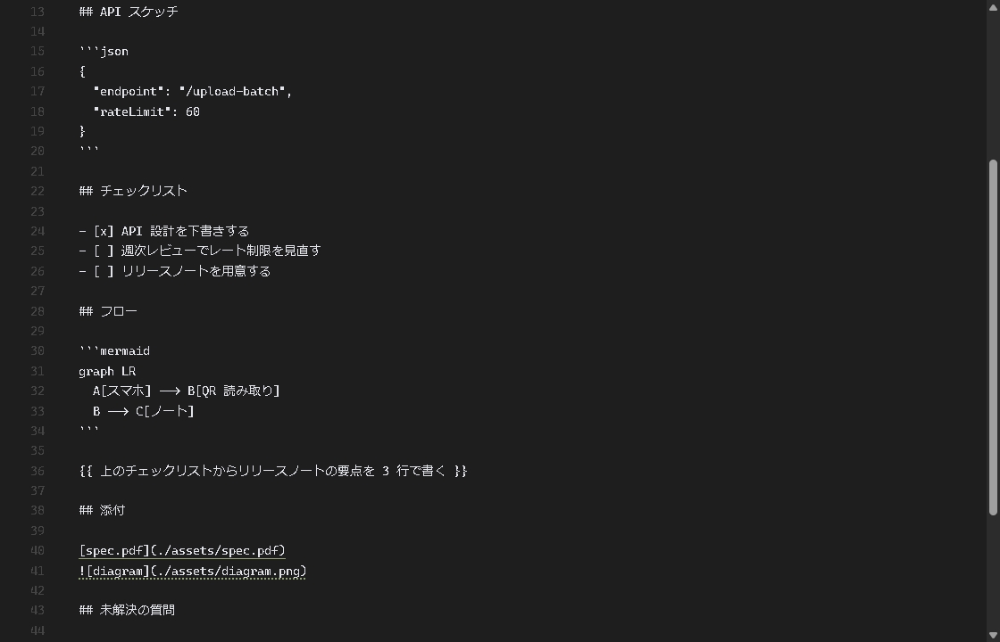
ステータスバーの各表示は、次の ステータスバーの見かた で説明しています。
制限・詳しい仕様（折り返した行の行番号）
- 折り返された2行目以降は、行番号が空欄になります。このため、行番号は、ノートの本当の行の数と一致します。
- 拡大・縮小、ウィンドウやペインの幅の変更、分割表示の2つ目のエディタにも、この表示は追随します。
- 12万文字を超えるノートでは、従来どおりの通し番号（1, 2, 3...）になります。行が折り返されると、番号がずれることがあります。
- macOS でも同じ動作になる想定ですが、macOS の実機での確認は、まだ済んでいません。
ステータスバーの見かた
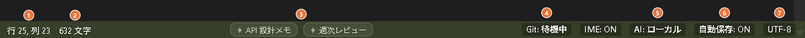
- カーソル位置 行と列
- 文字数 ノート全体の文字数
- 関連ノートのピル 最大2つ
- Git 同期 スクラップフォルダの状態。クリックで同期
- AI どのモデルが答えるか（AI: ローカル または AI: クラウド）。クリックすると、下で説明するスイッチが開きます。AI: 未設定 と出ているときは、クリックしてモデルを選びます
- 自動保存 ON / OFF。クリックで切り替え、短いメッセージで知らせます
- 文字コード クリックで UTF-8 / Shift_JIS を切り替え
| 位置 | 表示 |
|---|---|
| 左 | カーソルの行・列、文字数、選択の長さ（文字を選んでいるときだけ） |
| 中央 | 関連ノートのピル、LLM・処理中の表示、各種メッセージ |
| 右 | 実行中タスクのバッジ（クリックでタスクパネル、Alt + T）、Git同期（クリックで同期）、IME、AI（クリックでスイッチを開く）、自動保存、文字コード（クリックで切り替え）。どれも本物のボタンで、Tab で移動し、Enter か Space で押せます |
AI の項目: モデルと3つのスイッチ
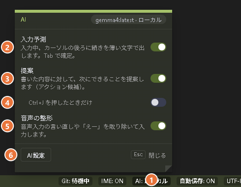
- AI クリック、または Enter か Space で開きます。Esc、ほかの場所のクリック、別の部品へ移ると閉じます
- 入力予測 入力中に、文の続きを薄い文字で出します。Tab で確定
- 提案 書いた内容に対して、次にできることを提案します（アクション候補、Ctrl + J）
- Ctrl+J を押したときだけ 提案は、呼び出したときだけ出ます。提案が ON のときだけ表示されます
- 音声の整形 音声入力の言い直しや「えー」などを取り除いて入力します
- AI設定 設定を「AIモデル」タブで開きます
- ラベル AI: ローカル は、このパソコンまたは手元のネットワーク上のモデル、AI: クラウド はオンラインのサービスを使うという意味です。AI: 未設定（オレンジ色）は、答えられるモデルがまだないという意味で、クリックすると 設定 → AIモデル が開きます。AI: エラー（赤）は直近の入力予測が失敗したという意味で、ポップオーバーを開くと理由が読めます。
- スイッチを切り替えるとメッセージが出ます（例:「入力予測: オフ」）。選んだ内容はすぐ保存されます。
- 名前はどこでも同じです: 設定、ショートカット一覧、このマニュアルで、3つの機能を「入力予測」「提案」「音声の整形」と呼びます。
関連ノートのピルを出すには
- フォルダを開くCtrl + Shift + O でノートのフォルダを開きます。次回起動時も覚えています
- そのまま書き続ける入力を止めて1.2秒ほど待ちます
- ピルが出るいまの内容に近いノートが、最大2つ表示されます
- クリックして開く新しいタブで開きます。マウスを乗せると、タイトル・パス・冒頭が見えます
フォルダを開いていないとき、または近いノートがないときは、ピルは出ません。
制限・詳しい仕様（探索の範囲とスコア）
- フォルダを開くと「ワークスペース読込完了: N 件のメモ」と表示されます。
- 探索するのは
.md・.markdown・.txtだけで、深さは3階層までです。 .で始まるフォルダ、node_modules、vendor、appdata、$recycle.bin、system volume information、windowsは飛ばします。- 300ノート、1500ファイル、2.5秒のどれかに達すると探索を打ち切ります。とても大きなフォルダでは、後ろのノートが対象に入らないことがあります（通知はありません）。
- 各ノートは、最初の見出し（なければファイル名）をタイトル、最初の1行をスニペットとして持ちます。
- 入力が止まって1.2秒後に、カーソルのある行と、カーソル前の250文字から、キーワード（2文字以上、最大8個）を取り出します。
- ほかの全ノートに点数を付け、上位2件をピルにします。
| 一致した場所 | 点数 |
|---|---|
| タイトル | 3 |
| スニペット（冒頭の1行） | 1.5 |
| パス | 1 |
インストール & 起動
Releases ページから syki-windows-x64.zip をダウンロードし、任意のフォルダに展開して syki.exe を実行します。syki-cli.exe が入ったリリースからは、同じ zip に、コマンドラインのコンソール版（スクリプト・エージェント・CI 用）も入っています（Headless CLI コマンドを参照）。
- Microsoft Edge WebView2 ランタイムが必要です（Windows 11 には標準で入っています）
- ランタイムがないと syki::sok は起動できません
brew install --cask youshinh/tap/syki- macOS 10.15 以降
- 初回だけ、下の「初回起動について」の操作が必要です
配布物はアドホック署名のみでApple公証を受けていないため、syki-sok.app は初回にGatekeeperにブロックされます。「…マルウェアが含まれていないことを検証できませんでした」というダイアログが出ます。
macOS 15（Sequoia）以降: ダイアログの「完了」を押します（「ゴミ箱に入れる」は押さないでください）。次に、システム設定 → プライバシーとセキュリティ を開き、下の「セキュリティ」までスクロールして、syki::sok がブロックされたという表示の 「このまま開く」 を押し、ログインパスワードを入力します。このボタンは、アプリを開こうとしてから約1時間だけ表示されます。
macOS 14 以前: Finderでアプリを右クリック（Controlクリック）して「開く」を選びます。
どのバージョンでも: アプリのあるフォルダでターミナルを開き、xattr -dr com.apple.quarantine "syki-sok.app" を一度実行しても開けます。
制限・詳しい仕様（ほかの入手方法・アップデートの確認）
- zip で入れる: Releases ページ から zip をダウンロードして、任意のフォルダに展開します。
- ユニバーサルバイナリ: 次回リリースからmacOSビルドはユニバーサルバイナリになり、Apple SiliconとIntel Macの両方に対応します。
- Macがなくても試せます: このリポジトリへのプッシュのたびに、GitHub上のmacOSランナーが
syki-sok.appをビルドします。Actions タブを開く（または CI ワークフローを Run workflow で手動実行する）→ 最新の CI 実行を開く → Artifactsからsyki-macos-<commit-sha>をダウンロードします。これもアドホック署名なので、上記と同じ初回起動の操作が必要です。 - アップデートの確認: 起動してしばらくすると、GitHub に新しいリリースがないかを確認します（
api.github.comへの1回のリクエストのみで、ノートの内容は送信されません）。新しいバージョンがあると、ヘルプ（?）ボタンに小さなバッジが表示され、ヘルプメニューにバージョンとリリースノートへのリンクが出ます。オフにもできます（設定 → 一般 →「起動時に更新を確認する」）。詳しくはsyki::sok について・更新の確認・文章の送り先を参照してください。
初めての起動: ようこそノート
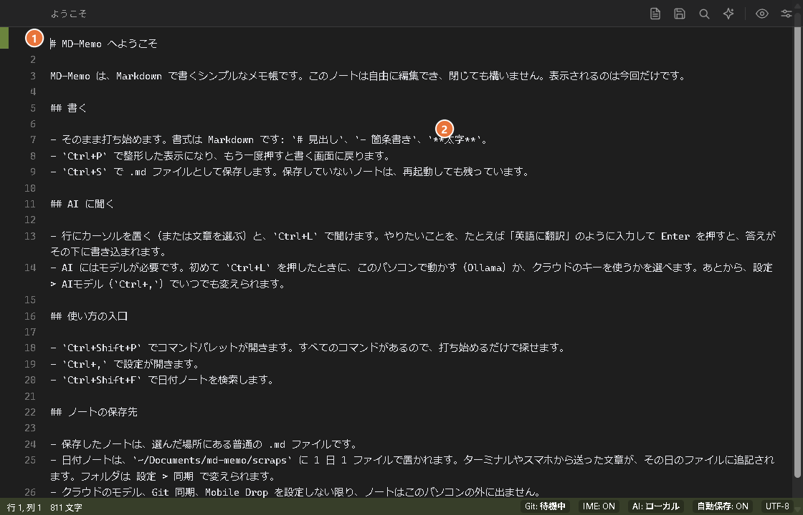
- ふつうのノート 保存していない普通のノートです。編集しても、Ctrl+S で保存しても、閉じてもかまいません。何も変えずに閉じるときは確認されません
- 書かれていること 書き方、Ctrl+L で AI に聞く方法、Ctrl+Shift+P ですべてのコマンド、Ctrl+, で設定、Ctrl+Shift+F で日付ノートの検索、ノートの保存先です。アプリの言語に合わせて表示され、Mac では Ctrl が Cmd になります
出るとき、出ないとき
- 初めての起動だけ: 設定ファイル（
config.json）がなく、前回までに保存したノートがなく、覚えているフォルダがなく、起動時に渡されたファイルもないときです。以前の版から更新した人には設定ファイルがあるので、出ません。ノートをダブルクリックして起動したときも出ません。 - 1回だけ: ノートを出すときに、設定ファイルへ
general.welcomeShownを書きます（設定を保存するまで、そのファイルにはこの印とツールバーの配置だけが入ります）。「ようこそ」のタブを開いたままにしておくと、ほかの未保存のノートと同じように次の起動でも復元されます。閉じれば二度と出ません。 - ほかの新しいノートは今までどおり: Ctrl+N で開くノートは、これまでと同じく日付の見出し（
# 2026-09-25 07:51）から始まります。この見出しがタブの名前と、保存するときのファイル名になります（無題ノートの名前の付き方）。
トレイ常駐と瞬時召喚 (Ctrl+Alt+M)
- メニューバーの常駐アイコンはなく、ウィンドウを閉じるとDockに残ります（メモリは同様に圧縮されます）
- Dockアイコンのクリック、またはホットキーで元に戻ります
- 終了するには Cmd+Q
ホットキーを押すと、どのアプリを開いていても最前面に瞬時に現れ、カーソルも直前の位置に復帰します。
もう一度押しても、ウィンドウは隠れません。バックグラウンドへ戻すには、ウィンドウを閉じてください。
IME Guardian：コード入力時の全角誤爆の完全排除
インラインコード（`...`）やコードブロック（```）、URLの入力で全角の ｃａｔ や ｆｉｎｄ が混ざり、実行エラーになるストレスをなくします。
- レキシカルスコープ保護: コードブロック内では自動的に半角英数モードへと誘導されます（入力遅延わずか11µs）。
- 直接入力のローマ字自動修復: 半角直接入力モードで「konnitiha」と打ってしまった場合、自動でひらがな変換へ救済します。
- 未確定のまま漢字に変換する（Windows、既定はオン）: 設定 → 一般 → エディタ & 入力 の「Tab でひらがな確定にせず、漢字に変換できる状態にする」で切り替えます。
[Tab: いろ]で Tab を押すと、ローマ字を消して OS の IME に同じキーを打ち直させるので、下線つきの未確定のまま Space で漢字候補が出ます。1 秒以内に IME が反応しないときは、従来どおりひらがなで確定し、理由を短く表示します。 - 日本語入力のまま打った英単語（Windows、既定はオン）: 同じ場所の「日本語入力のまま打った英単語を、Tab で半角に打ち直す」で切り替えます。英単語が仮名になって確定したとき（例: 「hello」が「へっlお」）、打ったキーから
[Tab: hello]と出し、Tab で仮名を英単語に置き換えて入力を半角に切り替えます。ローマ字として読めない英単語だけが対象なので、日本語を英語として出すことはありません。
デイリースクラップ思想（日報メモ）
syki::sokは自動的に日付ごとのスクラップファイル（scraps/YYYY-MM-DD.md）を作成します。
後述の Ctrl+Shift+F を使えば、過去数年分のデイリースクラップをミリ秒単位で全文検索できます。
無題ノートの名前の付き方
新しいノートには、まだファイル名がありません。タブには本文から取った名前が表示され、保存するまで入力に合わせて変わります。名前は、次のうち最初にあるものです。
- 最初の見出しノート内で最初の
#見出し（何段目でも可）。新規ノートの先頭に入る日付の見出し（# 2026-09-25 07:51）は数えません。 - なければ、最初に中身のある行空行、コード、コメント、表などの行は飛ばします（下の「詳しい仕様」を参照）。
- それもなければ、日付日付の見出ししかないノートは、その日付（
2026-09-25 07-51）が名前になります。
名前を付けて保存。 最初に出るファイル名は YYYY-MM-DD_<名前>.md です（例: 2026-09-25_週次計画.md）。日付はノート自身の日付見出しのもので、見出しがなければ今日の日付になります。タブの表示は日付なしの名前のままで、ダイアログではいつもどおり名前を書き換えられます。
詳しい仕様（飛ばす行と、名前の整え方）
- 飛ばすもの: 空行、フロントマター（先頭の
---で囲まれたブロック）、コードブロック、HTML コメント（syki::sok 自身の結果マーカーも）、表の行と区切り行、水平線、スロットやタスク記法だけの行（{{ }}、[[ ]]、[? ]、[! !]、[>> ]、【? 】）。読むのは先頭 200 行までです。 - 取り除く Markdown 記法: 引用の
>、箇条書きの記号と番号、タスクのチェックボックス、太字・斜体の記号、コードのバッククォート、末尾の#。リンクは文字だけ、画像は代替テキストだけを残し、HTML タグは取り除きます。 - ファイル名として安全に: Windows でファイル名に使えない文字（
\ / : * ? " < > |）と制御文字は、消さずに空白へ置き換えます（単語がくっつかないように）。末尾のドットと空白は取り除き、CONやNULのような Windows の予約名は先頭に_を付けます。 - 長さ: 約 40 文字。空白か閉じ括弧の後ろで区切り、開いたままの括弧は残しません（その括弧の手前までにします）。絵文字の途中では切らず、
...も付けません。
02 機能別 操作ガイド
迷ったらこの表
| やりたいこと | 入口 | どんな機能か |
|---|---|---|
| 書く 選択した文を直したい・書いてほしい |
Ctrl + L （macOS: Cmd + L） |
内蔵のLLMが数秒で答えます。選択範囲（なければ現在の行）が対象で、答えは対象の下に入ります。元の文は書き換わりません。 |
| 実行する コマンドを走らせたい |
コマンドバー Ctrl + E （macOS: Cmd + E） |
選択したテキストをシェルコマンドに通し、その出力を下に挿入します（設定で置き換えに変えられます）。待ち時間はコマンド次第で、ほぼ即座です。Tab で AI モードに切り替えると、AIがコマンドを書いてくれます。 |
| 任せる・おまかせ 調査や実装をまるごと頼みたい。書いた1行の意図をくんでほしい |
自動セレクター Ctrl + Enter （macOS: Cmd + Enter） |
1行書いて押すと、内容を見て、LLM への指示・エージェントへの依頼・コマンドに振り分けます。エージェント（Claude Code、Codex、Hermes、Antigravity など）は、バックグラウンドで数分かけて作業します。結果は指示行の下に入ります。ノートに {{ 指示 }} と書いて実行する従来の方法も使えます。 |
| 何をすべきか分からない | Ctrl + J （macOS: Cmd + J） |
いま書いている内容に合う次の一手を最大3件提案します（アクション候補）。各カードは「書く」「実行」「任せる」のいずれかに対応します。 |
| 意味で探す 言葉を思い出せないノートを、内容から見つけたい |
ノート検索 Ctrl + Shift + F →「意味」 （macOS: Cmd + Shift + F） |
入力した言葉そのものではなく、内容の近いノートを探します（試験的機能。既定はオフで、config.json で有効にします）。見つかったノートは、「深掘り」で、出典つきの答えにまとめられます。意味検索と深掘りをご覧ください。 |
| PDF にする・印刷する プレビューの見た目で、紙や PDF にしたい |
プレビューのプリンターのボタン | 白い紙に黒い文字の見た目で、PDF に保存するか、プリンターで印刷します。Windows では専用の印刷パネル、macOS では macOS の印刷画面が開きます。プレビューを印刷・PDF で保存をご覧ください。 |
3つの動詞の見分け方
- 対象は「いま目の前にある文章」
- 選択してから Ctrl + L（選択がなければ現在の行）
- 数秒で、対象の下に答えが入ります
- 「コマンドの結果が欲しい」とき
- AIを待つ必要はありません
- ほぼ即座に返ります
- 自分では手を動かしたくない調べ物・実装や、書いた1行の意図をくんでほしいとき
- 行の内容から、LLM・エージェント・コマンドへ自動で振り分けます
- エージェントは数分かかります。その間もノートの編集を続けられます
書き留める・取り込むための入口（3つの動詞とは別の、手軽な入口です）
書く｜AIに質問 (Ctrl+L)
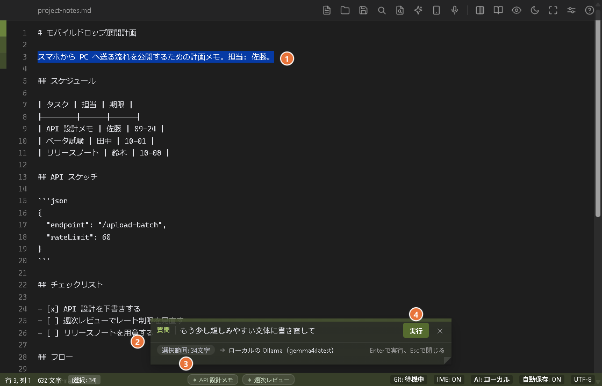
- 選択した文 指示の対象です。選ばなければ現在の行、空行ならメモ全体が対象になります
- 質問バー 対象にしてほしいことを入力します
- 対象の表示 AIが読む範囲です。「選択範囲: N文字」「現在の行」「メモ全体」のどれかが出ます
- 実行ボタン Enter でも実行、Esc で閉じます。答えは対象の下に入ります。ほかの場所をクリックすると、少しあとに自然に消えます（入力が残っているときは消えません）。浮かぶパネルはドラッグで動かすこともできます
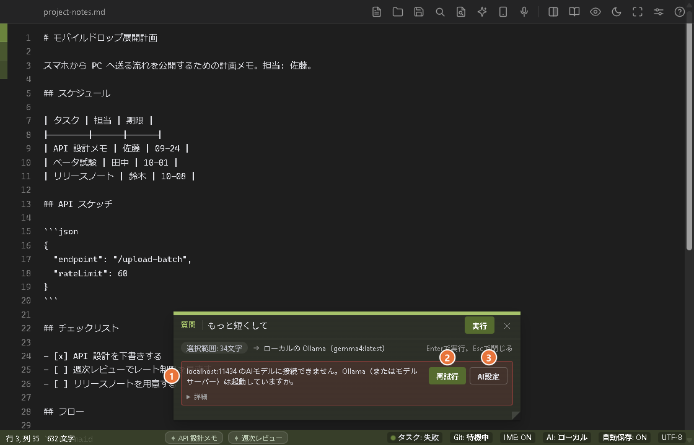
- 何が起きたか 平易な文で示します。サーバーのメッセージは「詳細」の中です
- 再試行 同じ指示をもう一度送ります
- AI設定 設定 → AIモデル を開きます
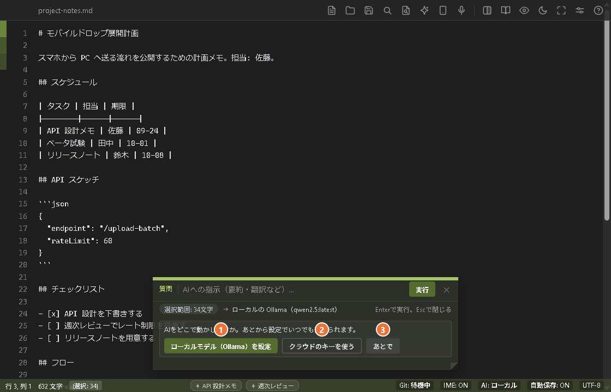
- ローカルモデル（Ollama）を設定 設定 → AIモデル のローカルAIのカードを開きます。ボタン1つでモデルを入れられます
- クラウドのキーを使う 設定 → AIモデル のモデルの欄（URL、モデル名、APIキー）を開き、キーの欄にカーソルを置きます
- あとで 内蔵のモデルのまま、選択肢を閉じます。二度とは出ません。モデルはいつでも設定で変えられます
- 文を選ぶ直したい・訳したい・要約したい部分を選びます。選ばなければ、カーソルのある行が対象です
- Ctrl + L を押して指示を書くノートの上端に質問バーが出ます（文章が上のほうにあるときは下端）（macOS: Cmd + L）
- Enter で実行対象の下に答えが入ります。元の文はそのまま残ります
- 待てないときは取り消す依頼はタスクパネル（Alt + T）に並びます。ここから中断できます
指示の例
- 「このエラーメッセージの原因と修正法を教えて」
- 「日本語に自然に翻訳して」
- 「箇条書きの議事録に要約して」
ツールバーのAIボタン、右クリックの「AIに質問...」、コマンドパレットの「AIに質問」でも、同じバーが開きます。
入力欄の下の行には、文章の送り先も出ます（たとえばローカルの Ollama（qwen2.5:latest）やgemini-flash-lite-latest（クラウド））。ポインターを重ねるとホスト名が見えます。クラウドのホストへの最初の送信では、送る前にバーで一度だけ確認します（文章の送り先を参照）。ローカルのモデルには尋ねません。
普通の文章の行で Ctrl + Enter を押しても、同じバーが開きます。このときヒントは「指示は [[ @llm ... ]] としてメモに残ります」に変わり、書いた指示が対象の下に残って、答えはその下の結果ブロックに入ります。詳しくは 自動セレクター をご覧ください。
よく使う指示はコマンドパレットに（Ctrl + Shift + P）。次の3つを選ぶと、質問バーに定型の指示が入った状態で開きます。
- UNIX Pipe: 文章推敲・リファクタ — 選択範囲を簡潔で論理的な文章に整えます。
- UNIX Pipe: 箇条書き要約 — 要点を構造化されたMarkdownの箇条書きにまとめます。
- UNIX Pipe: 未完了タスク抽出 — 文章からTODOを拾い出し
- [ ]形式のチェックリストにします。
制限・詳しい仕様（対象・答えの入る場所・エラー・取り消し）
- 対象の決まり方: 選択範囲があればそれ、なければカーソルのある行、行が空ならメモ全体の順です。ノートが空のときは「対象テキストなし（自由な質問）」と表示され、入力した指示だけがAIに送られます。
- 答えの入る場所: 対象の最後の行の下に、空行を1つずつはさんで入ります。空行にカーソルがあるときは、その空行に入ります。選択範囲や行そのものは書き換わりません。
- LLM が未設定のとき: 質問バーは開き、「AIモデルがまだ設定されていません。」と 設定する ボタンが出ます（押すと 設定 → AIモデル が開きます）。実行ボタンは押せず、ノートは変わりません。モデルか接続先が空のとき、または Gemini・OpenAI などのクラウドサービスで API キーが空のときです（Ollama などのローカルは、キーなしで動きます）。
- 内蔵モデルで初めて開くとき: テキストモデルがまだ既定（このパソコンの Ollama、
qwen2.5:latest、キーなし）で、AI の選択がまだ済んでいないときは、対象のチップの下に選択肢が1回だけ出ます。ローカルモデル（Ollama）を設定 と クラウドのキーを使う は、その部分を見せた状態で 設定 → AIモデル を開き、あとで は閉じるだけです。そのあいだも質問バーはそのまま使えます。3つのどれかを押すか、そのまま実行すると記録され（config.jsonのgeneral.aiChoiceMade）、二度と出ません。答えずにバーを閉じただけでは記録されません。ダイアログは出ません。 - AI の要求が失敗したとき（Ollama が起動していない、キーやモデル名の誤り、タイムアウト）: ノートは元のとおりに戻り、何も書き込まれません。質問バーが指示を残したまま開き直り、何が起きたかを平易な文で示します。ボタンは 再試行 と AI設定 で、サーバーからのメッセージは 詳細 の中にあります。
- 待っている間: ノートに
[AI 生成中: 指示の先頭20文字...]という行が入り、答えが届くと、その行が答えに置き換わります。同じノートで依頼が複数待っているときは、後の行に番号が付き（[AI 生成中: 翻訳... 2]）、答えが届く順番によらず、それぞれの質問の下に入ります。この行がファイルや保存されるセッションに書き込まれることはありません。AI が動いている間に保存したり、ノートを閉じたり、終了したりしても、残るのはあなた自身の文章です。 - そのあいだにノートを変えたとき: 質問バーは、質問の対象にしたテキストが動いていても（上に文字を入力した、別の答えが上に入った）探し直します。そのテキストそのものを書き換えたときは、何も送らず、その旨を表示します。選び直してやり直してください。要求が失敗したり取り消されたりして、ノートが元とまったく同じ文字列に戻ったときは、「変更あり」の印は付きません。
- 取り消し: 依頼は、タスクパネル（Alt + T）にエージェント名「LLM」で並びます。ここで取り消すと、待機中の行が消えてノートは元の状態に戻り、「LLMへの依頼を中断しました」と表示されます。AIへの通信そのものは止められないので、あとから届いた答えは捨てられます。
- 使うモデル: 設定 → AIモデル の、テキストLLMです。
- 日本語入力（IME）: 変換を確定する Enter では、送信されません。確定したあとにもう一度 Enter を押すと実行します。
- 回答のフェンスの扱い: モデルが回答全体を1つの
```markdown/```mdフェンスで囲んで返してきた場合、syki::sokは挿入前にそのフェンスを自動で外します。コードブロックで囲むのではなく、Markdownそのものが挿入されるようにするためです。実際のコード回答（```pythonなど）や、他の文章の中にフェンスコードブロックを含むだけの回答は、そのまま挿入されます。 - 以前のキー: 以前のバージョンで、この機能を Ctrl + K で使っていた場合は、設定を読み込むときに Ctrl + L へ自動で移り、お知らせが1回だけ出ます（別画面だったプロンプト入力は、この質問バーに統合されました）。
書く｜ゴーストテキスト（予測入力）
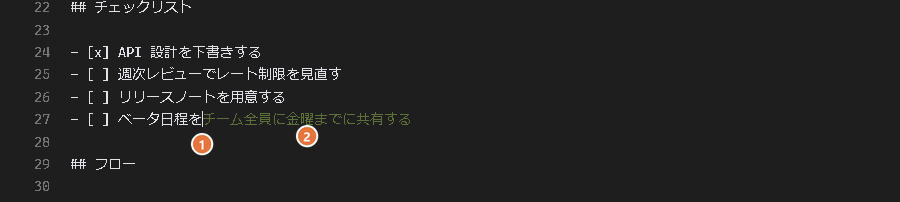
- カーソル ここまでに入力した内容です
- ゴーストテキスト 灰色の予測です。Tab（または →）で採用、Ctrl + → で1単語だけ採用します
制限・詳しい仕様
- 提案を出すのは、ローカルLLM（Ollama / Gemma 4）またはクラウドAPIです。設定は 設定 → AIモデル の「入力予測」にあります。
- 表示までの待機時間の既定は500msです。設定画面では200〜2000msですが、実際の下限は300msです。
- ON / OFF を切り替えるには、ステータスバーの AI をクリックして、入力予測のスイッチを使います。
書く｜AI 文章校正・誤字脱字修正 (Alt+C)
- 文章を選ぶ議事録や報告文など、仕上げたい部分を選びます
- Alt + C を押すmacOS: Cmd + Shift + C。プロンプトの入力は要りません
内容を書き換えるのではなく整えるための機能なので、議事録や報告文の仕上げに向いています。オン / オフは 設定 → 一般 の「AI入力間違い・誤字脱字の自動補正 (Alt+C)」で切り替えられます。
書く｜画像貼り付け OCR 文字起こし (Ctrl+V)
- 画像をコピーするスクリーンショットや設計図の画像をクリップボードへ
- syki::sokで Ctrl + VGemini Vision OCR が起動します
- Markdownが貼られる画像内のテキスト・表・コードが、構造化されたMarkdownとして入ります
フォルダに画像を入れるだけで読み取る ホットフォルダ や、画面を撮って読み取る 画面キャプチャ（Windows のみ）もあります。画像を PC の外に出したくないときは、設定 → 同期 の「画像をこのPCの外に出さない」をオンにします（Windows のみ。精度は下がります）。この設定は、ホットフォルダなどの読み取りに効くもので、Ctrl + V の貼り付けの OCR には関係しません。
制限・詳しい仕様（必要な設定）
- 設定 → AIモデル → 画像解析 で、Geminiなどの画像モデルとAPIキーを設定します。
- 「画像ペースト(Ctrl+V)時に自動で画像マークダウン化 (Vision OCR) を実行」のスイッチが必要です（既定でオン）。
- クリップボードに画像しかないときだけ働きます。テキストと画像の両方があるときは、テキストが貼り付けられます。
- ローカルのビジョンモデル（OllamaやLM Studio）なら、APIキーなしでもOCRできます。
- OCRを使わず画像のまま貼りたいときは、そのまま貼る（Ctrl + Shift + V）で assets に保存します。スイッチがオフのとき、または画像モデルのAPIキーが未設定のときは、Ctrl + V でも、同じように assets に保存してリンクを貼ります（理由がトーストに出ます）。
書く｜スマート貼り付け (Ctrl+V / Ctrl+Shift+V)
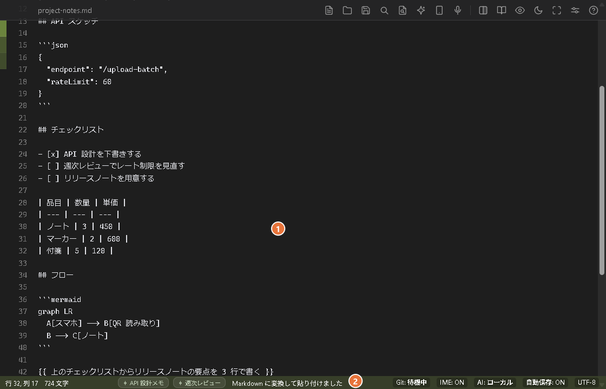
- 貼り付けた表 HTMLの表が、Markdownの表に変換されています
- トースト ステータスバーに「Markdown に変換して貼り付けました」と出ます
- 構造のあるHTML: Webページ・Word・Google Docs・Excelの表や見出し、リスト、リンクを、Markdownに変換して貼ります。トーストに「Markdown に変換して貼り付けました」と出ます
- 構造のない内容（エディタやターミナルからのコードとログ、1セルだけのコピー）は、そのまま貼ります
- 画像だけのとき: 画像OCR のビジョンモデルがMarkdown / Mermaidに文字起こしします
- OCRには、「貼り付けた画像を自動で文字起こしする」設定とAPIキーが必要です（設定 → AIモデル → 画像解析）。どちらかが足りないときは、OCRに送らず、Ctrl + Shift + V と同じく画像を assets に保存してリンクを貼ります（Mobile Drop の写真と同じ扱い）
- テキスト: 装飾を取り除いたプレーンテキストで貼ります。HTMLの変換はしません
- 画像だけのとき:
./assets/YYYY-MM-DD-HHmmss.pngとして保存し、カーソル位置にを挿入します。OCRには送られません - ExcelやWordのように、テキストと画像が両方あるときは、テキストが貼られて画像は無視されます
制限・詳しい仕様
変換されるもの（内蔵コンバータ。外部依存なし）
- 見出し（h1〜h6）、段落、改行、水平線
- 太字・斜体・取り消し線、インラインコード、言語付きのフェンスコードブロック
- 入れ子の引用、
startを保持した入れ子のリスト、タスクリストのチェックボックス - タイトル付きリンク、画像
- 列揃えを保ったGFMテーブル（セル内の
|はエスケープ） - Google Docs特有のラッパー構造にも対応します
安全のため取り除かれるもの: <script>・<style>・<iframe>・<svg> の中身、javascript: と data: のリンク、data: 画像。
画像の保存名: 拡張子は実際の画像形式に合わせて .png / .jpg / .gif / .webp になり、名前が重複すると -2、-3… が付きます。
./assets/ の保存先: メモが保存済みならそのメモの隣、そうでなければ現在のワークスペースフォルダ、ワークスペースも無ければアプリのデータフォルダです。最後のケースでは、挿入されるリンクは相対リンクではなく、絶対パスの file:/// リンクになります。
変換の対象: 表・見出し・リスト・リンク・画像・引用・区切り線・太字や斜体などが含まれるHTMLだけを変換します。段落と改行だけのHTML、VS Code のエディタからのコピー、1セルだけのExcelのコピーは、変換せずにそのまま貼ります。
役割を元に戻す: 設定 → 一般 の「Ctrl+V で Web・Word・Excel の内容を Markdown にして貼る」をオフにすると、以前の割り当てになります。Ctrl + V がプレーンテキスト、Ctrl + Shift + V がHTMLの変換です（このとき、貼り付けイベントにHTMLが含まれないアプリでは、非同期クリップボードAPIにフォールバックします。組み込みブラウザが、初回のみ独自の許可プロンプトを表示することがあります）。
トースト: 「Markdown に変換して貼り付けました」（変換成功時）、または「画像を assets に保存しました」（画像のみのクリップボードを ./assets/ に保存したとき）。
Ctrl + Shift + V は固定のキーで、設定 → ショートカット では変更できません。以前はプレビューを横に開くコマンドでしたが、そちらは Ctrl + Alt + V（macOS: Cmd + Option + V）に変わりました。
書く｜音声入力 (Ctrl+Shift+R)
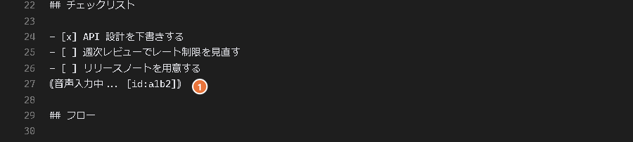
- 録音中のマーカー 録音が終わると、文字起こしの結果に置き換わります（Esc で録音を破棄）。マーカーの文字は、UIの言語にかかわらず日本語です
- 録音を始めるCtrl + Shift + R（macOS: Cmd + Shift + R）。カーソル位置に
⦅音声入力中... [id:xxxx]⦆が入ります。録音中も、別の場所をクリックして入力を続けられます - 止める画面左下の 停止 ボタンをクリック、もう一度 Ctrl + Shift + R、または5秒の無音（1〜30秒で変更可）で自動停止します。Esc なら破棄で、マーカーは消えて何も送信されません
- 結果を待つマーカーが
⦅文字起こし中... [id:xxxx]⦆に変わり、終わるとテキストに置き換わります
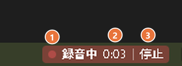
- 録音中の印 赤く点滅する点と「録音中」の文字です（Zen モードでも見え続けます）
- 経過時間 録音してからの時間です
- 停止 この表示をクリックすると録音を止めて、文字起こしを始めます（ショートカットをもう一度押すのと同じです）。Esc を押すと、録音を破棄します
会議の録音：マイクと、PCから流れている音（Windows）
- できること: 設定 → AIモデル → 音声入力 → 再生音（Zoom・動画など）も録音する をオンにすると、音声入力がマイクと、PCが再生している音（Zoom の相手の声、動画など）を1つの録音にします。通話には影響しません（相手には今までどおり自分の声が届き、相手の声も聞こえます）。録音中は、ステータスバーに赤く点滅する録音の表示が出て、再生音＋マイク と書かれます。クリック（またはショートカットをもう一度）で停止、Esc で破棄します。
- 文字起こし: 録音は約4分ごとのファイルとしてディスクに書かれ、止めたあとに区間ごとに文字起こしします。長い会議でも使えますが、止めたあと数分待つことがあります。2段目の整えはなく、無音での自動停止もありません。成功すると録音ファイルは削除され、失敗したときは残り、メッセージに場所が出ます。
- 先に確認: 同じ場所の 音声デバイスを確認 で、マイクと再生音の取り込みを半秒ずつ開き、それぞれ使えるかを表示します。Zoom のスピーカーはPCの既定の出力（または「システムと同じ」）に、マイクは既定の録音デバイスにしてください。
- プライバシー: 相手の声も録音され、文字起こしのサービス（ローカルのエンジンを選んでいない場合は Gemini）に送られます。会議の参加者には先にお伝えください。
- Windows のみ: ほかのOSでは、このスイッチは表示されません。
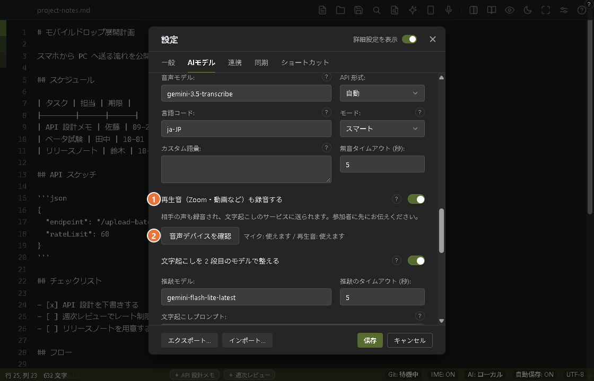
- 再生音（Zoom・動画など）も録音する マイクと再生音を1つの録音にして、区間ごとに文字起こしします
- 音声デバイスを確認 マイクと再生音の取り込みが、どちらも使えるかを表示します
録音を始める4つの方法
音声の整形と、声での書き換え
文字起こしのあと、2 段目のモデル（既定は gemini-flash-lite-latest）が文章を整えてから入れます。「えーと」などのフィラーと言い直しを取り除き、いまの行の書式（箇条書き・タスク・番号付きリスト・表）に合わせます。既定でオンです。
- 声での書き換え: テキストを選択してから録音すると、話した内容を編集の指示として選択範囲に適用します（例:「もっと丁寧に」）。指示として読み取れないときは、選択範囲はそのままです。選択範囲は 8000 文字までで、選択したテキストは Gemini に送られます。
- 整えずに入力する: Ctrl + Shift + Alt + R（macOS: Cmd + Shift + Option + R）で録音すると、その 1 回だけ整えません。選択範囲は、話した内容そのものに置き換わります。
- オン/オフの切り替え: ステータスバーの AI をクリックして音声の整形のスイッチを使うか、Ctrl + Alt + R（macOS: Cmd + Option + R）を押します。どちらも設定 → ショートカットで変更できます。
- 失敗したとき: 時間内に終わらない、または失敗したときは、文字起こしをそのまま入れます。書き換えに失敗したときは、選択範囲を元に戻します。
文字起こしに失敗したとき
録音は消えません。音声はアプリのデータフォルダの voice_cache に保存され、マーカーが次のように変わります。
⦅文字起こし失敗: [再試行(id:xxxx)] [音声保存] [破棄]⦆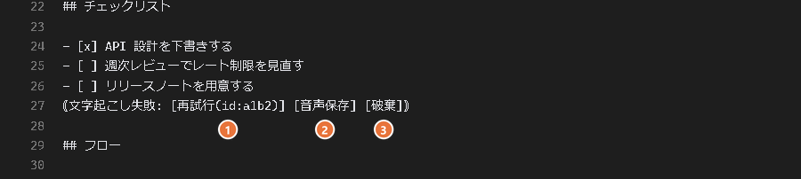
- [再試行] 保存した音声を、もう一度文字起こしに送ります
- [音声保存] 音声をノートの
./assets/に移し、[audio](...)リンクを挿入します - [破棄] 保存した音声を削除し、マーカーを消します
このリカバリは、アプリを再起動した後でも使えます（保存済みの音声とマーカーのidは再起動後も残ります）。
失敗の理由が 話し声が検出されませんでした のときは、APIは動いていて、録音に話し声がほとんど入っていません。マイクの選択と音量（Windows の設定 → システム → サウンド）を確認してください。応答がまったく返らないときは、待ち時間（既定の30秒＋20秒）を過ぎるとマーカーが [再試行] の形に変わり、アプリを閉じている間に応答が途切れた古い「文字起こし中」の表示は、ノートをクリックすると片付きます。
設定（設定 → AIモデル の「音声入力 / Voice input」。画像OCR（ビジョン）の設定のすぐ下にあります）
| 項目 | 既定 | 説明 |
|---|---|---|
| 音声モデル | gemini-3.5-transcribe |
候補は gemini-3.5-transcribe、gemini-flash-lite-latest。 |
| API 形式 | 自動 | 自動 / Interactions API / generateContent。自動は、モデル名に「transcribe」を含めば Interactions API、それ以外は generateContent を使います。 |
| 言語コード | 空欄 | BCP-47 をカンマ区切りで指定します（例 ja-JP, en-US）。空欄なら自動判定で、言語の混在にも対応します。 |
| モード | スマート | スマート＝フィラーを除いて、読みやすく整形。逐語＝そのまま書き起こします。 |
| カスタム語彙 | 空欄 | 1行に1語（人名・専門用語）。最大1000語ですが、100語程度までがいちばん効きます。 |
| 無音タイムアウト (秒) | 5 | 1〜30。この秒数だけ無音が続くと自動で停止します。 |
| 文字起こしプロンプト | 既定の指示文 | generateContent 形式のモデルでだけ使われます。 |
| 文字起こしを 2 段目のモデルで整える | オン | オフにすると、文字起こしをそのまま入れます（声での書き換えも使えません）。 |
| 推敲モデル | gemini-flash-lite-latest |
Gemini のモデルだけ使えます。カスタム語彙も、整えるときの表記の手がかりに使われます。 |
| 推敲のタイムアウト (秒) | 5 | 1〜30。この秒数で終わらなければ、文字起こしをそのまま入れます。 |
| APIキー / Base URL | 空欄 | 空欄なら、画像OCR（ビジョン）の設定を使います。専用の入力欄はありません。 |
設定 → AIモデル には、この下に「音声認識エンジン(フォルダ監視・Discord)」もあります。Whisper（このPC内）を選んでも、効くのはホットフォルダと Discord 連携だけです。この画面での音声入力（Ctrl + Shift + R）は、これまでどおり Gemini を使います。詳しくは ホットフォルダ をご覧ください。
メッセージとエラー
状況に応じたメッセージが、ステータスバーに6〜9秒ほど表示されます。
| メッセージ | 意味と対処 |
|---|---|
| マイクを準備中... | キーを押した直後に表示されます。 |
| マイクの許可待ちです。... | 5秒たっても応答がないときに表示されます。初回はWebView2が独自の許可の確認を出すので「許可」を選びます。syki::sokが無断でマイクを許可することはありません。 |
| マイクの使用が許可されていません。... | Windows の設定 → プライバシーとセキュリティ → マイク で、デスクトップアプリのアクセスを許可します。 |
| マイクが見つかりません | マイクが接続されていません。 |
| マイクを開けません。... | ほかのアプリがマイクを使用中かもしれません。 |
| マイクを使用できませんでした | 上のどれにも当てはまらない場合の汎用メッセージです。 |
| 音声入力はエディタ表示で使えます | レンダリングされたプレビュー表示中に押したときに出ます。エディタ表示に戻してください。 |
制限・詳しい仕様（モデル・プライバシー・必要なもの）
- モデル: 既定は
gemini-3.5-transcribeです。この画面での音声入力は、Geminiモデル限定で、オフラインやGemini以外のモデルは選べません（オフラインの Whisper を選べるのは、ホットフォルダと Discord 連携の文字起こしだけです）。 - 呼び出し方: Google の Gemini 3.5 Transcribe を Interactions API（
POST {base}/v1beta/interactions、ヘッダーx-goog-api-key）で呼びます。gemini-flash-lite-latestなどそれ以外の Gemini モデルは、プロンプト付きの generateContent 形式で動きます。 - ライブ版は使えません:
gemini-3.5-transcribe-liveはストリーミング（Live API）版で、録音した音声には使えません（指定すると、その旨のエラーが出ます）。 - プライバシー: syki::sokは常に
store: falseを送ります。Google側に録音や文字起こしは保存されません。 - キー: APIキーとBase URLが空なら、画像OCR（ビジョン）の設定を使います。設定ファイルには
voice.apiKey/voice.baseUrlというキーもありますが、設定画面に入力欄はありません。 - 日本語IME: IMEをオンにしたままでも、ショートカットは使えます。
- マイクの許可: 許可の確認を出すのはOSではなく組み込みブラウザ（WebView2）自身で、初回録音時に一度だけです。
- macOS: マイク使用の説明文は組み込み済みですが、macOSでの動作はまだ十分に検証されていません。
実行する｜コマンドバー: CLI モード (Ctrl+E)
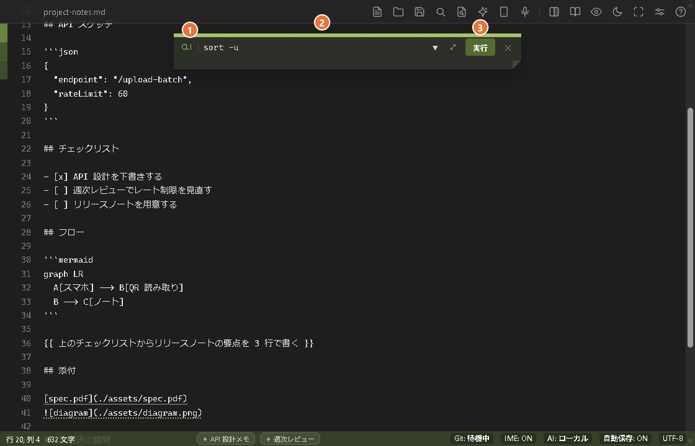
- モードのバッジ 「CLI」と出ています。クリックするか Tab を押すと AI CLI モードに切り替わります。選んだモードは、次に開くときも使われます
- コマンド欄 シェルコマンドを入力するか、ドロップダウンから、履歴やプリセット（
sort -u、jq .、git statusなど）を選びます - 実行（Enter） 選択範囲（選択がなければノート全体）をコマンドに送り、出力が返ってきます
- テキストを選ぶ選ばなければ、ノート全体が対象になります
- Ctrl + E でバーを開く入力欄に、よく使うコマンドの候補が並びます。AI モードで開いたときは、Tab で CLI モードに切り替えます
- コマンドを入力して Enter選んだテキストの下に、コマンドの出力が入ります（選んだテキストは残ります）。Esc で閉じます
Ctrl + E で開くのは、ひとつのコマンドバーです。前回使ったモードで開き、Tab か、バー左端のバッジ（CLI / AI CLI）のクリックで、いつでも切り替えられます。コマンドを自分で書けるなら CLI モード、書き方が分からないなら AI モード です。
モードごとに直接開くキー（「コマンドバー: コマンド実行モード」「コマンドバー: AIがコマンドを作るモード」）は、既定では割り当てられていません。設定 → ショートカット の「コマンドバー」グループで割り当てられます。
コマンドの例
jq .: JSONの整形・インデントsort -u: 重複行を排除してアルファベット順に並び替えtr a-z A-Z: 大文字に一括変換duckdb -box: SQLをインライン実行して表形式で出力
制限・詳しい仕様
- 結果の扱い: 設定 → 連携 の「コマンド (実行する)」にある「コマンドの出力の入れ方」と「実行結果を新しいタブで開く」で決まります。選んだテキストがあるとき、出力は既定で、その最後の行の下に入り、選んだテキストは残ります。コマンドが元と同じテキストを返したとき（たとえば、すでに並んでいる行への sort）は、二つ目のコピーを作らないよう何も追加せず、その旨をメッセージで知らせます。「選択範囲を置き換える」にすると、従来のフィルタのように、選んだテキストが出力に置き換わります。「実行結果を新しいタブで開く」がオン（既定）のときは、結果を新しいタブでも開きます。オフでは新しいタブを開かず、選択がなければ出力をノートの末尾に加えます（「置き換える」なら、ノート全体が出力に置き換わります）。
- ノートを離れたとき: 出力は、コマンドを実行したノートのものです。実行中に別のノートへ切り替えると、どのノートにも挿入しません（選んだテキストは、離れたノートの中にあるためです）。出力は、設定にかかわらず結果のタブに開き、メッセージで知らせます。
- 出力が空のとき: コマンドが成功しても何も出力しなかった場合、結果のタブに「(no output)」と表示されます。
- 作業ディレクトリ: コマンドは、syki::sokアプリ自身の作業ディレクトリで実行されます。
- プリセット（入力欄の候補）: 履歴が先頭に並び、続けて、agents.yaml の
snippets:に書いた自作の command のひな形、固定のフィルタ（sort、sort -u、jq .、tr、wc -l、duckdb -boxなど）、組み込みの command のひな形の順です。ひな形は、そのまま実行できるもの（${selection}や$0などのプレースホルダを含まないもの）だけが並びます。組み込みはgit status、git diff --stat、現在の日時、ファイル一覧などで、実行中の OS に合う版だけです。詳しくは 自動セレクター の「ひな形」をご覧ください。
実行する｜コマンドバー: AI モード (Ctrl+E → Tab)
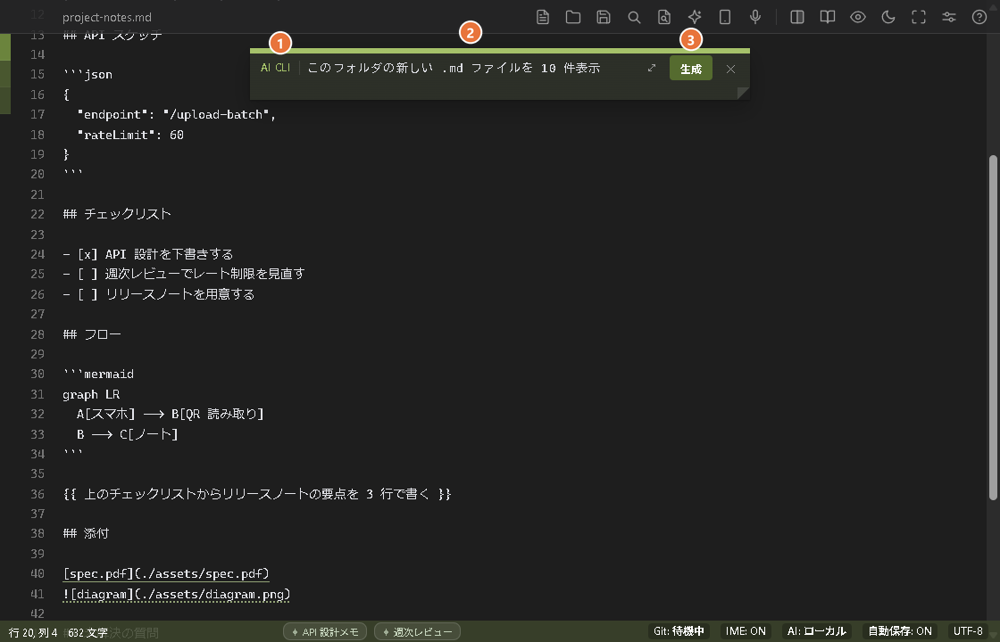
- モードのバッジ 「AI CLI」と出ています。クリックするか Tab を押すと、通常の CLI モードに戻ります
- 依頼欄 コマンドを書く代わりに、やりたいことを普通の言葉で書きます
- 生成（Enter） AIがコマンドを欄に書き込むので、内容を確認します。もう一度 Enter で実行します
- Ctrl + E でバーを開き、Tab で AI モードにするバー左端のバッジが
AI CLIになります。前回 AI モードだったときは、最初からこのモードで開きます - やりたいことを日本語で書く例：「今日更新されたファイルを探して」「ポート8080を使っているプロセスを終了して」
- Enter で生成AIが対応するシェルコマンドを作り、バーに入れます
- 内容を確認して Enter で実行実行前に必ず内容を読んでください
生成されたコマンドは、実行前に安全性チェックを通ります。システムを破壊しうるコマンドは実行が拒否され、注意が必要なコマンドには警告が表示されます。警告ではキャンセルが選ばれているので、続けて Enter を押すとキャンセルになり、押しっぱなしの Enter は無視されます。実行するには実行をクリックするか、Shift + Tab で移って Enter を押します。
任せる｜自動セレクター (Ctrl+Enter)
4つのキーの役割（macOS では Ctrl を Cmd に読み替えます）
行き先は、ネットワークを使わない決まりごとで判定します。外れることもありますが、迷うときは質問バーが開くだけで、ノートは勝手に変わりません。
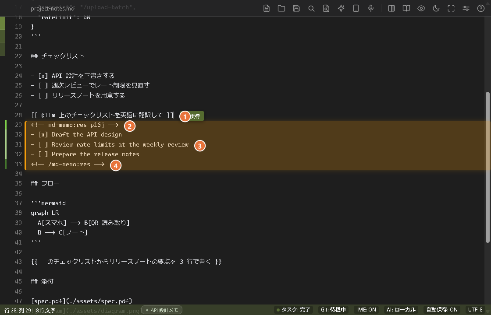
[[ @llm ... ]] に変わり、答えが下の結果ブロックに入ったところ- 指示の行
[[ @llm ... ]]に書き換わり、そのまま残ります - 結果ブロックの始まり
md-memo:resのコメント行です。ノートの中の文字として残ります - 答え 2つのコメント行の間に入ります
- 結果ブロックの終わり 閉じるコメント行です
- 1行で書く「上のチェックリストを英語に翻訳して」のような依頼や、
git statusのようなコマンドを、ふつうに書きます - Ctrl + Enter を押すLLM への指示なら、すぐ実行します。エージェントやコマンドなら、行を書き換えて止まります（macOS: Cmd + Enter）
- 止まったら、もう一度 Ctrl + Enter書き換えた行が実行されます（行の右の 実行 ボタンでも同じです）。やめるときは Ctrl + Z で書き換えを取り消します
- 結果を受け取る指示行の下に結果ブロックが入ります。指示行でもう一度 Ctrl + Enter を押すと、結果を作り直せます
- 待てないときは中断するタスクパネル（Alt + T）の「中断」で、実行中の目印が消えます。書き換えた指示行は、そのまま残ります
エージェントやコマンドは、書き換えたところで止まります。もう一度 Ctrl + Enter で実行します。設定で、止めずにすぐ実行することもできます（設定 → 連携 の「自動セレクター」）。
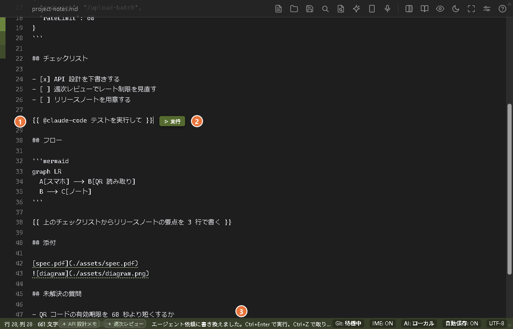
- 書き換わった行
{{ @claude-code ... }}になりました。まだ実行していません - 実行ボタン もう一度 Ctrl + Enter を押すのと同じです
- メッセージ 「エージェント依頼に書き換えました。Ctrl+Enter で実行、Ctrl+Z で取り消し」と出ています
普通の文章は、質問バーに回します。指示に見えない行では、質問バーが開きます。書いた指示は、対象の下に [[ @llm ... ]] として残り、すぐ実行されます。対象の行そのものは変わりません。
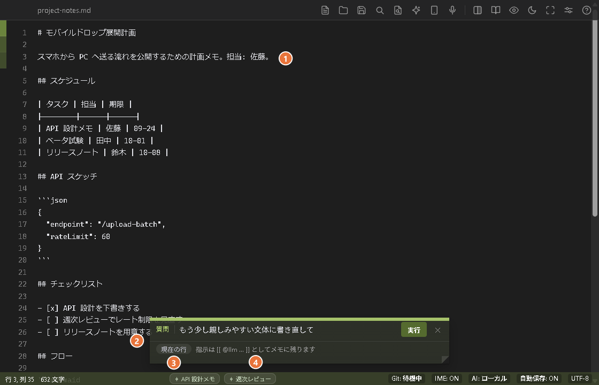
- 対象の行 指示の対象です。選択がなければ、カーソルのある行です
- 質問バー Ctrl + L と同じバーです。AIにしてほしいことを書いて、Enter で実行します
- 対象の表示 「現在の行」と出ています。選択したときは「選択範囲: N文字」です
- ヒント 書いた指示は、
[[ @llm ... ]]としてノートに残ります
{{ ... }}- 結果が、指示ごと置き換わります
- 元に戻すのは、結果が入った直後の Esc か Ctrl + Z
- プロファイル（
code:など）と@skillは、こちらのままです
[[ ]] / {{ @エージェント }}- 指示は、そのまま残ります
- 結果は、指示行の下の結果ブロックに入ります
- もう一度実行すると、結果ブロックだけが置き換わります
ひな形（スニペット） よく使う指示やコマンドの型を、ひな形として挿入できます。入口は、コマンドパレットの「タスクのひな形を挿入」、{{ を打ったときのクイックセレクター、;sum のような短縮語 + Tab の3つです。自作もできます（下の「ひな形」）。
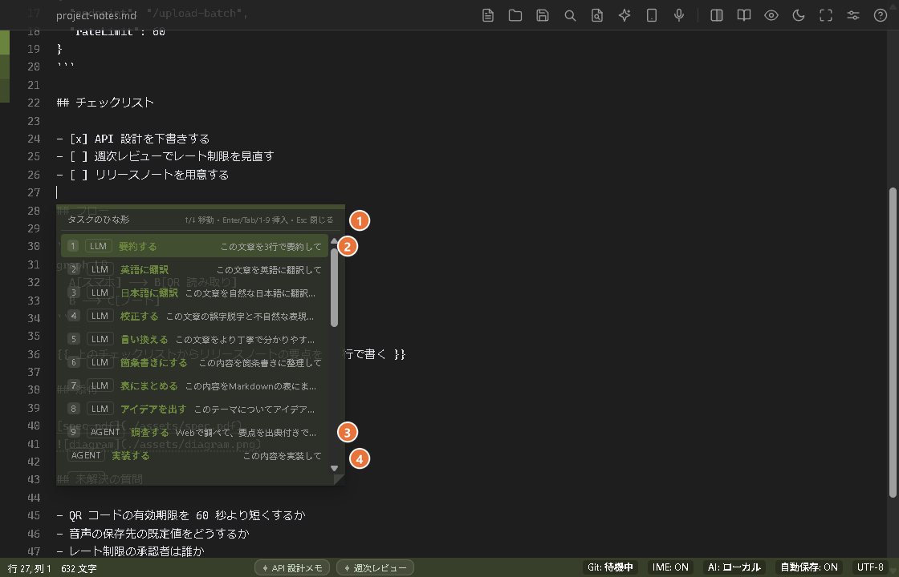
- 見出しとキー ↑↓ で移動、Enter・Tab・1〜9 で挿入、Esc で閉じます
- ひな形の1行 数字キー、種類のタグ、名前、本文の1行プレビューが並びます。上から9行は、数字キーで挿入できます
- 種類のタグ LLM は内蔵AI、AGENT はエージェント、CMD はコマンド、TEXT はそのまま入るテキストです
- 続きの一覧 下にスクロールすると、コマンドとテキストのひな形、agents.yaml に書いた自作のひな形が続きます
記法と結果ブロック（書き方・結果の形・再実行・中止）
| 記法 | 実行先 | 結果の入る場所 |
|---|---|---|
[[ @llm 指示 ]] | 内蔵LLM（設定 → AIモデル のテキストLLM） | 指示行の下 |
[[ $ コマンド ]] | シェルコマンド。コマンドバーと同じ安全チェックを通ります。標準入力はありません | 指示行の下（コードブロック） |
{{ @エージェント名 指示 }} | agents.yaml のエージェント。名前は、キーか別名（大文字小文字は区別しません） | 指示行の下 |
{{ ... }}（従来） | 従来どおり（プロファイルの {{ }} や {{ @skill ... }} を含みます） | スロットを結果で置き換え |
- 書き方の決まり:
[[ ... ]]は、中身が@llmか$で始まるときだけ記法として扱います。ウィキリンク（[[Wiki Link]]）には触れません。1つの記法は1行に収めます。- [[ @llm ... ]]や> {{ @claude ... }}のように、リストや引用の記号の後ろにも書けます。 - @名前の探し方:
{{ @名前 ... }}の名前は、まずエージェント（キー、別名の順）として探し、どれでもなければ、従来どおりスキル指定として扱います。既定の別名は、claude-codeにclaude・cc、agyにantigravity・geminiです。hermesとcodexには、既定の別名がありません。 - エージェント指名の前提指示:
{{ }}プロファイルの「コードブロックだけ返す」という前提の指示は、付きません（調査などが壊れるためです）。指示が空で、そのエージェントが指示を引数に取る（argsに{instruction}がある）ときは、CLI を起動せず、結果に「指示が空です。{{ @名前 指示 }} の形で書いてください」と入ります。
結果ブロックの形
[[ @llm 英語に翻訳して ]]
<!-- md-memo:res a1b2 -->
結果の本文
<!-- /md-memo:res -->- 実行中: 指示行の直下に、1行の目印
<!-- md-memo:run a1b2 -->が入ります。終わると、結果ブロックに置き換わります。a1b2の部分は、英数字の短い id です。 - 指示行と結果: 指示行そのものは、実行しても書き換わりません。結果は、前後の空白を落として入ります。ブロックの中に、空行は足されません。
- コマンドの結果: 出力に含まれるバッククォートの連続より長いフェンスで囲んだ、コードブロックです。失敗したときは、出力・標準エラー・
exit code Nの行が、同じブロックに入ります。 - LLM・エージェントの失敗: LLM は
[LLMエラー: メッセージ]、エージェントは[エージェント名 エラー: メッセージ]の1行が入ります。メッセージは1行にまとめられます。AI の要求では、何が起きたか（たとえば接続できない）を画面の言語の平易な文で示し、API キーが入ることはありません。 - コメント行: 結果ブロックの前後のコメント行は、ノートの中の普通の文字です。エディタには見えますが、syki::sok のプレビューでは隠れます。消しても、ほかには影響しません（実行中に消したときは、答えがノートの末尾に追加されます）。
- 再実行: 実行済みの指示行で Ctrl + Enter を押すと、下の結果ブロックを置き換えます（クラッシュなどで残った目印も同じです）。積み重なりません。実行中に押すと、「このスロットはすでに実行中です」と出ます。
- 中止: タスクパネル（Alt + T）の「中断」で、実行中の目印が消えます（指示行は残ります）。LLM は提供元に中止を伝えられないので、目印を消し、遅れて届いた答えを捨てる動きです。コマンドとエージェントは、実行を止めます。再実行の途中で中止すると、置き換えた古い結果は戻りません。
- 文脈（
ctx=above）: 質問バーで記録した指示の目印には、ctx=above n=行数が付きます（例:<!-- md-memo:res a1b2 ctx=above n=1 -->）。再実行では、指示行の真上にある、空白でない行（最大 n 行）を、対象のテキストとして再び送ります。間に別の指示行や結果ブロックがあれば、飛び越えます（最大80行・8000文字）。手書きの指示、ひな形から作った指示、行の書き換えで作った指示には付かず、書いた文言だけが送られます。周りの文章を、暗黙に送ることはありません。 - 結果ブロックの中: カーソルが結果ブロックの中にあるときは、「これは実行結果のブロックです。指示はブロックの外に書いてください。」と出て、何も起きません。結果に
{{ }}が含まれていても、実行されません。
結果を探す・扱う
- 緑のバー: 結果ブロックは、行番号の横のガターに、細い緑のバーで表示されます。始まりのコメント行は明るい緑、答えの行は薄い緑、終わりのコメント行は濃い緑です。閉じられていないブロック（実行が終わらなかったもの）は、始まりの行に明るい緑のバーだけが付きます。結果ブロックのないノートには、何も出ません。本文そのものに色は付きません。
- コマンド: コマンドパレット（Ctrl + Shift + P）で「結果」と入力すると、次の結果ブロックへ移動、前の結果ブロックへ移動（ノートの端まで行くと反対側に戻ります）、この結果をコピー（前後のコメント行を除いた答え）、この結果を削除（コメント行ごとブロック全体）、この結果を確定が出ます。コピー・削除・確定は、カーソルのあるブロックが対象です（前後のコメント行も、ブロックの中として扱います）。削除と確定は、取り消し1回で元に戻せます。初期状態では、どれにもキーは割り当てられていません。設定 → ショートカット の「結果ブロック」で、好きなキーを付けられます。プレビューがエディタを覆っている間は、メッセージが出るだけです。
- 確定: 答えは通常のテキストとして残り、前後の2つのコメント行が消えます。答えの中に
[[ @llm ... ]]や{{ @エージェント ... }}の記法があると、結果ブロックの外に出るので、また実行できる状態に戻ります（その行で Ctrl + Enter を押すと実行されます）。
判定のしくみ（順番・振り分け・設定がないとき・限界）
Ctrl + Enter を押したときの判断の順番（ネットワークを使わず、押した瞬間に決まります）
- 日本語入力の変換を確定する Enter のときは、何もしません。押しっぱなしでも、繰り返しては実行しません。
- カーソルが結果ブロックの中なら、「これは実行結果のブロックです。指示はブロックの外に書いてください。」と出して、何もしません。
- カーソルの位置に、新しい記法のタスクがあれば、そのタスクだけを実行します。選択があるときは、選択の先頭にあるタスク、なければ選択した行の最初のタスクです。複数行を一度に走らせることはありません。
- カーソルが従来の
{{ }}系のスロットの中なら、従来どおり実行します（結果で置き換わります）。 - 自動判定がオフ、または行が空白なら、従来の動きです。カーソルより後ろの次のスロット、なければノートの最初のスロットを実行し、どれもなければ「実行できるスロットが見つかりません」と出ます。コードブロックの中では、何も起きません。
- 対象は、選択範囲、なければ現在の行です。選択が行の一部だけのとき、選択が複数行のとき、行が指示に見えないとき、迷うときは、質問バーを開きます。行のテキスト全体を選んだときは、選択なしと同じ、その行の判定になります。
- 行全体が指示に見えるときは、次の表のとおりに動きます。
| 判定 | 動き |
|---|---|
| LLMへの指示 | 行を [[ @llm 行の内容 ]] に書き換えて、すぐ実行します。LLM が未設定なら、ノートに触れず、「AIモデルがまだ設定されていません。設定 › AIモデル で設定してください。」と出します。 |
| エージェントへの依頼 | 行を {{ @エージェント名 行の内容 }} に書き換えて、止まります。「エージェント依頼に書き換えました。Ctrl+Enter で実行、Ctrl+Z で取り消し」と出ます。エージェント名は、行頭に @名前（別名も可）があればそれ、なければ既定のエージェント（設定 → 連携）です。 |
| コマンド | 行を [[ $ 行の内容 ]] に書き換えて、止まります。「コマンドに書き換えました。Ctrl+Enter で実行、Ctrl+Z で取り消し」と出ます。実行するときに、安全チェックを通ります。 |
設定 → 連携 の「自動判定したエージェント／コマンドは実行前に確認する」（既定はオン）をオフにすると、エージェントとコマンドも、書き換えと同時に実行します。
質問バーからの記録: 質問バーで指示を入力して Enter を押すと、対象の下の新しい行に [[ @llm 入力した指示 ]] が書かれて、すぐ実行されます。対象のテキスト自体は変わりません。LLM には、指示と対象のテキストの両方が渡されます。LLM が未設定のときは、バーを開かずにメッセージを出し、ノートは変わりません。
「指示に見える」ものの目安
- 指示と見なす: 依頼の言い回し（「〜して」「〜してください」「〜教えて」、翻訳・要約・校正 など）、疑問語のある質問、英語の命令形（translate、summarize など）。
- 指示と見なさない: 見出し、表の行、URL、コードらしい行、ふつうの文、4行以上、約240文字より長い文。質問バーが開きます。
- 行き先: 翻訳・要約・校正・言い換え・箇条書き・表・アイデアなどは LLM です。実装・リファクタリング・テストの実行・ビルド・コミットや PR などの Git 操作・調査・エラーログ、コードやバグの言葉が重なる修正などは、エージェントです（「テストを実行して」「npm test を実行して」もエージェントです）。
git status、ls -la、cat a.txt | sortのように、既知のコマンド名で始まり引数が付く行は、コマンドです。どれでもなければ LLM です（文字の答えだけで済む、安全側の選び方です）。 - 行頭の指定が優先: 行頭に
@llm、@エージェント名（別名も可）、$があれば、それに従います。 - コマンドの自動判定: 書き込みや削除をするコマンド（
rm、>での保存など）は、自動ではコマンドと判定されません。実行したいときは、[[ $ ... ]]と自分で書きます。 - 外れる例: 「資料は事前に共有してください」のような丁寧な依頼文も、LLM への指示と判定されます。
設定や環境が足りないとき
| 状況 | 動き |
|---|---|
| LLM が未設定（モデルか接続先が空。Gemini などのクラウドで API キーが空） | 「AIモデルがまだ設定されていません。設定 › AIモデル で設定してください。」と出て、ノートは変わりません。Ollama などのローカルは、キーなしで動きます。 |
| エージェントが見つからない（agents.yaml・PATH） | 行は書き換わりますが、「エージェント「名前」が見つかりません（agents.yaml と PATH を確認）。書き換え済み、Ctrl+Z で取り消し」という警告が出ます。実行すると、「エージェント「名前」には「コマンド」が必要ですが、PATH に見つかりません…」と出て止まり、ノートはそのままです（目印もエラー行も入りません）。 |
エージェントが agents.yaml で無効（{{ @agy ... }}、または @agy ... と書いた行） | 「エージェント「agy」は agents.yaml で無効です (enabled: false)」と出ます。何も実行されず、ノートもそのままで、別のエージェントが代わりに動くこともありません。 |
| コマンドが危険 | コマンドバーと同じ安全チェックが拒否し、「セキュリティ制限: 理由」と出ます。注意レベルのコマンドは、確認ダイアログが出ます。拒否や取りやめのときは、結果は入りません。 |
| コマンドが終わらない | コマンドは30秒で打ち切られ、失敗として扱われます。応答が届かないまま40秒たつと、「コマンドから応答がありませんでした (タイムアウト)」と出ます。 |
| 待っている間にノートが変わった・閉じた | 答えを書けないときは、「ノートが変更されました。もう一度キーを押してください。」と出ます。ノートを閉じたときは、答えを捨てます。 |
できないこと
- 判定は決まりごとで、外れることがあります。迷うときは質問バーが開き、ノートは勝手に変わりません。
- 1つのタスクは1行に収めます。1回の Ctrl + Enter で走るのは、1つのタスクだけです。
- コマンドに標準入力はありません（選択範囲をコマンドに流したいときは、コマンドバー Ctrl + E を使います）。
- LLM への通信そのものは止められません（中止は、答えを捨てる動きです）。
ひな形（スニペット）（入口・一覧・プレースホルダ・自作と別名）
入口は3つ
{{のクイックセレクター:{{を打つと出る候補に、従来のプロファイルとレシピのあと、ひな形が並びます（種類のタグ LLM / AGENT / CMD / TEXT、名前、本文の1行プレビュー）。数字キーの 1〜9 は、先頭の9行に付きます。プロファイルが先に並ぶので、これまでの手の動きは変わりません。Enter・Tab・数字で挿入、Esc で閉じます。打った{{は、ひな形に置き換わります。- コマンドパレット: 「タスクのひな形を挿入」で、ひな形だけの一覧が、カーソルの位置に開きます（上の図）。
- 短縮語 + Tab: 行頭か空白の後ろで、
;sumのような短縮語を打って Tab を押すと、ひな形に展開します。短縮語が完全に一致するときだけです。それ以外の Tab は、これまでどおりです。
[[ を打っても、何も出ません（ウィキリンクの入力を邪魔しないためです）。command のひな形のうちプレースホルダを含まないものは、コマンドバー Ctrl + E の候補にも出ます。
組み込みのひな形（OS ごとに版があるものは、実行中の OS の版だけが出ます。コマンドは、Windows は PowerShell 版、macOS・Linux は sh 版です）
| 種類 | 短縮語 と 名前 |
|---|---|
| LLM | ;sum 要約する / ;en 英語に翻訳 / ;ja 日本語に翻訳 / ;proof 校正する / ;rephrase 言い換える / ;bullets 箇条書きにする / ;table 表にまとめる / ;ideas アイデアを出す |
| エージェント | ;research 調査する / ;impl 実装する / ;test テストを実行 / ;review レビューする / ;refactor リファクタリング |
| コマンド | ;date 現在の日時 / ;gst Git: 変更状況 / ;gdiff Git: 差分の要約 / ;glog Git: 直近のコミット / ;grep 単語を検索 / ;rg 単語を検索 (ripgrep) / ;wc 行数を数える (ファイル) / ;uniq 重複を除いて並べ替え (ファイル) / ;jq JSON を整形 (jq) / ;big 大きいファイルを探す / ;ls ファイル一覧 |
| テキスト | ;llm LLM タスク (空) / ;agent エージェントタスク (空) / ;cmd コマンドタスク (空)。空の [[ @llm ]]、{{ @既定のエージェント }}、[[ $ ]] を、そのまま挿入します |
展開するときのプレースホルダ
${selection}: 選択範囲。コマンドパレットから挿入するときに入ります（{{や短縮語から挿入するときは空です）。${selection:文}: 選択範囲が空（空白だけのときも含む）なら「文」を入れ、あるときは選択範囲を入れます。${selection?前置き}: 選択範囲があるときは「前置き」と選択範囲を続けて入れ、空のときは何も入れません（前置きも出ません）。たとえばこの文章を要約して${selection?: }は、選択がなければ「この文章を要約して」、あれば「この文章を要約して: （選択した文）」になります。${line}、${date}、${agent}も同じ書き方ができます。文の中の}は\}、バックスラッシュは\\と書きます。文の中にプレースホルダは書けません。- 組み込みの文: LLM とエージェントの組み込みは、末尾が
${selection?: }です。選択がなくても、文として完結します。 ${line}: 現在の行（打った語や選択範囲を除いた残り）。${date}: 今日の日付（YYYY-MM-DDの形）。${agent}: 既定のエージェント。$0: 展開したあとの、カーソルの位置。- 文字どおりの
$0や${は、$$0、$${と書きます。 - 安全: 展開される値は1行にまとめられ、
[[ ]]や{{ }}を壊しません。コマンドでは、引用符・$・;・|などが取り除かれます。${selection}と${line}は、タスクでは2000文字、コマンドでは300文字までです。
自作のひな形と別名（agents.yaml）
- snippets: 項目は
id、label、kind（llm/agent/command/text）、trigger（任意）、body、os（win/unix/any。command 用）、agent（kind が agent のときの指名先。省略時は既定のエージェント）です。組み込みと同じidを書くと差し替え、新しいidは追加になります。 - YAML のバックスラッシュ: 二重引用符の中では、YAML がバックスラッシュを特別な文字として読むため、
\\}と書きます（\}だけだとファイル全体が読めなくなります）。一重引用符の中や|のブロックでは、\}のまま書きます。 - trigger: 空白を含まない2〜30文字です。大文字と小文字、全角と半角を区別せず、完全に一致したときだけ展開します。組み込みは
;で始まり、下の例は/weeklyです。どちらの書き方も使えます。 - aliases: エージェントごとに、
{{ @cc 指示 }}のような短い名前（別名）を付けられます。名前は、agents のキーかaliasesのどれかで、大文字と小文字は区別しません。キーは、別のエージェントの別名より優先されます。書かなくても、claude-codeとagyには、既定の別名が付きます。 - 反映:
{{の一覧、コマンドパレットの一覧、短縮語の展開は、syki::sok を再起動したあとに新しい内容になります。{{ @別名 ... }}の実行と、コマンドバーの候補は、再起動しなくても新しい内容を使います（実行のときと、バーを開くたびに、agents.yaml を読みます）。設定 → 連携 の「agents.yaml を開く」で開くファイルがなければ、コメントアウトした例と説明が入った雛形が生成されます。
snippets:
- id: "weekly"
label: "今週の振り返り"
kind: "llm"
trigger: "/weekly"
body: "この内容を今週の振り返りとして3点に要約して${selection?: }"agents:
claude-code:
command: "claude"
args: ["-p", "対象ノート: {file}\n指示: {instruction}"]
aliases: ["claude", "cc"]任せる｜エージェントに任せる ({{ }})
{{ 指示 }} と書いて Ctrl + Enter。外部のエージェントCLIがバックグラウンドで作業し、結果が {{ }} ごと置き換わります。{{ @名前 指示 }} なら、指示が残って結果は下に入ります。 エージェントCLIが別途必要この記法をスロットと呼びます。1行書いて Ctrl + Enter だけで振り分ける使い方は、自動セレクター をご覧ください。
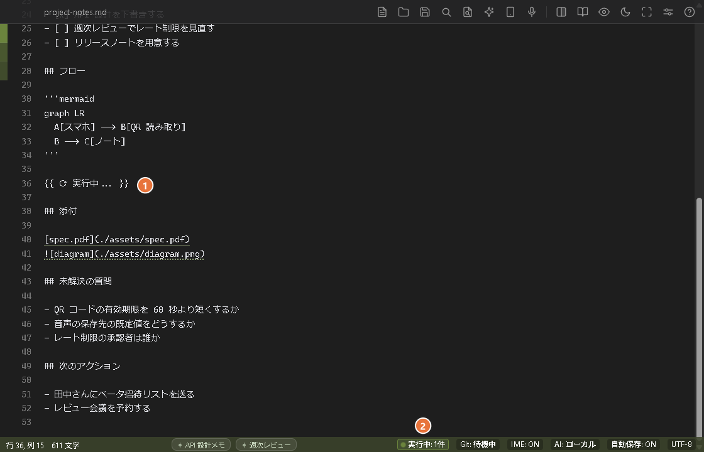
{{ }} が「実行中」の表示に置き換わり、ステータスバーにタスクのバッジが出ます- 実行中の表示 エージェントが作業している間、スロットの代わりに入っています。終わると結果に置き換わります（この表示の文字は、UIの言語にかかわらず日本語です）
- タスクのバッジ 実行中のエージェントタスクの数です。クリックか Alt + T で、タスクパネルが開きます
- 数秒で返ります
- 答えは対象の文の下に入ります
- 数分かけて、Web調査やファイル操作を行います
- その間もノートの編集を続けられます
{{ }} だけ覚えてください
記法は他にもあります（エージェントを名前で呼ぶ {{ @名前 指示 }} や、LLM・コマンド向けの [[ ]]）。迷ったら {{ }} に日本語で書けば動きます。
使い方の手順
{{と入力するカーソルの真下にクイックセレクターが開き、使える記法が並びます（記法のあとに、ひな形も並びます）- 記法を選ぶ↑ ↓ で選び、Tab か Enter で確定。1〜9 なら一発で確定。Esc で閉じます
- 指示を書く
{{ code:…}}が挿入され、カーソルは指示を書く位置に入ります - Ctrl + Enter で実行するmacOS: Cmd + Enter。小さな 実行 ボタン（再生の三角のアイコン付き）をクリックしても実行できます
{{ code: このプロジェクトの設定ファイルを読み込むGo関数を書いて }}
[? 2025年のGoのリリースサイクルと最新の安定版は？ ]制限・詳しい仕様（実行キーの挙動・入力の補正）
- 実行するスロットの決まり方: カーソルが
{{ }}などのブロックの中にあれば、Ctrl + Enter はそのスロットを実行します。ブロックの外では、自動セレクターが行の内容を見て動きます。カーソルより後ろにある次のスロットを実行し、それもなければノートの最初のスロットを実行する、という従来の動きになるのは、自動判定がオフのときと、行が空白のときだけです。コードブロックの中では、何も起きません。 - 見つからないとき: 従来の動きになる場面で、ノートにスロットがひとつもないと、ステータスバーに「実行できるスロットが見つかりません（カーソルを {{ }} などのブロック内に置いてください）」と数秒間表示されます。ノートの内容は変わりません。
- 実行中のとき: そのスロットがすでに実行中なら、「このスロットはすでに実行中です」と表示されます。
- 実行ボタン: 再生の三角のアイコンが付いた小さなボタンです。カーソルが、まだ実行していない完結したブロックの中にあると、そのブロックの横に現れます（ホバー時の表示: 「このスロットを実行 (Ctrl+Enter)」。macOS では Cmd+Enter）。押すと、Ctrl + Enter と同じ動きをします。
[[ @llm ]]・[[ $ ]]・{{ @エージェント名 }}のタスクでは、指示行の右に出ます（実行中は出ません）。 - クイックセレクター: そのまま文章を打ち続けても、自動的に消えます。
- 日本語入力のとき:
｛｛や【？と打ってしまっても、自動的に半角の記号へ直されます。 - 誤実行しません: コードブロック・インラインコード・Markdownリンク・URLの中に書かれた記号はスロットとして扱われないため、コード例の中に
{{ }}が出てきても実行されません。
既定の記法一覧
| 記法 | プロファイル名 | 既定のエージェント | 用途 |
|---|---|---|---|
{{ ... }} |
code | claude-code | コード生成。前置きを省き、そのまま動くコードブロックだけを返します。 |
[? ... ] |
research | claude-code | 調査。Web検索を行い、数値と一次ソースURLを添えて簡潔に回答します。 |
【? ... 】 |
writing | hermes | 文章整形。外部通信をせずローカルだけで、読みやすい日本語の箇条書きに整えます。 |
[! ... !] |
adversarial | claude-code | 批判的レビュー。リスク・脆弱性・ボトルネックを3点指摘します。 |
[>> ... ] |
deep-research-and-code（レシピ） | 既定エージェント | 多段実行。調査 → リスク反証 → 実装コード生成を順番に進めます。 |
- 記法ごとに、呼び出すエージェントと前提の指示（システム指示）が決まっています。同じ文章でも、返ってくる形が変わります。
- どの記法も、先頭に役割名を書けます（例:
{{ research: 調べたいこと }}）。この名前は、タスクパネルに表示されるラベルになります。 {{ @エージェント名 指示 }}（@claude、@cc、@geminiなどの別名も使えます）と書くと、そのエージェントに直接頼めます。この形では、指示行が残り、結果が下の結果ブロックに入ります。書き方の詳細は 自動セレクター をご覧ください。- プロジェクト内に
skills/<名前>/SKILL.mdがあれば、{{ @skill-name: 指示 }}と書いて、その内容を追加の指示としてエージェントへ渡せます。@名前は、まずエージェントの名前か別名として探し、なければスキル名として扱います。スキルが見つからないときは、スロットがエラー表示に置き換わります。
実行中の様子とタスクパネル (Alt+T)
実行を開始すると、スロットはその場で {{ ⟳ 実行中... }} に置き換わります（{{ @名前 }} と [[ ]] のタスクは、指示行の下に実行中の目印が入ります）。エージェントはバックグラウンドで動くので、ほかの場所を編集したり、別のスロットを同時に走らせたりできます。
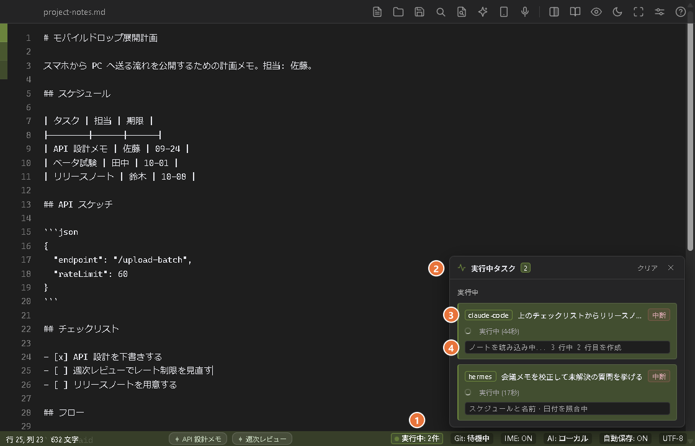
- タスクのバッジ ステータスバーにあります。クリックか Alt + T でパネルが開きます
- パネルの見出し 実行中のタスクの数です。消去ボタンで履歴を空にします
- 実行中のタスク エージェント名・指示・経過時間・中断ボタンが並びます
- ライブ出力 エージェントの最新の出力（Hover Peek）が、実行中は更新され続けます
- タスクパネル: Alt + T（macOS: Option + T）、または画面下のステータスバーの「実行中」表示をクリックすると開きます。実行中のタスクと直近の履歴が一覧できます。
- 途中経過（Hover Peek）: 各タスクカードに、エージェントが出力した最新の1行が1秒ごとに更新されて表示されます。止まっているのか進んでいるのかがひと目で分かります。
- 答えの入る場所: スロットのあったノートに入ります。そのあいだに別のノートへ移ったり、2つ目のペインを閉じたりしていても同じで、いま見ているノートには手を付けません。1つのノートで複数のスロットを動かしているときは、答えが届く順番によらず、それぞれの答えが自分のスロットを置き換えます。
- 中断: タスクカードの「中断」ボタンでプロセスを終了できます。スロットは元の指示文に戻ります（いま別のノートを開いていても、実行を始めたノートで戻ります）。
{{ @名前 }}と[[ ]]のタスクでは、実行中の目印が消えます（指示行は残ります）。実行中の表示をノートの中で書き換えてしまった場合は、ノートには手を付けず、ステータスバーにその旨と指示文を表示します。 - LLM・コマンドのタスク: タスクパネルには、エージェントのほかに、AIへの質問（Ctrl + L）と
[[ @llm ]]のタスク（名前は「LLM」）、[[ $ ]]のタスク（名前は「コマンド」）も並びます。 - 終わったタスクの「教訓」: 失敗したり完了したりしたエージェントのタスクのカードには、「教訓」ボタンが出ます。その実行から短い規則を作って残すと、次の実行から、そのエージェントへの指示の前に付きます（教訓を残す）。
- タイムアウト: 既定は180秒で、超えるとスロットにタイムアウトのメッセージが入ります。設定 → 連携 の「エージェント (依頼する)」で10〜600秒に変更できます。ただし
agents.yamlがすでにある場合（「agents.yaml を開く」で作られた場合も）は、ファイルの値のほうが優先されます。
結果の差し込みは、あなたが約0.5秒タイピングを止めるまで待ってから行われます。入力中に横から書き換えられて、カーソルが飛ぶことはありません。
結果の受け取りと取り消し
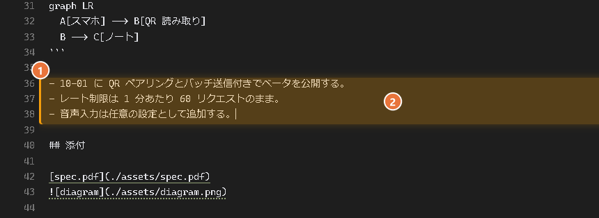
- 琥珀色の帯と、その左端の線 エージェントの結果が入った行にだけ付く目印です。設定した時間がたつと消えます
- 差し込まれたテキスト スロットの代わりに入った、エージェントの結果です。ハイライトの時間内に Esc を押すと、元のスロットに戻ります
- Ghost Diff（琥珀色の帯）: 結果が差し込まれた直後、入った行に淡い琥珀色の帯と、その左端に太さ3pxの琥珀色の線が出ます。ノートのほかの部分には付きません。帯はスクロールに合わせて動きます。エージェントのスロットだけでなく、行の下に書かれる結果や、AIに質問・自動セレクター・書き換え・校正の答えにも同じ帯が付きます（Esc で元に戻せるのは、結果でスロットが置き換わる場合だけです。ほかは Ctrl + Z で取り消します）。
- 表示時間: 設定 → 連携 の「変更箇所のハイライト時間 (ミリ秒)（Ghost Diff）」（既定4000ms、1000〜10000）で変えられます。時間が過ぎると帯は消えます。印の付いた文章を編集したり、取り消したり、置き換えたり、別のノートに切り替えたときは、すぐ消えます。ほかの場所で入力しても消えず、帯は文章に合わせて動きます。結果が続けて届いたときは、それぞれが自分の帯を持ちます。
- 取り消し: この間（設定した時間 + 1秒）に Esc を押すと、そのスロットだけが元の指示文に戻ります。Ctrl + Z でも、直前のスロット実行を同じように取り消せます。
- 1行に収める: 文章の途中に埋め込んだスロット（同じ行に他の文字がある場合）は、結果の改行が取り除かれて1行に収まります。
教訓を残す｜失敗した実行から規則を作る
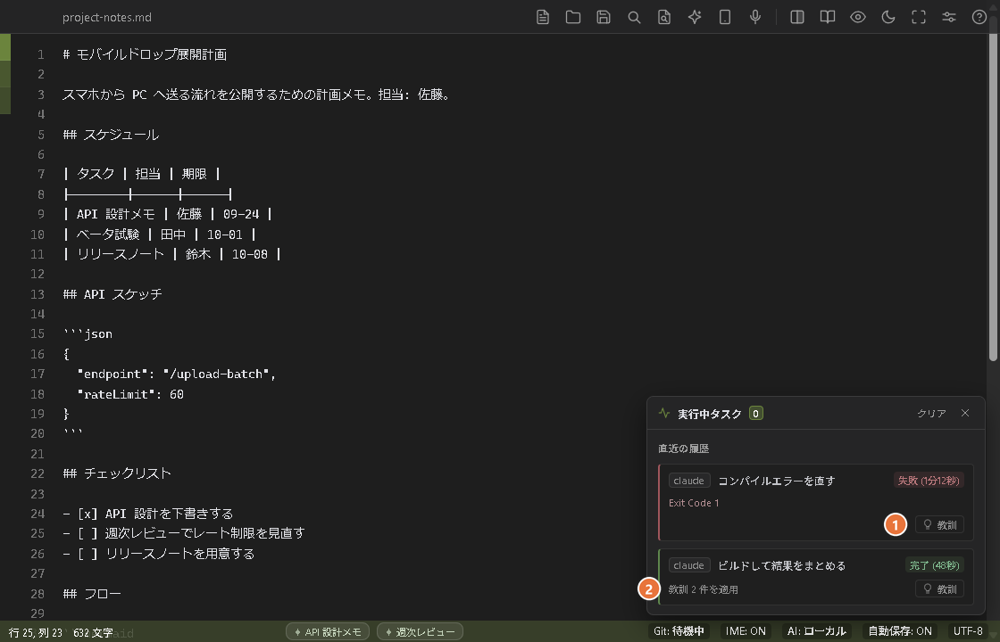
- 「教訓」ボタン 失敗したか、完了したエージェントのタスクのカードに出ます。押すと、下の画面が開きます
- 「教訓 N 件を適用」の行 そのタスクを動かしたときに、指示の前に付けた教訓の件数です。古い分を付けなかったときは、「M 件は多すぎて適用していません」も並びます
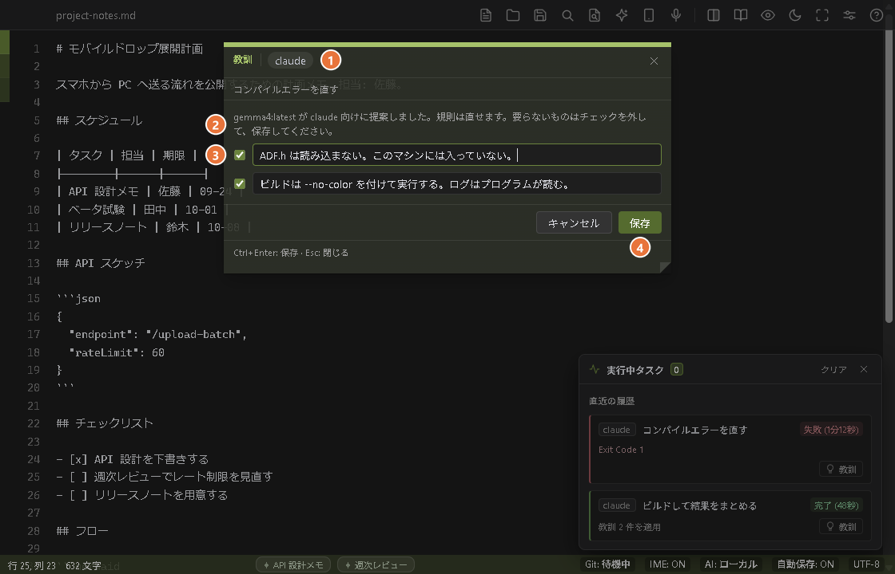
- エージェント名 どのエージェントの教訓になるかです（
agents.yamlのキー）。その下に、任せた指示の先頭が出ます - 提案したモデル どのモデル（設定 → AIモデル → テキスト）が、どのエージェント向けに提案したかを知らせる一文です
- 提案された規則 チェックボックスと 1 行の入力欄です。入力欄は直せます。残したくない規則は、チェックを外します
- 「保存」 チェックを入れた規則だけを、そのエージェントの教訓のファイルに足します
- 任せたタスクを動かして、終わらせるたとえば
{{ @claude ... }}を Ctrl + Enter で動かします。失敗した実行がふつうの使い方ですが、結果は出たものの思った結果ではなかった実行にも使えます - タスクパネルを開くAlt + T（macOS: Option + T）です。「教訓」ボタンは、終わったエージェントのタスク（失敗または完了）のカードに出ます。動いている最中のタスク、取り消したタスク、レシピ、AI への質問やコマンドのカードには出ません
- 「教訓」を押す画面が開き、送る内容の要約が出ます。エージェント名、指示の先頭、送る文字数（指示・エージェントの出力の終わり・エラー）、伏せ字にする秘密の件数、送り先（この PC のモデルか、クラウドのホストか）です。そのエージェントにすでに保存した教訓があれば、その件数も出ます。ここまでは何も送っていません。テキストモデルが未設定のときは、「AIモデルが未設定のため、提案を作れません。設定でモデルを選んでください。」と出て、「設定する」ボタンから設定に進めます
- 補足を書く（任意）「何がまずかったか（任意）」に一言書くと、原因を絞りやすくなります（500 文字まで）。補足も、送る内容に入ります
- 「提案を作る」を押すCtrl + Enter（macOS: Cmd + Enter）でも押せます。クラウドのホストには、先に画面のチェックで許可します（下の「何を、どこへ送るか」）。モデルが作っているあいだは、Esc で中止できます
- 提案を読んで、直す規則が 1〜2 件、チェックボックスと 1 行の入力欄で並びます。言い回しを直したり、要らないものはチェックを外したりします。残すほどの教訓がなかったときは、「残すほどの教訓はありませんでした。」と出ます。何がまずかったかを補足に書いて、「もう一度作る」を押すと、作り直せます
- 「保存」を押すチェックを入れた規則が、そのエージェントのファイルに足され、ステータスバーに「教訓を保存しました: エージェント名（N 件）」と出ます。規則は、アプリの表示言語で書かれます（日本語表示なら日本語です）
何を、どこへ送るか
- 押すまで、何も送りません: 「教訓」を押しても、まず送る内容を準備して見せるだけで、モデルは呼びません。「提案を作る」を押したときに、次の抜粋だけを送ります。ノートのほかの部分は送りません。
- 送る抜粋: 任せた指示の先頭 1500 文字、エージェントの出力の終わり 4000 文字（失敗の理由は、たいてい終わりに出るためです）、エラーの文 800 文字、あなたの補足 500 文字までです。
- 伏せ字: キー、トークン、パスワードに見えるものと、設定に保存してあるキーそのものは、送る前に伏せ字にします。伏せた件数は、画面に出ます。
- 送り先: 設定 → AIモデル → テキスト のモデルで、「AIに質問」と同じものです。このパソコンの中（
127.0.0.1、localhost、::1）にあるモデルなら、外へは出ず、許可も要りません。それ以外のホスト（クラウドや、同じネットワーク内のほかのマシン）へは、画面の「この内容を (ホスト) へ送ることを許可します」にチェックを入れるまで、「提案を作る」を押せません。許可はホストごとに 1 回で、「AIに質問」と同じgeneral.cloudConsentに記憶されます。許可がなければ、syki::sok 本体も送りません。 - モデルへの頼み方: 記録はデータとして渡し、中にある指示には従わないよう頼みます。規則は 0〜2 件で、各 1 文。この環境・この仕事に特有の原因（ファイル、コマンド、オプション、前提）に具体的に、と頼み、「注意深く」のような一般論は書かせません。
規則は、どこに、どんな形で残るか
エージェントごとに、ふつうの Markdown のファイルが 1 つできます。場所は、config.json のあるフォルダ（syki info の config_dir。Windows: %APPDATA%\syki-sok\、macOS: ~/Library/Application Support/syki-sok/）の中の lessons/<エージェント>.md です（たとえば lessons/claude-code.md）。コマンドパレット（Ctrl + Shift + P）の「教訓のファイルを開く」で、ふつうのタブとして開けます（ファイルが 1 つならそのまま開き、複数あれば選ぶ小さな一覧が出て、まだなければ、その旨が出ます）。
# Lessons for claude-code
<!-- syki lessons: one rule per "- " line. Edit or delete freely; other lines are ignored. -->
- このパソコンでは、テストを pytest -p no:cacheprovider で動かす。既定のキャッシュのフォルダが読み取り専用のため。 <!-- 2026-10-04 -->
- ADF.h は取り込まない。このパソコンではビルドが失敗するため。 <!-- 2026-10-04 -->- 1 行が 1 規則: 行頭が「
-」の行が規則です。それ以外の行（見出しやコメント）は無視されます。 - 行末の日付:
<!-- 2026-10-04 -->は、保存した日のメモです。あなたのためのもので、エージェントには渡しません。 - 自由に直せます: 行を直す、消す、手で足すのは、ふつうのノートと同じです。ファイルを消すと、規則はすべて外れます。1 規則は 1 行で、300 文字までです。
次の実行では、どう使われるか
そのエージェントが任されたタスクを動かすたびに、ファイルの下のほう（新しいもの）から最大 30 件、合計 4000 文字までが、指示の前に付きます。エージェントには、次のような文として見えます（最初の 1 行は、英語の決まった文です）。
Lessons from earlier runs on this machine (written or approved by the user; follow them):
- 規則 1
- 規則 2- カードに出ます: タスクのカードに、「教訓 N 件を適用」と出ます。古い規則を付けなかったときは、「M 件は多すぎて適用していません」も並びます。
- 対象になるもの: 1 つのエージェントに任せるタスクです（
{{ @エージェント ... }}、既定のエージェントで動く{{ ... }}、Ctrl + Enter の自動セレクターが渡したもの）。エージェントは、agents.yamlのキーで決まります。@ccのような別名で呼んでも、本名のファイルに働きます。レシピ、[[ ]]のタスク、AIへの質問には付きません。
1 つのエージェントだけ止める
agents.yaml の、そのエージェントに lessons: false と書くと、規則は付きません（ファイルは残ります）。syki::sok は agents.yaml を読むだけで、書き換えません。組み込みのエージェント（claude-code など）なら、この 1 行だけで足ります。書かなかった部分（コマンド、引数、別名）は組み込みのままです。自分の command を書いた項目は、書いたとおりに使われます。
agents:
claude-code:
lessons: falseコマンドや JSON-RPC から
読むだけのものがあります。syki lessons list [--agent <キー>] [--json|--text] と、JSON-RPC の lessons.list（トークンが必要）で、教訓のファイルごとに、規則の数と、次の実行で付く数などが分かります（Headless CLI、JSON-RPC）。規則を書くコマンドやメソッドは、わざと作っていません。あると、エージェントが、あなたの承認なしに、自分の将来の指示を書き換えられるからです。規則を残せるのは、この画面で承認したときと、あなたがファイルを直接直したときだけです。エージェントに頼んだ作業でも、教訓のファイルは書かせないでください。
教訓は、同じ失敗を繰り返しにくくするためのもので、よりよい結果になるとは約束しません。小さなローカルのモデルは、あいまいな規則や、似た規則を書くことがあります。保存の前に読んで直し、事実と合わなくなった規則は消してください。考え方の出どころは、失敗の記録をモデルに言葉で振り返らせて、次の指示を直すという GEPA（reflective prompt evolution）の論文（arXiv 2507.19457）です。この論文は、そうして振り返らせると成績が上がると報告しています。syki::sok が取り入れたのは、「モデルが振り返る、あなたが承認する、規則として残す」の 1 歩だけで、自動で最適化を繰り返すことはしません。
制限・詳しい仕様（検査・件数・読み込み・確かめていないこと）
- ボタンが出る範囲: 失敗または完了したエージェントのタスクのカードです。取り消したタスク、始まらなかったタスク、レシピには出ません。タスクパネルが覚えているのは終わったタスクの直近 10 件で、出ているのはそのうち新しい 5 件です。syki::sok を閉じると消えるので、実行のあと早めに「教訓」を押してください。
- 準備の有効期限: 準備した内容は 5 分で切れます。切れたあとで「提案を作る」を押すと、準備し直して、もう一度押すのを待ちます。補足を書き換えてから押したときは、補足を含めて準備し直してから送ります。送り先が変わっていたら、確かめるように出て、送りません。
- 時間と中止: モデルの答えは、最長 90 秒待ちます。中止しても、モデルへ送った依頼は取り消せず、答えを捨てるだけです。
- 提案の検査: 提案された規則は、1 行にそろえたうえで、空のもの、300 文字を超えるもの、
<!--や-->を含むもの、キーやトークン、パスワードに見えるものを含むもの、前の指示を無視させるような言い回し（「システムプロンプト」「指示を無視」など）を含むもの、すでにある規則と同じもの（大文字小文字や文末の句点の違いは同じと見なします）が、提案から外れます。保存のときにも、syki::sok 本体が同じ検査をもう一度行い、画面の言うことを信じません。 - 保存: 1 回に最大 5 件、1 つのファイルに 200 件までです。200 件を超える保存は、「このエージェントの教訓ファイルは上限（200 件）です。...」と断られ、ファイルは変わりません。すでにある規則は足さず、「それらの教訓は エージェント名 にすでに保存されています。追加はありません。」と出ます。書き込みは、一時ファイルに書いてから名前を付け替えるので、書きかけにはならず、ファイルがすでにあれば、その改行コードに合わせます。
- 読み込み: ファイルは、終わりの 64 KB まで読みます。「
-」で始まる行だけを規則とし、行末の日付のコメントを外し、制御文字を取ります。300 文字を超える行と、日付以外のコメントの印（<!--、-->）を含む行は読みません。ファイル名は、エージェントのキーの英数字と.、_、-以外を_にしたものです。 - 付かないエージェント: 指示を受け取る場所がない定義（
append_instruction: falseで、引数にも{instruction}がないもの）のエージェントには、規則も渡せません。ファイルは実行のたびに読み直すので、直したあとに再起動は要りません。 - 置き場所: 教訓のファイルは設定フォルダにあり、スクラップフォルダの Git 同期にも、設定パッケージ（エクスポート／インポート）にも入りません。別のパソコンへ移すときは、ファイルをコピーしてください。
- 軽さ: 使わなければ、何も読みません。起動時は何もせず、教訓の画面のスクリプトも、ボタンかパレットのコマンドを最初に使うときまで読み込みません。エージェントを動かすときに、そのエージェントのファイルがあれば 1 回読み、なければ、あるかどうかを調べるだけです。使った規則の文字は、そのエージェントの実行のたびに指示へ足されるので、増やしすぎないでください。
- 確かめていないこと: macOS の実機（コードは Windows と同じです）、スクリーンリーダーでの操作、補足の入力欄での IME の入力は、まだ確かめていません。
承認ゲート（レシピの途中確認）
[>> ... ] のようなレシピは、複数のステップを順番に実行します。危険な操作の手前で人間の確認を挟みたいときは、レシピに requires_approval_step を設定します。そのステップの後で実行が一時停止し、ノートに次のような行が挿入されます。
- [ ] 次のステップ（実装コードを生成する）を実行する // approve- 内容を確認する
[ ]を[x]に書き換えます - Ctrl + Enter を押す続きが実行されます。チェックを入れなければ、そこで止まったままです
最後のステップが終わると、その出力がレシピの行（または、チェックを入れた確認の行）を置き換えます。途中のステップの出力は、実行が止まった場所に残ります。
エージェントCLIは別途インストールが必要です
syki::sokはエージェント本体を同梱していません。claude、codex、ollama、agy などのコマンドを事前にインストールし、パスが通った状態にしておいてください。
エージェントが必要とするプログラムが PATH に見つからないときは、何かを起動する前にその旨をお知らせします（例: エージェント「hermes」には「ollama」が必要ですが、PATH に見つかりません。インストールするか、agents.yaml で別のエージェントを選んでください。）。ノートには手を加えません（実行中の目印も、スロットへのエラー文の書き込みもありません）。{{ を入力して開く一覧では、プログラムが見つからないエージェントの行に、小さく「未検出」と付きます。確かめるのはプログラムが見つかるかどうかだけで、そのプログラムが使うモデルやログインの準備までは確かめません（ollama run は、モデルを自分でダウンロードし始めることがあります）。
エージェントを実行する前に、syki::sok は agents.yaml の定義を確かめます。エージェント自身の権限確認を飛ばすフラグ（--dangerously-skip-permissions、--allow-dangerously-skip-permissions、--dangerously-bypass-approvals-and-sandbox、--yolo、--full-auto、--auto-approve）が付いている場合や、指示をコマンドとして実行してしまうシェルの場合（後述の append_instruction）は、エージェント名・フラグとその意味・コマンドラインを示すダイアログが出ます。実行で開始し、そのエージェントのコマンドラインが変わるまでは再び確認しません。キャンセル（最初に選ばれています。Esc でも同じ）なら何も実行せず、ノートもそのままです。
{{ }} スロット、{{ @エージェント }} の依頼、レシピ、自動セレクターの、どの経路で実行する場合も同じです。選択中のエージェントがこのような設定のときは、設定 → 連携にも警告が表示されます。確認は既知のフラグの一覧によるもので、サンドボックスではありません（エージェントは、そのCLIに許された操作をすべて行えます）。組み込みのエージェントには、このようなフラグは付いていません。
制限・詳しい仕様（エラー表示・作業ディレクトリと .env）
エージェントを起動できないと（PATH にないプログラムは、この手前でお知らせします。上を参照）、スロットは次のようなエラー表示に置き換わります。原因を直したあと、同じスロットにカーソルを置いて Ctrl + Enter を押せば再実行できます。
{{ ⚠ エラー: エージェント起動失敗: ... (再試行: Ctrl+Enter) }}- 作業ディレクトリ: ノートのある場所から上へたどって見つかったプロジェクトルートです。
.syki/、.md-memo/、agents.yaml（agents.yml/agents.jsonでも可）、AGENTS.md、skills/、.git/のいずれかがあるフォルダで、どれも見つからなければノートのあるフォルダです。 - .env: プロジェクトルートに
.envがあれば、その内容が環境変数としてエージェントへ渡されます（読み込まれるのはこのファイルだけです）。
agents.yaml で自分好みにする
記法もエージェントも、すべて agents.yaml で変更・追加できます。
- 「agents.yaml を開く」を押す設定 → 連携 の「エージェント (依頼する)」にあります。ファイルがなければ、コメント付きの雛形が自動生成されて開きます
- 記法・エージェント・レシピを書き換えるUTF-8（BOMなし）で保存します
- 次のスロット実行から反映される構文エラーがあると、エラーは出ずに既定の設定に戻ります。記法（
slot_profiles/recipes）や、別名（aliases）・ひな形（snippets）を変えたときは、syki::sokを再起動してください（{{の一覧・パレット・短縮語の展開が新しくなります。{{ @別名 }}の実行とコマンドバーの候補は、再起動しなくても新しい内容になります）
読み込まれる場所は、上から順に最初に見つかったものです（.yaml / .yml / .md / .json のいずれでも構いません）。
<スクラップフォルダ>/.syki-sok/agents.yaml（プロジェクトごとの設定）%APPDATA%\syki-sok\agents.yaml（macOS:~/Library/Application Support/syki-sok/agents.yaml）
v1.8.0 より後の組み込みエージェントの変更（手元の agents.yaml は書き換えません）
組み込みの定義（「agents.yaml を開く」が書き出す雛形も同じ）は、次のとおりです。
- claude-code:
claude -p "対象ノート: {file}\n指示: {instruction}"。以前は--file {file} --prompt {instruction}でしたが、Claude Code には--promptオプションがなく、--fileはfile_id:pathを受け取るため、指示が届いていませんでした。 - codex:
codex exec {instruction}。以前の--execute --file {file}は Codex CLI にないオプションでした。 - agy:
agy -p "対象ノート: {file}\n指示: {instruction}"。--dangerously-skip-permissionsを外しました。そのため、print モードでは尋ねられない権限が必要になると、agy が止まることがあります。以前の動作にしたい場合は、agents.yaml のargsにこのフラグを書き足してください。実行前に一度だけ確認します。
これらのコマンドラインは、メンテナーの環境では実行して確かめていません。codex exec と agy -p は各CLIの --help に載っている形で、Claude Code はその環境に入っていません。各CLIの --help で確認してください。Codex は Git リポジトリの外では動かないことがあり、そのための --skip-git-repo-check が --help に載っています。
すでにある agents.yaml は、そのまま使われます。以前の定義が残っている場合（以前のバージョンが書き出した雛形には含まれています）は、設定 → 連携に「確認が必要なエージェント定義」が表示され、起動の数秒後にステータスバーにも一度だけ表示されます。新しい定義をコピーで置き換え用の項目（キー・説明・別名はそのまま）がコピーされるので、agents.yaml を開いて古い項目と置き換えるか、項目を削除して組み込みの定義を使ってください。内容が変わるまで表示しないで、この表示を隠せます。指示をコマンドとして実行してしまうシェルのエージェントも、ここで警告されます。
エージェントを無効にする（enabled: false / disabled_agents）
組み込みのエージェント（claude-code、hermes、codex、agy）を agents.yaml から消しても、何も変わりません。次にファイルを読み込むとき、また追加されます。使わないエージェントは、無効にしてください。書き方は2つあり、どちらか一方でも両方でも使えます（合わせて扱われます）。
disabled_agents: [agy, hermes] # 最上位: キーを並べる
agents:
codex:
enabled: false # またはエージェント自身に書く- 選ばれなくなる: 無効なエージェントは、設定 → 連携 の一覧に出ず、
{{を入力して開く一覧にも行が出ません（無効なエージェントを使う記法の行も出ません）。自動セレクターやひな形にも選ばれず、既定のエージェントにもなれません。 - 別名も外れる:
agyを無効にすると、geminiとantigravityは空きます。 - それでも名前を書いたとき:
{{ @agy ... }}と書くと、エージェント「agy」は agents.yaml で無効です (enabled: false)と表示されます。何も実行されず、ノートもそのままで、別のエージェントが代わりに動くこともありません。slot_profilesの記法でagentが無効な場合も同じです。 - 既定のエージェント:
default_agentが無効なエージェントを指しているときは、有効なエージェントのうち最初のもの（claude-code、hermes、codex、agy の順、そのあとは名前順）が使われます。agents.yaml は書き換えられず、設定 → 連携 の「確認が必要なエージェント定義」でお知らせします。 - すべて無効にしたとき: 実行すると
有効なエージェントがありません: agents.yaml のすべてのエージェントが無効です (enabled: false)と表示され、設定の「エージェント」一覧はグレーアウトします。
設定例と書き方のルール
version: 2
default_agent: claude-code
timeout_seconds: 180
hover_peek_enabled: true
ghost_diff_duration_ms: 4000
# 1. 呼び出すCLIの定義。{instruction} は指示文、{file} はノートの絶対パスに置き換わります。
agents:
claude-code:
command: "claude"
args: ["-p", "対象ノート: {file}\n指示: {instruction}"]
description: "Claude Code"
my-agent:
command: "my-cli"
args: ["--prompt", "{instruction}"]
description: "社内用エージェント"
# 2. 記法とエージェントの対応。ここに書いた分だけが有効になります。
slot_profiles:
- trigger_open: "{{"
trigger_close: "}}"
name: "code"
agent: "claude-code"
system_instruction: "前置きを省き、そのまま動くコードブロックのみを出力してください。"
- trigger_open: "<<"
trigger_close: ">>"
name: "review"
agent: "my-agent"
system_instruction: "変更点をレビューし、指摘を箇条書きで返してください。"
# 3. 複数ステップをまとめて実行するレシピ。
recipes:
- trigger_open: "[>>"
trigger_close: "]"
name: "deep-research-and-code"
description: "調査 → リスク反証 → 実装"
steps:
- "最新の公式仕様とベストプラクティスを調査する"
- "移行リスクと破壊的変更を指摘する"
- "上記を踏まえて実装コードを生成する"
requires_approval_step: 2
self_refine: true- プレースホルダ:
{instruction}はスロットに書いた指示、{file}は現在のノートの絶対パスに置き換わります。{instruction}をどこにも書かなかった場合は、最後の引数として自動的に追加されます。追加したくないエージェント（{file}だけで動くもの）にはappend_instruction: falseと書きます。 - シェル: シェル（
powershell、pwsh、cmd、sh、bash、zsh、または引数に-Command、/c、-c）では、追加された指示がコマンドとして実行されます。append_instruction: falseを書くか、{instruction}を置く位置を自分で指定するまで、設定 → 連携に警告が表示され、実行前にも確認します。 - 記号の選び方:
trigger_open/trigger_closeには、Markdownの通常の記法（#、*、-など）とぶつからない組み合わせを選んでください。 - 上書きの挙動:
slot_profilesやrecipesを書くと、既定の記法は置き換わります。既定の4種類も残したい場合は、必要なものを書き写してください。一方agentsは、書かなかった既定のエージェント定義が（現在の組み込みの定義で）そのまま残り、書いたエージェントは書いたとおりに使われます。組み込みのエージェントを完全に外したいときは、項目を消すのではなく、無効にしてください（すぐ上の「エージェントを無効にする」を参照）。消しただけでは何も変わりません。 - aliases: エージェントに
aliases: ["claude", "cc"]のように書くと、{{ @cc 指示 }}と短い名前で呼べます。書かなくても、claude-codeとagyには既定の別名が付きます。 - snippets: 末尾に
snippets:を書くと、自作のひな形が、{{のクイックセレクターやコマンドパレットの「タスクのひな形を挿入」に並びます。書き方は 自動セレクター の「ひな形」をご覧ください。 - lessons: エージェントに
lessons: falseと書くと、そのエージェントには、教訓（承認して残した規則）を指示の前に付けません。書かなければ付きます。組み込みのエージェントなら、commandを書かなくても、この 1 行だけで足ります（書かなかった部分は組み込みのままです）。 - self_refine:
trueにすると、レシピの最初のステップで「下書き → 自己批判 → 修正」を最大2回繰り返してから次へ進みます。 - ファイルは UTF-8（BOMなし）で保存してください。
提案｜アクション候補 (Ctrl+J)
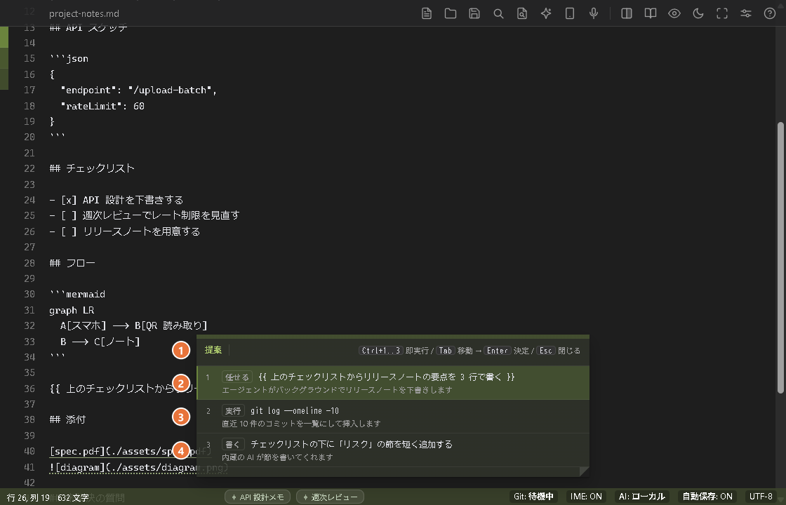
- パネルの見出し キーのヒントです。Ctrl+1〜3 で即実行、Ctrl+Tab で選択を移動、Enter で決定、Esc で閉じます
- 任せる バックグラウンドで動くエージェントに、作業を渡します
- 実行 コマンドを実行して、その出力を挿入します
- 書く 内蔵のAIが文章を書いて、挿入します
カードは、性質の異なる候補になるよう選ばれます。選ぶだけで、その動詞の入口へそのままつながります。
{{ … }}や[? … ]のスロットを挿入して、エージェントへ渡します
git statusのようなシェルコマンドを走らせます
- AIに文章を作らせます
- Jev 以外の外部モデル（OpenRouter のチャットモデルや自前の
/predictサーバー）を設定したときだけ出ます
内蔵のローカル規則（既定）では「任せる」と「実行」のカードが出て、並びは「任せる／実行／任せる」になることが多くなります。
Jev を設定したとき: 出るカードは内蔵のものと同じで、いまのメモに合うものを Jev が選んで上位に並べます。Jev が文章を書くことはありません。設定のしかたと送信先は、下の「送信されるデータ」にあります。
シェルコマンドを実行する候補は、実行前に必ず安全性チェックを通ります。rm や dd、mkfs といった破壊的コマンド、システム重要ディレクトリへの書き込み、フォーク爆弾などを検出すると、候補は実行されずに理由が表示されます。既知の危険パターンを対象とした防御なので、最終的な確認はご自身で行ってください。
制限・詳しい仕様（パネルの挙動・自動提示・バッジ）
- ヒント行: パネルが開いている間は、「Ctrl+1..3 即実行 / Ctrl+Tab 移動 → Enter 決定 / Esc 閉じる」が表示されます。
- Enter だけを押したとき: Ctrl + Tab で選択を動かさないまま Enter を押すと、ただの改行になります（候補は実行されず、パネルは閉じます）。
- 書くことの邪魔になりません: 数字キーだけ・Tab だけ・Ctrl + Enter（自動セレクターとスロットの実行に使われます）は、パネルに横取りされません。
- 結果の入る場所: 質問したノートの、カーソルのある行のすぐ下です。結果が届く前に別のノートを開いたときは、挿入しません（パネルに理由が出ます）。入れたい場所で、もう一度 Ctrl + J を押してください。
- 自動提示: Ctrl + J で呼び出すほか、入力が一定時間止まったときに自動で提示できます（既定で有効）。気になる場合は、設定 → 連携 の「提案 (アクション)」で「手動呼び出しのみ」を選びます。待機時間の長さもそこで調整できます。
- キーの変更: ショートカットキー自体は、設定 → ショートカット から自由に変更できます。
- ステータスバーのスイッチ: ステータスバーの AI をクリックします。提案で機能の ON / OFF を切り替え、その下の Ctrl+J を押したときだけ（設定したキー。macOS では Cmd+J）で、自動と手動を切り替えます。設定 → 連携 → 提案 (アクション)の2つのチェックボックスと連動しており、提案が OFF の間は Ctrl + J を押しても何も起こりません。
- 出力のないコマンド: 「実行」カード（
shカード）のコマンドが成功して何も出力しなかったときは、> (出力なし)が挿入されます。実行されたことが分かるようにするためで、これはアクション候補だけの動作です（コマンドバーは、結果のタブに「(no output)」と表示します）。この挿入文字列は、英語版・日本語版どちらのビルドでも日本語のままです。 - 作業ディレクトリ: 「実行」カードのコマンドは、syki::sokアプリ自身の作業ディレクトリで実行されます。たとえば
git status -sは、syki::sokを起動したフォルダの状態を返します。
制限・詳しい仕様（送信されるデータと Jev の使い方）
- 既定では、内蔵のローカル規則だけで候補を出します。ノートの内容は外部に送信されません。
- 送信されるのは、下のどれかを設定した場合だけです。
- OpenRouter 経由の Jev: Base URL とモデル名を既定のまま（
https://openrouter.ai/api/v1、jev-latest）にして、OpenRouter の API キー（sk-or-v1-…）を入力します。送信先はhttps://openrouter.ai/api/v1/systemoneに固定です。 - TypeSafe の Jev: Base URL を
https://api.typesafe.aiにして、TypeSafe の API キーを入力します。送信先はhttps://api.typesafe.ai/v1/systemoneです。 - OpenRouter のチャットモデル: モデル名を Jev 以外（例:
google/gemini-…）にして OpenRouter のキーを入力します。候補の文面をそのモデルに書かせます（送信先は OpenRouter のchat/completions）。 - 自前のサーバー: Base URL を上のどれでもない URL にすると、
<Base URL>/predictへ送られます。 - キー欄は1つなので、キーの種類は Base URL とキーの形（OpenRouter のキーは
sk-or-で始まります）で判断します。TypeSafe のキーを OpenRouter 用の Base URL のまま入れても、どこにも送られず、内蔵の候補になります。 - Jev は文章を書きません。内蔵の候補をすべて並べて「いまのメモに最も合うのはどれか」を1回だけ尋ね、その答えで並べ替えます。出るのは内蔵の候補だけです。
- Jev が答えられなかったとき（キーの誤り、残高不足、通信エラー、5秒の待ち時間切れ、確信が低いとき）は、内蔵ルールの候補に戻ります。そのキーを別のサービスへ送り直すことはありません。
- 送られるのはキャレット周辺の抜粋で、キャレットの前が最大1,500文字、後ろが最大500文字（合計約2,000文字）です。メモが空のときは送りません。
- Base URL とモデル名の欄には
https://openrouter.ai/api/v1とjev-latestがあらかじめ入力されていますが、API キーが空のままなら外部には送られません。 - 安全性チェックの正体は AST ガードレールです。内部名称の意味は 用語集 にまとめています。
エディタ & スプリット表示 (Ctrl+\)
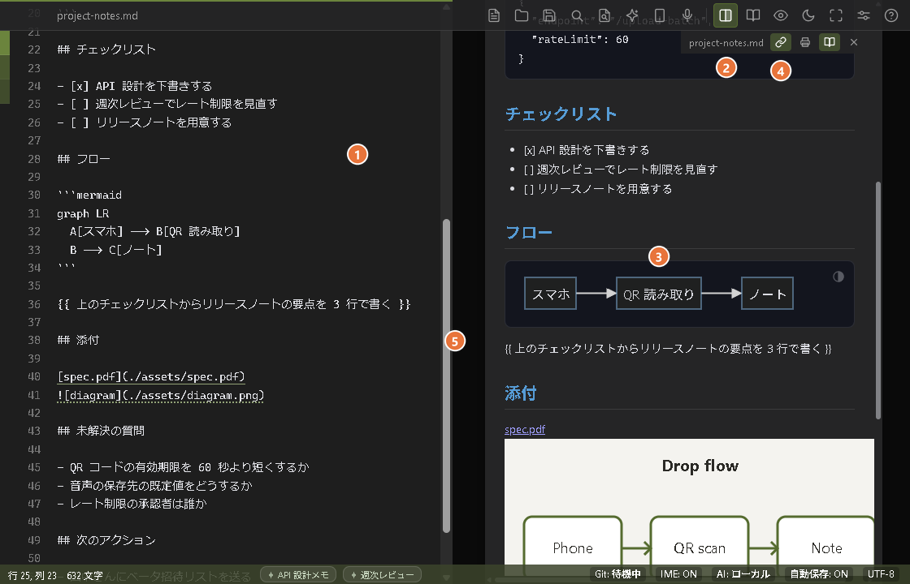
- エディタ Markdownの元のテキストです
- プレビューの見出し ノート名と、ペインのボタンが並びます
- Mermaidの図 ノートのコードブロックから描画された図です
- スクロール同期 左右を一緒にスクロールするかを切り替えます
- 仕切り ドラッグで幅を変えます。F6 でフォーカスを移して矢印キーでも動かせます。ダブルクリックか Enter で50:50に戻します
- 2ペインに切り替えるヘッダーの分割アイコン、または Ctrl + \（macOS: Cmd + \）
- 右ペインをプレビューにする右ペインのプレビューアイコンで、リアルタイムHTMLレンダリングを表示します
- スクロールは連動します片方をスクロールすると、もう片方も追従します
プレビューだけを横に開くコマンドは Ctrl + Alt + V（macOS: Cmd + Option + V）です。設定 → ショートカット の「プレビューを横（右側）に開く」にあり、キーを変更できます。
仕切り。2つのノートの間の仕切りは「ノド」で、やわらかい影と、両側へ薄れていくドットでできています。プレビューの横では、ページと机の色の段差だけが仕切りです。マウスでドラッグするほか、F6 を何度か押してフォーカスを仕切りに移し（エディタは Tab をインデントに使うので、キーボードで仕切りに行くのは、タブの帯の次にある F6 です）、← / →（2ポイントずつ、Shift で10）、Home / End（左のページをいちばん狭く 15%、いちばん広く 85%）、Enter（半分ずつに戻す。ダブルクリックでも戻ります）で幅を変えます。Esc で本文に戻ります。半分ずつのとき、2つのページはぴったり同じ幅です。幅は記憶されず、次に起動したときは半分ずつです。設定 → 一般 → 外観 & ウィンドウ →「2つのページの仕切り」で、見た目をノド（既定）・影だけ・細い線から選べます。
検索・置換・インデントと、コマンドが働くペイン
- 検索: Ctrl + F で検索バーが開きます（Ctrl + H なら置換の行も出ます）。Enter で次の一致、Shift + Enter で前の一致へ移ります。フォーカスは入力欄に残るので、そのまま Enter を押し続けられ、これらのキーでノートが変わることはありません。入力欄にフォーカスがある間、今の一致は文字の後ろに四角で示されます（とても大きなノートでは、選択されるだけです）。ノートの中では F3 で同じことができます。
- 置換: 置換の入力欄で Enter を押すと、今の一致を置換して次へ進みます。すべて置換は、すべての一致を置換します。どちらも、検索したあとにノートへ文字を打っていても、今のテキストに対して働きます。それぞれ Ctrl + Z 1回で戻り、その前に打った文字も取り消せます。
- インデント: 複数行を選んで Tab / Shift + Tab を押すと、まとめてインデント・インデント解除します。これも Ctrl + Z 1回で戻ります。
- 2つのペイン: ページごとにタブの帯があります（「タブがたくさんあるとき」を参照）。コマンド（パレットやキーから）は、最後に作業していたペイン（左か右）に働きます。ノートを切り替えたあとに届いた結果が、切り替え先のノートに入ることはありません。
HTML のノート: HTML ページのノートは、隔離された枠の中に表示され、ページのスクリプトも動きます。中のリンクはクリックするとブラウザで開きますが、開くのは http:// と https:// のアドレスだけで、実際にクリックしたときに限ります。syki::sok 自体でキーを押したりクリックしたりしてから数秒以内にリンクをクリックすると、ステータスバーに「リンクを開きませんでした。少し待ってからもう一度クリックしてください。」と出ます。
行をコメントにする (Ctrl+/)
<!-- -->) で隠し、同じキーで元に戻します。隠した文字はプレビューに出ず、コメントの中のタスクやスロットは実行されません。 Ctrl + / 設定不要- 行にカーソルを置くか、行を選択する選択範囲がかかる行がすべて対象です。行の先頭ちょうどで終わる選択では、その行は含みません
- Ctrl + / を押す（macOS: Cmd + /）各行が
<!-- 行 -->になります。字下げは前に残ります。- 項目は<!-- - 項目 -->になります - もう一度押すどの行もすでに 1 行のコメントなら、コメントを外します。1 回の操作が 1 回の元に戻す (Ctrl + Z) です
- まとめて 1 つのコメントにする: 設定 → 一般 →「コメントの切り替えで書く形」を「複数行をまとめて 1 つのコメント」にすると、最初の行の前に
<!--、最後の行の後ろに-->を書きます。同じキーで、そのコメントを外します。 - そのままにする行: 空の行、実行結果のマーカー (
<!-- md-memo:... -->)、すでに-->を含む行（コメントがそこで終わってしまうため）、複数行にわたるコメントの一部の行です。ステータスバーに行番号を表示します。ノートの前の方に閉じていない<!--があるとき（新しい-->がそれを閉じて、間をすべて隠してしまうため）と、行がコードブロックの中にあるとき（そこでは<!--はただの文字）は、メッセージを出して何も変えません。 - コメントにしたタスクは実行されません: コメントの中の
[[ @llm ]]、[[ $ ]]、{{ @agent }}、{{ }}形式のスロット、レシピの承認ゲートは、Ctrl + Enter、実行ボタン、スロットの解析のどれからも無視されます。カーソルがコメントの中にあるときの Ctrl + Enter は何もせず（ほかのスロットを代わりに実行することもありません）、ステータスバーにそう表示します。 - プレビューはコメントを表示しません: コメントだけの行は、前後の段落を分けずに消えます。コードブロックやインラインコードの中の
<!--はコードなので、そのまま表示します。 - タグの行はそのままです:
<!-- tags: 仕事 -->のようなタグの行（タグを付ける・外す）には触れません。コメントにも、コメントを外すこともしません（外すと、タグがプレビューに出て、タグでなくなってしまうためです）。タグの行だけを選んでいるときは何も変えず、そう伝えます。ほかの行がまじっているときは、ほかの行だけが切り替わります。
ファイルリンク & ドラッグ&ドロップ
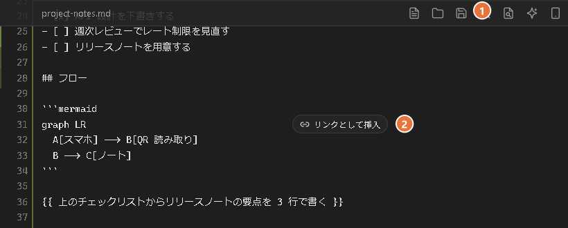
- 明滅する枠 エディタが、ドラッグ中のファイルのドロップ先になっています
- 「リンクとして挿入」のバッジ ドロップすると、ファイルへのMarkdownリンクが入ります。パスで参照できないファイルは、先にノートの assets フォルダへコピーされます
- ファイルをドラッグするエディタの上に運ぶと、枠が明滅して「リンクとして挿入」のバッジが出ます
- 文章の上でドロップするタブバーやヘッダー部分にドロップすると、これまで通り新しいタブとして開きます
- リンクが入るカーソル位置に、画像は
、それ以外は[name](...)。複数ファイルなら1行に1リンクずつ入ります
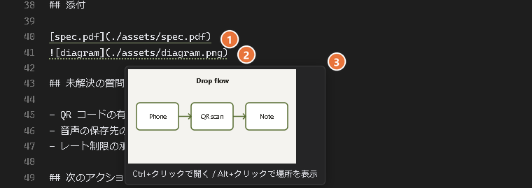
- ファイルのリンク Ctrl+クリックで開き、Alt+クリックでファイルの場所を表示します
- 画像のリンク 0.3秒カーソルを重ねると、サムネイルが出ます
- サムネイル リンク先の画像のプレビューです
エディタでは、リンクはすべて下線で示されます。対象は、Markdownのリンク [文字](...)、画像 （点線。カーソルを重ねるとプレビューも出るためです）、そのまま書いた http:// や https:// のアドレスです。色は、テーマのアクセントカラーを少し明るくしたものです。プレビュー表示は、これまでと変わりません。
Ctrl（macOS: Cmd）や Alt（macOS: Option）を押している間は、ポインタの下のリンクが太くなり、ポインタが手の形になります。0.3秒ほど重ね続けると、ヒントが出ます。ファイルやフォルダのリンクには「Ctrl+クリックで開く / Alt+クリックで場所を表示」、Webのアドレスには「Ctrl+クリックでブラウザで開く」と表示されます。
制限・詳しい仕様
- コピーして取り込みます: 組み込みブラウザではドロップされたファイルの元のパスを取得できません。そのためsyki::sokは、ファイル（1件あたり最大25MB）をメモの隣の
./assets/にコピーし、相対パスでリンクします。元のファイルの場所は記録されません。 - リンクの書式: リンク中のスペースと括弧はパーセントエンコード（
%20、%28、%29）され、Markdownとして正しく保たれます。Ctrl + クリックで開く動作には影響しません。 - 開けるリンク: エディタから Ctrl + クリック で開けるのは、
http://とhttps://のアドレス（ブラウザで開きます）、file://リンク、絶対パス、メモからの相対パス（既定のアプリで開きます）です。mailto:やjavascript:など、ほかの形式のリンクには下線が付かず、エディタからは開けません。 - 下線の更新: 下線は、入力が止まったときに引き直されます。
- 他のコンピュータの画像:
//または\\で始まる画像リンク（//server/share/pic.pngのようなネットワーク共有）は、プレビューに描かれず、サムネイルも作られず、そのコンピュータへの要求もしません。画像を見たいときは、ノートのフォルダにコピーするか、ノートにドロップしてください。Ctrl + クリックでは、リンクをそのまま開けます。 - 大きなノート: 10万文字を超えるノートでは、下線は付きません。Ctrl + クリックでは、そのまま開けます。
- macOS: 下線と Cmd + クリックは、Windows と同じ動作になる想定です。ただし、macOS の実機での確認は、まだ済んでいません。
クイックキャプチャ (Windows)
macOS にはクイックキャプチャがありません。macOS では、ツールバーのボタンも、設定 → ショートカット の項目も表示されません。
ポップアップは、いつも一番手前に出る小さなバーです。暗い色で角が丸く、少し透けています（不透明度は約85%）。入力欄が1つと、ボタンが3つ（Send・AI Send・Capture）並びます。ボタンの文字は、表示言語が日本語でも英語のままです。Send ボタンの色は、選んでいるテーマのアクセントカラーになります。
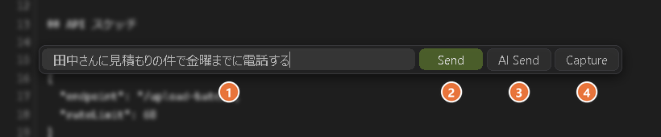
- 入力欄 ここにメモを書きます。空のまま送ると、クリップボードの文字を送ります
- Send 書いたとおりに追記します（Enter）
- AI Send AIで先に校正してから追記します（Ctrl + Enter）
- Capture 画面キャプチャを始めます（Ctrl + Shift + Enter）
- ポップアップを開くCtrl + Shift + Q を押します。どのアプリを使っている最中でも開きます
- ひとこと書く入力欄に、書き留めたいことを打ちます
- Enter で送る入力した文章が今日のスクラップに追記されて、ポップアップは閉じます
ポップアップを開く4つの方法
3つのボタンと、ポップアップの中で使えるキー
| ボタン | キー | 何が起きるか |
|---|---|---|
| Send | Enter | 入力した文章を、入力したとおりに今日のスクラップへ追記します。 |
| AI Send | Ctrl + Enter | エディタの Alt + C と同じ AI 校正を通してから追記します。待っている間、ボタンは「Working...」になります。使うのは、設定 → AIモデル のテキストモデルです。 |
| Capture | Ctrl + Shift + Enter | 画面のウィンドウや範囲を撮って、画像の中の文字を読み取ります。詳しくは 画面キャプチャ をご覧ください。 |
| （ボタンなし） | Esc | ポップアップを閉じます。 |
Send と AI Send は、入力欄が空のとき、クリップボードの文字を代わりに使います。日本語入力の変換中は、Enter と Esc を先に IME が使います。
どのウィンドウから書いたかも残せます
ホットキーで開いて AI Send で送ると、追記される文章の先頭に、直前まで使っていたウィンドウの名前が、次のような1行で付きます。
> [context: ウィンドウのタイトル]
書いた文章ツールバー・トレイ・コマンドパレットから開いたときは、この1行は付きません。手前にあるウィンドウが syki::sok 自身だからです。Send（Enter）で送る文章にも付きません。
ホットキーを変える・止める
- 設定 → ショートカット の「表示・画面」グループにある「クイックキャプチャ (グローバル・メモ入力ポップアップ)」で変えます。既定は Ctrl + Shift + Q です。
- キーを空にすると、ホットキーは無効になります。ツールバー・トレイ・コマンドパレットからは、そのまま開けます。
- ほかのプログラムがすでに使っている組み合わせは、登録できません。メッセージが出て、前のキーのままになります。
制限・詳しい仕様（保存先・自動で閉じる・AI校正が使えないとき）
- 保存先:
<スクラップフォルダ>/YYYY-MM-DD.mdに追記されます（スクラップフォルダの既定は~/Documents/syki-sok/scraps）。追記のたびに、前の内容とのあいだに空行が入ります。そのノートを開いていれば、すぐに表示が更新されます。 - 自動で閉じる: ポップアップは、フォーカスを失って1秒たつと、自分で閉じます。1秒以内にフォーカスが戻れば、そのまま残ります。
- AI Send の途中で閉じても: 「Working...」の間にポップアップを閉じても、メモは失われず、校正が終わったあとに追記されます。
- AI校正が使えないとき: AI校正がオフのとき（設定 → 一般）や、テキストモデルが未設定のときは、入力したとおりに追記します。
- 使えるとき: ホットキーは、syki::sok が動いている間だけ効きます。ウィンドウを閉じてトレイに常駐している間も使えますが、完全に終了しているときは使えません。
画面キャプチャ (Windows)
macOS 版はまだありません。macOS では使えません。
- ポップアップを開くCtrl + Shift + Q で クイックキャプチャ を開きます。説明を添えたいときは、入力欄に先に書いておきます（その文章が、追記される見出しの下に入ります）
- Capture を押すポップアップの Capture ボタン、または Ctrl + Shift + Enter です。ポップアップが閉じて、画面が少し暗くなります
- 撮りたいところを選ぶウィンドウにマウスを重ねると緑の枠が出ます。クリックで、そのウィンドウを撮ります。ドラッグして離すと、囲んだ範囲を撮ります
- 少し待つ画像の中の文字を読み取っています（数秒）。読み取りの進み具合は、画面には出ません
- ノートを見る画像と、読み取った文字が、今日のノートに追記されています
選んでいる間は、画面全体が少し暗くなり、マウスポインタが十字に変わります。メインのモニターの上には、操作のヒントの帯が出ます。選び終わるまで、画面の写真は撮られず、画面から何も読み取られません。
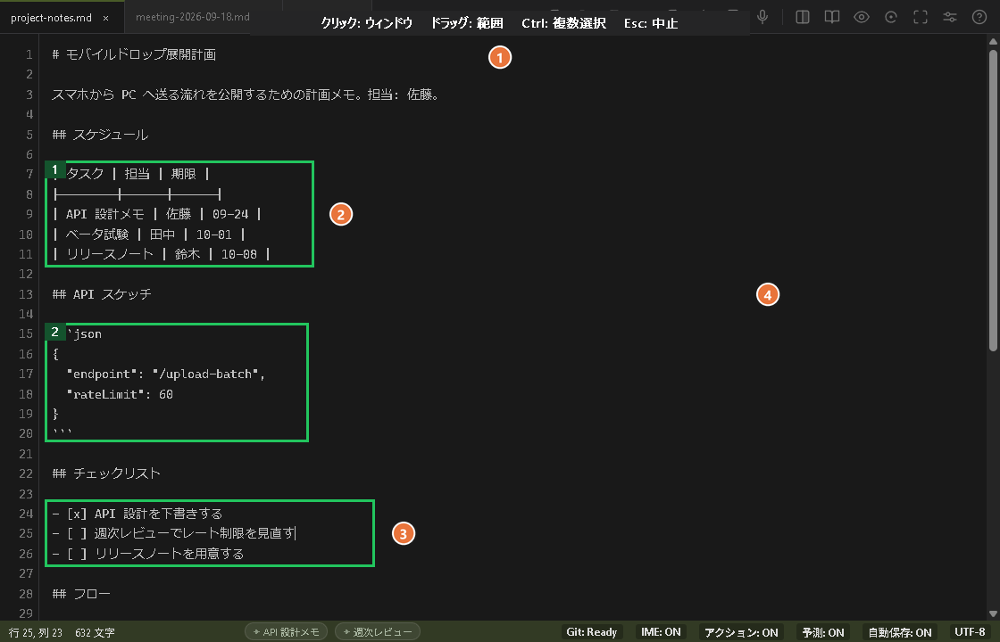
- ヒントバー 操作のキーです。クリックでウィンドウ、ドラッグで範囲、Ctrl で複数選択、Esc で中止
- 番号つきの緑の枠 ここまでに選んだものです。この順にキャプチャされます
- ドラッグ中の緑の枠 マウスを離すと、選んだものに加わります。Ctrl を離すと、まとめてキャプチャされます
- 暗くなった画面 選ぶまで、画面は読み取られません。Esc か右クリックで中止できます
選ぶときの操作
| 操作 | 何が起きるか |
|---|---|
| ウィンドウの上にマウスを重ねる | そのウィンドウに緑の枠が出ます。 |
| クリック | そのウィンドウを撮ります。 |
| ドラッグして離す | 緑の四角が動いてついてきます。離すと、その範囲を撮ります。 |
| Ctrl を押したままクリック・ドラッグ | 複数のウィンドウや範囲を集められます。選ぶたびに番号のバッジが付きます。Ctrl を離すと、まとめて撮ります。選んだウィンドウをもう一度 Ctrl + クリックすると、選びから外れます。 |
| Esc または右クリック | 中止します。何も保存されません。 |
| 何もしないで2分たつ | 自動で中止します。 |
ノートに入るもの
撮るたびに、1つのまとまりが今日のノートの末尾に追記されます。
**[18:12:15] 画面キャプチャ**
入力欄に書いた説明（あれば）
> [context: 直前まで使っていたウィンドウ]
**1. ウィンドウのタイトル**

> 読み取った文字（1行ごとに「> 」が付きます）- 1行目の見出しは、表示言語にかかわらず「画面キャプチャ」です。
- 「context」の行は、ホットキーで開いたときだけ入ります。
- ウィンドウを撮ったときの小見出しは、そのウィンドウのタイトルです。エクスプローラーなら、フォルダのパス全体が入ります。範囲を撮ったときは「1. 選択範囲 (200×100)」のように、幅×高さが入ります。
- 複数を撮ったときは、選んだ順に、番号つきの小見出し・画像・読み取った文字が並びます。
- 文字を読み取れなかったときは、読み取った文字の代わりに
> (OCRでテキストを抽出できませんでした: 理由)という行が入ります。画像は、そのまま残ります。
既定では、撮った画像は、設定 → AIモデル の「画像解析 (OCR)」で設定した画像モデル（Gemini など）に送られて、文字が読み取られます。送りたくないときは、設定 → 同期 の「ホットフォルダ」にある「画像をこのPCの外に出さない」をオンにします。このPCの中だけで読み取ります（精度は下がります）。詳しくは ホットフォルダ をご覧ください。
制限・詳しい仕様（選べるもの・撮り方・保存・できないこと）
- 選べるウィンドウ: 画面に見えているトップレベルのウィンドウです。最小化されているもの、別の仮想デスクトップにあるもの、デスクトップの背景、24ピクセルに満たない小さなウィンドウ、クリックを通り抜ける透明なオーバーレイは、選べません。緑の枠は、ウィンドウの見える縁に合わせて表示され、見えないリサイズ用の余白は含みません。
- 撮り方: ほかのウィンドウに一部が隠れているウィンドウや、画面から一部がはみ出しているウィンドウは、ウィンドウそのものから撮ります（PrintWindow）。隠している側のウィンドウは写りません。それ以外のウィンドウと、ドラッグで囲んだ範囲は、画面から読み取ります。動画プレーヤーや保護された内容など、一部のアプリは、真っ黒に写ることがあります。
- 画像の保存: 撮った画像は、
<スクラップフォルダ>/assets/にYYYY-MM-DD-HHMMSS-cap<番号>.pngという名前の PNG で保存され、ノートからリンクされます。あとから開いて、ペイントなどで編集できます。 - 文字の読み取り: 選んだ順に、1枚ずつ読み取ります。使う方法は ホットフォルダ と同じです（クラウドの画像モデルが先、端末内OCRが予備。「画像をこのPCの外に出さない」がオンなら端末内OCRだけ）。画像は読み取りの前に保存されるので、読み取りに失敗しても画像は失われません。
- 長いタイトル: ウィンドウのタイトルは、400文字まで、そのまま残します。
- できないこと: Webページの中の、ある部分だけを選んで撮ることはできません（ブラウザの拡張機能が必要になるためです）。macOS 版もありません。
ホットフォルダ: 画像・音声をノートに
Windows と macOS で、使える範囲が少し違います。
| できること | Windows | macOS |
|---|---|---|
| フォルダの監視・画像の文字読み取り・音声の文字起こし | 使えます | 使えます |
| 画像を読み取る方法 | クラウドの画像モデルが先、端末内OCRが予備 | クラウドの画像モデルだけ |
| 「画像をこのPCの外に出さない」 | あります | 表示されません（端末内OCRがないため） |
| 音声を文字起こしする方法 | Gemini（既定）、または Whisper（このPC内・x64 のみ） | Gemini だけ（Whisper の欄には「Windows (x64) のみ対応しています」と出ます） |
| トレイメニューの「Open inbox folder」、エクスプローラーの「送る」 | あります | ありません（macOS にはトレイも「送る」もありません） |
| コマンドパレットの「受信フォルダを開く」 | あります（オンのとき） | あります（オンのとき） |
syki ocr コマンド |
使えます | 使えます（クラウドの画像モデルだけ） |
- オンにする設定 → 同期 タブの下のほうにある「ホットフォルダ」で、「フォルダを監視し、画像はOCR・音声は文字起こしして今日のスクラップに追記する」にチェックを入れます（最初はオフです）
- フォルダを決める「監視するフォルダのパス」に入れます。既定は
~/Documents/syki-sok/inboxです。「参照...」で選べます - ファイルを入れるそのフォルダに、画像か音声のファイルを入れます。書き込みが終わるのを待ってから、処理が始まります
- ノートに追記される読み取った文字や文字起こしが、今日のスクラップに追記されます。処理したファイルは、スクラップフォルダの
assetsに移されます
すでにフォルダに入っているファイルは、syki::sok の起動時に1回だけ処理されます。そのあとは、入ってきたファイルを順に処理します。
ノートに入るもの
# 画像（.png .jpg .jpeg .bmp .gif .webp）
> 画像から読み取った文字（1行ごとに「> 」が付きます）

# 音声（.mp3 .wav .m4a .ogg .flac）
**[18:12:15]**
> 文字起こしされた文章
[会議.m4a](./assets/2026-09-24-181215-会議.m4a)- 処理したファイルは、移動されます（
<スクラップフォルダ>/assets/<日付-時刻>-<元の名前>）。削除はされません。読み取りや文字起こしに失敗したときも、ファイルは残ります。 - 失敗したときは、文章の代わりに、
> (OCRでテキストを抽出できませんでした: 理由)または> (文字起こしに失敗しました: 理由)という行が入ります。
画像は、どう読み取られるか
- 「画像解析 (OCR)」で設定したクラウドの画像モデル（Gemini など）が、先に読み取ります。精度がとても高いです
- うまくいかなかったとき（APIキーがない・通信できない・エラー・文字が見つからない）は、Windows では、端末内OCRに切り替わります
- 端末内OCRだけで読み取ります。画像は、PC の外に出ません
- そのぶん、精度は下がります
- 同じ設定 → 同期 の「ホットフォルダ」の欄にあります。macOS では、この項目は表示されません
この設定は、ホットフォルダのほか、画面キャプチャ、エクスプローラーの「送る」、syki ocr コマンドにも効きます。Ctrl + V で貼り付けた画像の OCR（画像貼り付け OCR）は、画像解析で設定したモデルが読み取ります。この設定は関係しません。
音声は、どう文字起こしされるか
エンジンは、設定 → AIモデル の「音声認識エンジン(フォルダ監視・Discord)」（音声入力の設定の下）にある「エンジン:」で選びます。
- 音声はクラウドの Gemini に送られます
- 専用のAPIキーがなければ、画像解析 (OCR) のAPIキーを引き継ぎます
- Windows と macOS で使えます
- 音声を PC の外に送らずに、PC の中で文字にします
- 最初に、必要な部品をダウンロードします（下の手順）
- macOS では使えません
このエンジンの選択が効くのは、ホットフォルダと Discord連携 だけです。画面での音声入力（音声入力、Ctrl + Shift + R）と Mobile Drop は、これまでどおり Gemini を使います。
フォルダをすばやく開く
- Windows: トレイアイコンを右クリックして、「Open inbox folder」を選びます（ホットフォルダがオンのときだけ表示されます。メニューの文字は英語です）。
- Windows と macOS: コマンドパレット（Ctrl + Shift + P）の「受信フォルダを開く」です（ホットフォルダがオンのときだけ表示されます）。
音声をこのPCの中だけで文字起こしする（Whisper・Windows x64 のみ）
Whisper は、音声をインターネットに送らずに、このPCの中で文字にするエンジンです。使うには、2つの部品を、必要なときに一度だけダウンロードします。
- エンジンを切り替える設定 → AIモデル の「音声認識エンジン(フォルダ監視・Discord)」で、「エンジン:」を「Whisper(このPC内・オフライン)」にします
- Whisper 本体をダウンロードする「Whisper 本体(実行ファイル)」の「ダウンロード」を押します（whisper.cpp、約9MB）
- モデルを選んでダウンロードする「モデル」の一覧から選び、「ダウンロード」を押します。最初に選ばれているのは、日本語に特化した kotoba-whisper の量子化版です
- 準備ができたことを確かめる「準備完了: 音声はこのPC内で文字起こしされます。」と出れば、完了です
2つの部品には、それぞれ「ダウンロード」「削除」「中止」のボタンと、進み具合の表示があります。ダウンロードを中止しても、次回は続きから再開します。部品は %LOCALAPPDATA%\syki-sok\components に保存されます（設定画面の「保存先:」にも、正確な場所が出ます）。
| モデル | 大きさ | 特徴 |
|---|---|---|
| kotoba-whisper v2.0 量子化版（日本語特化・推奨） | 約513MB | 最初に選ばれているモデルです。フル精度版よりわずかに精度が落ちる代わりに、小さくて速いです。 |
| kotoba-whisper v2.0 フル精度版（日本語特化） | 約1.4GB | いちばん正確です。ディスクとメモリを多く使います。 |
| Whisper large-v3-turbo 量子化版（多言語） | 約547MB | 日本語以外も認識できます。日本語だけなら、kotoba のほうが得意です。 |
| Whisper small 量子化版（軽量） | 約181MB | 速くて小さいモデルです。固有名詞や早口は間違えやすいです。 |
| Whisper base（最軽量・低精度） | 約141MB | 動作確認向けです。実用の精度は低いです。 |
| カスタム | - | PC にある ggml 形式の .bin ファイルを指定するか、https のアドレスからダウンロードします。 |
Whisper の詳細（カスタムモデル・詳細設定・音声の変換）
- カスタム: PC上のモデルファイルを指定: 「参照...」でファイルを選びます。ダイアログで「すべてのファイル」を選ぶと
.binが表示されます。ggml 形式の Whisper モデルが必要です。 - カスタム: URL からダウンロード: 「モデルの URL(https)」に、モデルのアドレスを入れます。「SHA-256(任意)」も入れると、ダウンロードしたあとに照合します（おすすめです）。
- 詳細設定: 「言語」は、空欄で自動判定です（例:
ja、en）。「スレッド数」は、0 で自動です。「初期プロンプト」には、固有名詞や専門用語を入れると、認識が安定します。 - 「Whisper が失敗したら Gemini で再試行する(音声が外部に送信されます)」: 既定はオフです。オンにすると、Whisper が失敗したとき、または準備できていないときに、Gemini で文字起こしし直します。そのとき、音声はクラウドに送られます。
- 音声の形式: m4a や mp3 などの音声は、認識の前に、PC の中で変換されます。再試行の設定をオンにしない限り、音声は外部に送られません。
エクスプローラーの「送る」から、画像を読み取る（Windows のみ）
画像ファイルを右クリックして、その文字を今日のスクラップに追記できます。ウィンドウは開きません。macOS には、この機能はありません。
- 「送る」に追加する設定 → 連携 タブの「OS連携 (送る)」で、「「送る」メニュー（画像→OCR）」の「追加」を押します。状態が「設置済み」になります（「解除」で元に戻せます）
- 画像を右クリックするエクスプローラーで画像ファイルを右クリックして、送る → syki::sok (OCR) を選びます
- ノートに追記される読み取った文字が、今日のスクラップに追記されます
コマンドラインから、画像を読み取る: syki ocr
「送る」の中身は、syki ocr <画像のパス> というコマンドです。ターミナルから、そのまま使えます（Windows と macOS。macOS ではクラウドのOCRだけです）。画像解析 (OCR) の設定と、スクラップフォルダは、config.json から読みます。ノートに追記されるのは、読み取った文字だけです。画像ファイルは、そのまま残ります。
syki ocr memo.png
# OCR text appended to C:\Users\me\Documents\syki-sok\scraps\2026-09-24.md
# 文字が見つからなかったときは (no text recognized)
# JSON で受け取る（--json は画像のパスの前に付けます）
syki ocr --json memo.png出力をリダイレクトやパイプに流したときも、JSON になります。
制限・詳しい仕様（設定ファイルのキー）
- 設定ファイルのキーは、ホットフォルダが
inbox.enabled（オン / オフ）とinbox.dir（フォルダ）、「画像をこのPCの外に出さない」がvision.ocrMode（空 = 既定のクラウド優先、on-device= 端末内だけ）です。 - 音声のエンジンは
voice.engine（geminiが既定、whisper-local）です。Whisper の設定はvoice.whisperの中にあります。詳しくは AIモデル タブ の表をご覧ください。 - 音声の文字起こしに使うAPIキーとBase URLは、音声入力の設定が空のとき、画像解析 (OCR) のものを使います。
Mermaid 図の自動描画 & 画像生成
```mermaid で書いた図は、プレビューにそのまま描画されます。高解像度のPNG画像として書き出すこともできます。```mermaidで記述したフローチャート、シーケンス図、ガントチャートが対象です- プレビュー画面で、リアルタイムに図としてレンダリングされます
- 図が見づらいときは、図の右上にある半分塗りの円のボタンで、ダークとライトを切り替えられます。ライトの図は白い背景に描かれます。選んだ配色は記憶されます
- 図の上で右クリックして「図の画像化...」を選びます
- Gemini（Nano Banana 2 Lite）と連携して、高解像度PNG画像としてエクスポートします
制限・詳しい仕様（画像化の設定）
- モデル・アスペクト比・解像度は、設定 → AIモデル の「画像生成」で選びます。
- Gemini APIキーの欄が空のときは、Visionのキー、次にテキストのキーの順に引き継がれます。
- 画像は
assets/diagram_<数字>.pngに保存され、が挿入されます。先にノートを保存しておくと、相対リンクになります。 - まだ保存していないノートにはフォルダがないので、リンクにはアプリ専用の
assetsフォルダのフルパスが入ります（macOS では~/Library/Application Support/syki-sokの下）。パスの中の空白は%20と書かれ、プレビューが元のパスに戻して読み込みます。 - 図の配色: 各図のボタンでダークとライトを切り替えます。設定 → 一般 の「図 (Mermaid) の配色」では、グレーとグリーンも選べます（どちらも白い背景）。
プレビューを印刷・PDF で保存
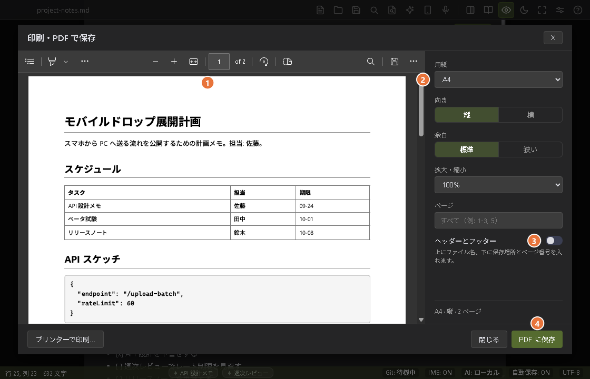
- 印刷されるページ 白い紙に黒い文字で、図は明るい配色で描かれます
- 用紙・向き・余白・拡大縮小 用紙は A4・A3・B5・レターから選びます。どれを変えても、プレビューが作り直されます
- ヘッダーとフッター 初期はオフです。オンにすると、上にファイル名、下に保存場所とページ番号が入ります
- PDF に保存 保存先を聞いて、PDF を書き出します。「プリンターで印刷...」は、プリンター向けのシステムの印刷画面です
- プレビューを開くツールバーのプレビューのボタンか Ctrl + P（macOS は Cmd + P）で、ノートをプレビューにします。Ctrl + Alt + V（macOS は Cmd + Option + V）なら横に開きます
- プリンターのボタンを押すプレビューの右上、「プレビュー」の札の左にあります。エディタの横に開いたプレビューでは、そのペインのヘッダー（スクロール同期と、エディタ / プレビューの切り替えのボタンの間）にあり、そのペインが見せているノートを印刷します。エディタの表示や、HTML ページの上には出ません
- 設定を選ぶ用紙（A4・A3・B5・レター）、向き（縦・横）、余白（標準・狭い）、拡大・縮小、ページ（例:
1-3, 5）を選びます。変えるたびに、左のプレビューが作り直されます - ヘッダーとフッターを決める初期はオフです。オンにすると、上にノートのファイル名、下に保存場所（フォルダー）、右下にページ番号が入ります。まだファイルになっていないノートは「（未保存のノート）」と出ます
- PDF に保存する、または印刷する「PDF に保存」は、保存先を聞いて（ノートの名前が初期値）、プリンターもドライバーも使わずに PDF を書き出します。「プリンターで印刷...」は、プリンター向けのシステムの印刷画面を開きます
制限・詳しい仕様
- 紙向きの見た目（テーマに関係なく）: 印刷されるのはプレビューだけです（タブ、ツールバー、ステータスバーは出ません）。白い紙に黒い文字で、見出し、引用、コード、表は、黒と灰色の罫線になります。画像はカラーで印刷します。画像や図は、ページの幅も、1ページの高さも超えず（小さいものは拡大しません）、途中で切れずに、次のページへ丸ごと移ります。ダークトーンの Mermaid の図は、印刷のあいだだけ明るいトーンで描き直し、終わると元に戻ります。コードは折り返し、表の行は切れず、画像の説明の行は、画像と同じページに付きます。縦のページより幅の広い図は、ページの幅に縮みます。「横」を選ぶと大きくなります。
- 余白: 「標準」は20 mm、「狭い」は10 mm です。
- 選んだ設定: 次回も覚えています（ページの指定だけは、覚えません）。
- メモリ: 使うまでは負担がありません。スタイルシートは印刷のときだけ効き、スクリプトは、最初にボタンを押したときに読み込みます。パネルを開いているあいだは、PDF ビューアーが作業メモリを約170 MB 使い（WebView2 のプロセスが2つ増えます）、パネルを閉じると返します。PDF は残しません。
- HTML ページ: HTML のページは印刷できません（プリンターのボタンも出ません）。印刷できるのは、Markdown のプレビューです。
- macOS: 同じボタンが、パネルの代わりに、macOS の印刷画面を開きます（macOS 11 以降）。左下の「PDF ▾ → PDF として保存」で PDF にでき（ファイル名の初期値はノートの名前）、プリンターを選んで印刷もできます。用紙、向き、拡大率は、その画面で選びます。余白は20 mm で、ヘッダーとフッターは付きません。実際の Mac での確認は、まだです。
- コマンドラインから（Windows のみ）:
syki tab pdf notes.md -o notes.pdfで、起動中の syki::sok が、そのノートの PDF を作ります（「PDF に保存」と同じページです）。--paper a3、--landscape、--margin narrow、--scale、--pages 1-3,5、--header-footerが使えます。ファイルを渡して-oを省くと、そのファイルの隣に PDF を出します。--overwriteを付けない限り、すでにある PDF は置き換えません。ファイルを渡さなければ、アクティブなタブを印刷します（--tab <id>で別のタブ。このときは-oが必要です）。ファイルを渡したときのノートは、裏のタブで一瞬だけ開いて、閉じます。プレビューを出すあいだ、ウィンドウが一瞬ちらつきます。詳しくは Headless CLI をご覧ください。 - JSON-RPC から: メソッドは
print.pdfです（Windows のみ。outは.pdfで終わる絶対パスで、overwriteなしでは、既存のファイルを置き換えません）。詳しくは JSON-RPC をご覧ください。
高速並列スクラップ検索 (Ctrl+Shift+F)
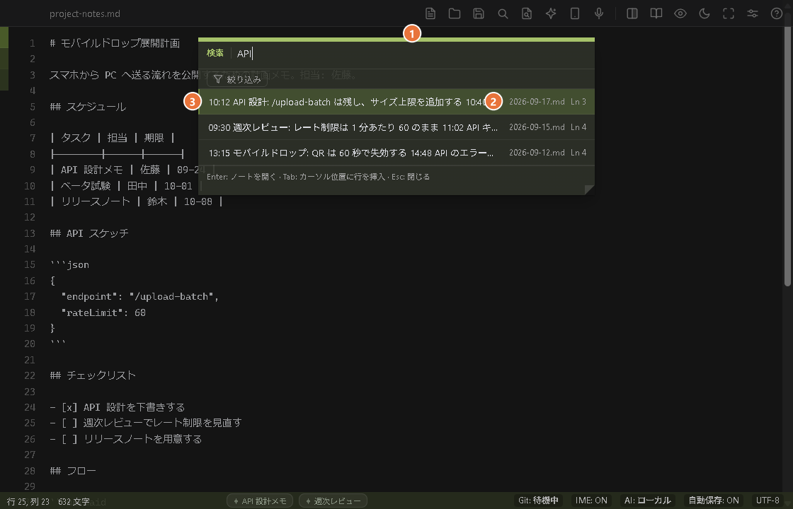
- 検索ボックス 入力するたびに、すべてのデイリースクラップを検索します
- ファイル名と行番号 一致した場所です
- 一致した行 前後の1行つきで表示されます。Enter かクリックで、その行を開き、Tab でその行をノートへ挿入します
- 検索モーダルを開くCtrl + Shift + F（macOS: Cmd + Shift + F）。選択していた文字、選択がなければカーソル直前の単語が、最初から検索ボックスに入り、すぐに検索されます
- 探したい単語を入力する過去のデイリースクラップを串刺しで検索します。最初の推測が違うときは、入力し直します
- 結果の行をクリックするその行へ一瞬でジャンプします（Enter でも同じです）
- または、その行を引用する結果の上で Tab（または Shift + Enter）を押すと、その行が、ノートのカーソル位置に挿入されます。ノートから離れません。選択範囲は、貼り付けのように置き換わり、Ctrl + Z で元に戻せます
制限・詳しい仕様
CPUの全コア（runtime.NumCPU()）を駆使した、マルチスレッド並列Grepで検索しています。
- 検索は1行ずつなので、複数行を選択していたときは、その最初の行で検索を始めます。
- 入力した文字全体が 1 行に入っているところがないときは、入力した語がそろっているノート（行も語順も問いません）を、近い順に表示し、その旨を一言添えます。行が見つかる検索は、これまでどおりです。
- カーソル直前の単語は、カーソルまでの行の最後の単語です。英数字の単語（
ESP32、foo/bar.go）か、カタカナと漢字のひと続きです。単語のあとの句読点や、ひらがなの助詞・語尾は読み飛ばすので、ESP32のピン配置なんだっけ？ならピン配置で検索を始めます。 - プレビューで選択した文字も対象です。Tab はエディタが見えているときだけ使えます。プレビューがエディタを覆っている間は、メッセージが出ます。
- 変換中（未確定）の Enter・Tab・矢印キーは、IME に任せます。
- Ctrl + F（ノート内の検索）も、エディタまたはプレビューで選択した文字から始まります。複数行なら最初の行です。
- 入力欄の下の「絞り込み」ボタンで、探す範囲を、期間とタグで狭められます（検索を期間とタグで絞り込む）。
検索を期間とタグで絞り込む
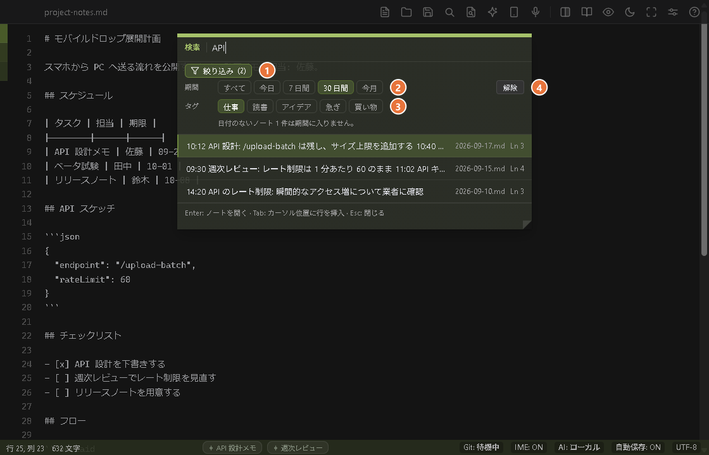
- 「絞り込み」ボタン 押すと、下の領域が開閉します。選んだものがあるときは、「絞り込み (2)」のように件数が出ます
- 期間 「すべて」「今日」「7 日間」「30 日間」「今月」から、1 つ選びます
- タグ ノートに書かれたタグが、使っているノートの多い順に並びます。複数選ぶと、そのすべてを持つものだけが残ります
- 解除 選んだ期間とタグを、すべて外します
- 検索を開くCtrl + Shift + F（macOS: Cmd + Shift + F）。入力欄の下に、「絞り込み」ボタンが出ます。絞り込みは検索を狭めるものなので、入力欄に検索語（意味では、探しているもの）が入っているときに働きます。このボタンを押すまで、タグの読み込みなどは何もしません
- 「絞り込み」を押す下に、期間とタグの領域が開きます。検索を開いてから最初に押したときだけ、ノートに書かれたタグを読み込みます（「タグを読み込んでいます...」と出ます）
- 期間を選ぶ「すべて」「今日」「7 日間」「30 日間」「今月」のどれかです。「7 日間」は今日を入れた 7 日、「30 日間」は今日を入れた 30 日、「今月」は今月の 1 日から今日までです
- タグを選ぶ押したタグが選ばれ、もう一度押すと外れます。複数選ぶと、そのすべてを持つものだけが残ります（同時に 8 個までで、8 個選ぶと、残りは押せなくなります）
- 結果を見る選ぶたびに、同じ検索語で、検索がやり直されます。「完全一致」でも「意味」でも同じで、「深掘り」も、絞り込んだ一覧の抜粋だけを使います。何も合わないときは、「条件に合うノートがありません」と出ます
- 外す「解除」で、期間もタグも、すべて外れます。期間だけを外すときは、期間の「すべて」を押します
タグの書き方
タグは、ノートの中に、次のような1行のコメントで書きます。プレビューにも、印刷や PDF にも出ません。ノートの文章と一緒に保存されるので、ファイルの名前を変えても、別のパソコンへ移しても、付いたままです。この行は手で書いてもよく、コマンドで付けることもできます（タグを付ける・外す）。
<!-- tags: 仕事, 買い物 -->- ノート全体に付ける: ファイルの先頭の、最初の見出し（
#〜###）か---の区切り線より上に書きます。先頭の YAML フロントマターのtags:（tags: [a, b]、tags: a, b、またはtags:に- aの行が続く形）も、同じようにノート全体のタグとして読みます（syki::sok は、フロントマターを読むだけで、書き換えません）。 - その見出しと、その下の小見出しに付ける: それ以外の場所に書くと、そのコメントがある 1 件のタグになり、その見出しの下に続く小見出しすべてにも付きます。1 件は、検索が 1 つと数える単位と同じで、見出し（
#〜###）か---の区切り線から、次の見出しか区切り線の前までです。小見出しは、その見出しより小さい見出しで（#の下の##・###。#の下にいきなり###が来てもかまいません）、同じ段か上の段の見出し、または次の---の区切り線が来るまで続きます。ウェブの記事を見出しの下に貼ると、記事自身の見出しで何件にも分かれますが、貼った先の見出しの下に 1 行書けば、記事の全部に付きます。####以下の見出しは区切りにならず、上の 1 件の文章の一部です。同じ段の別の見出しや、上の段の見出しには付かず、---の区切り線はそこで切れて、区切り線より上のタグは、その下に届きません。ノート全体のタグは、そのノートのどの 1 件にも付きます。1 つの節だけに付けたいときは、その節の見出しの下に書きます。 - 書き方のきまり: キーは
tagsでもtagでもよく（大文字小文字は問いません）、区切りは、,、、、;、空白のどれでもよく、先頭の#は付けても付けなくても同じです。英字の大文字と小文字、全角と半角の英数字は区別しません（#Workとworkは同じタグです）。ひらがなとカタカナ、似た意味の言葉は、同じとは見なしません。 - 読まないもの: コードブロックの中、行の途中にあるコメント、複数行にまたがるコメントです。1 つのコメントから読むのは 32 個まで、1 つのタグは 64 文字までです。
- 付ける・外す: 手で書くほかに、コマンドパレットの「この書き込みにタグを付ける」「ノート全体にタグを付ける」「タグを外す」で、タグを付けたり外したりできます（タグを付ける・外す）。AI にタグを提案させる機能は、まだありません。
たとえば、次のノートで考えます。
<!-- tags: 仕事 -->
# 10月の打ち合わせ
## 定例会
<!-- tags: 急ぎ -->
- 見積の返事は金曜まで
### 議事の補足
- 納期は来月
## 雑談
- 昼は蕎麦先頭の「仕事」は、ノート全体のタグなので、「定例会」にも「議事の補足」にも「雑談」にも付きます。「急ぎ」は、「定例会」と、その下の小見出しの「議事の補足」に付き、「雑談」には付きません。そのため、「仕事」で絞ると、このノートのどこでも見つかり、「急ぎ」で絞ると「定例会」と「議事の補足」が、「仕事」と「急ぎ」を両方選んでも、その 2 つが見つかります。
制限・詳しい仕様（日付・タグの数・送るもの）
- 期間は、ファイル名の日付です: ノートの日付は、ファイル名の先頭の
YYYY-MM-DDです（2026-09-27.mdと2026-09-27_題名.mdは、どちらも 2026-09-27 のノートです）。名前に日付のないノートは、どの期間にも入りません。期間を選んでいて、そのようなノートがあるときは、「日付のないノート N 件は期間に入りません。」と出ます。見出しの日付や、ファイルの更新日時では補いません。 - 深掘りに送るもの: 「深掘り」は、画面に出ている一覧と同じ絞り込みで、抜粋を集めます。短いノートに足す前後の文章も、絞り込みに合うものだけです。絞り込みの外のノートの文章が、AI に送られることはありません（確認の画面に並ぶ出典も、絞り込んだものだけです）。
- タグの一覧: 使っているファイルの多い順に、40 個まで並びます（あふれた分は「他 N 個」と数だけ出ます）。タグにポインターを重ねると、「このタグのノート: n 件」と出ます。タグが 1 つもないときは、書き方（
<!-- tags: 仕事 -->）が 1 行出ます。一覧は、検索を開いて最初に「絞り込み」を開いたときに 1 度だけ読むので、タグを書き足したあとは、検索を開き直してください。読み込めなかったときは、その旨が 1 行出ます。 - 覚えておく範囲: 選んだ期間とタグは、syki::sok を開いているあいだ、覚えています（検索を閉じても残ります）。保存はしないので、終了すると「すべて」に戻ります。「絞り込み」の領域は、検索を開くたびに、閉じた状態から始まります。
- キー操作: 絞り込みのボタンは、Tab の移動に入りません（Tab は、これまでどおり、結果の行の引用です）。マウスで押します。
- 軽さ: 絞り込みを使わない検索は、これまでと同じ経路・同じ速さです。タグで絞り込んだ検索では、タグのコメント（
<!--）もフロントマターもないファイルを、すぐに対象から外します。 - ほかの使い方: 同じ絞り込みは、
syki scrap search --tag 仕事,急ぎ（--ranked、--semanticとも組めます）と、JSON-RPC のscrap.searchのtagでも使えます。タグの一覧は、syki scrap tagsとscrap.tagsです（Headless CLI、JSON-RPC）。検索の結果に出る前後の行から、タグのコメントの行は除かれます。 - 確かめていないこと: macOS の実機（コードは Windows と同じです）と、スクリーンリーダーでの操作は、まだ確かめていません。
タグを付ける・外す
<!-- tags: 仕事 -->）を付けたり、外したりできます。1 件の書き込みにも、見出しとその下すべて（貼ったウェブ記事など）にも、ノート全体にも付けられ、取り消しは 1 回で済みます。 Ctrl + Shift + P →「タグ」 設定不要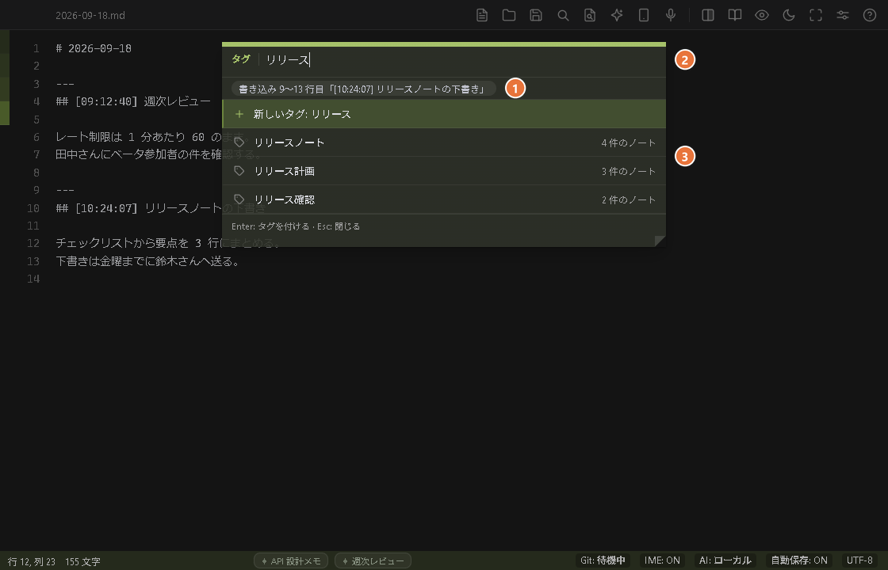
- 対象の表示 どこにタグを付けるかです。カーソルのある書き込みなら、「書き込み 9〜13 行目」のように行の範囲と、タグの行を入れる見出し（ここでは
[10:24:07] リリースノートの下書き）が、ノート全体なら「ノート全体」と出ます。書き込みは、1 つの見出し（#〜###）や---の区切り線から、次のものまでなので、タグの行は、カーソルよりずっと上に入ることがあります。Enter を押すと、ステータスに、どこに入ったか（見出し、行、カーソルから何行上か下か）が出ます - 入力欄 付けるタグを打ちます。いくつかをまとめて付けるときは、カンマ・読点・セミコロン・空白で区切ります
- タグの一覧 先頭に、打ったタグが「新しいタグ: リリース」のように出ます。その下に、ノートのフォルダにあるタグが、使っているノートの多い順に、件数つきで並びます。選んだ行のタグが、Enter（または Tab、クリック）で付きます
- カーソルを置く（または語を選ぶ）書き込みに付けるときは、その書き込みの中の行にカーソルを置きます。タグにしたい語があるときは、先にその語を選んでおきます。複数の行を選択しているときは、選択の最初の行と最後の行が、どちらもその下にある、いちばん近い見出しが対象になります（貼ったウェブ記事を丸ごと選んで実行すると、記事全体に付きます）。ペインを 2 つ開いているときは、作業していたほうのペインのノートが対象です。プレビューがエディタを覆っている間は使えません（エディタに切り替えるよう、メッセージが出ます）
- パレットでコマンドを選ぶ（または右クリック）Ctrl + Shift + P（macOS: Cmd + Shift + P）を押して「タグ」と打つと、「この書き込みにタグを付ける」「ノート全体にタグを付ける」「タグを外す」の 3 つが出ます。同じ 3 つは、エディタの右クリックメニューの「音声入力」の下にもあります（付けたい書き込みの上で右クリックしてください。書き込みは、キャレットが入った位置で決まります）。専用のショートカットはありません
- 付けるタグを打つか、一覧から選ぶ打った文字で、一覧が絞り込まれます（打った語で始まるタグが先に出ます）。上下の矢印キーで行を選べます。複数のタグは、カンマ（
,、）・セミコロン・空白で区切って、まとめて打てます。先頭の#は取り除かれ、英字の大文字は小文字になります。手順 1 で語を選んであったときは、その語が入力欄にはじめから入り、全体が選ばれています。そのまま Enter で付き、打ち始めれば置き換わり、Backspace で空になります - 付ける場所を選ぶ（選べるときだけ）見出しの下にある書き込みでは、一覧の上に「付ける場所」の行が出ます。その書き込み自身の見出しと、その上の見出しが、行の範囲つきで並びます（「加工（10〜13 行）」「[10:24:07] 竹について（3〜15 行）」のように）。クリックするか、Ctrl + ↑（上の見出し）・Ctrl + ↓（下の見出し）で選びます。タグの行は、選んだ見出しのすぐ下に入り、その下すべてに効きます。パネルの上の表示も、「書き込みと、その下すべて（3 個の書き込み）3〜15 行目」のように変わります。選べるものがないときは、この行は出ません
- Enter で付けるEnter（または Tab）を押すか、行をクリックすると、選んだ行のタグが付きます。パネルは閉じて、フォーカスはエディタに戻ります。Esc なら、何も変えずに閉じます
- 外すとき「タグを外す」を選ぶと（右クリックメニューからも選べます）、一覧には、いま付いているタグだけが並びます。「外す場所」の行があるときは、先に見出しを選びます。一覧には、その見出しに書かれたタグ（「この書き込み」「見出し「…」」）、上の見出しから届いているタグ（「「…」（N 行目）から」と添えられ、選ぶと、その見出しから外れます）、ノート全体のタグ（「ノート全体」）が並びます。選んで Enter を押すと、その側から外れます
- 結果を見るステータスバーに、結果が 1 行出ます（「この書き込みにタグ「急ぎ」を付けました。」など。見出しの下に書き込みが続くときは、「その下の N 個の書き込みにも効きます。」が添えられます）。変わった行には、琥珀色の帯（Ghost Diff）が少しのあいだ出ます。1 回の操作は、Ctrl + Z（macOS: Cmd + Z）1 回で元に戻り、やり直しでもう一度付きます。すでに付いているときなど、何も変えなかったときは、ノートに触れずに、その理由が出ます
書かれるもの
ノートの中に、1 行のコメント <!-- tags: 急ぎ --> が入ります（検索を期間とタグで絞り込むの「タグの書き方」と同じ形です）。書き換わるのは、開いているタブの文章です。保存は、いつもどおり（自動保存か Ctrl + S）です。
- 書き込みに付ける: その書き込みの見出しのすぐ下に入ります。
---の区切り線のあとに## [10:05:00] 題名のような見出しが続く書き込みは、その見出しのすぐ下です。「付ける場所」で上の見出しを選んだときは、その見出しのすぐ下に入ります。行が入るのは選んだ見出しの下の 1 か所だけで、その下の書き込みには行を足しません（見出しを通して効きます）。 - ノート全体に付ける: ノートのいちばん最初の行に入ります。そのノートのすべての書き込みに効きます。
- すでにタグの行があるとき: 新しい行は作らず、その行にタグを足します。タグを外して 1 つも残らなくなった行は、行ごと消えます。
- すでに付いているタグ: その書き込みに（ノート全体のタグや、上の見出しのタグとして付いているものも含めて）すでにあるタグは、重ねて書きません。「すでに付いています」と伝えます。
- ほかの文章は変えません: 書き換えるのはタグの行だけです。ほかの行も、改行の形（CRLF）も、ファイル先頭の BOM も、そのままです。
たとえば、「# 10月の打ち合わせ」の下に「## 定例会」と箇条書き 1 行があるノートで、「定例会」の中にカーソルを置いて「急ぎ」を付け、続けて「ノート全体にタグを付ける」で「仕事」を付けると、次のようになります。
<!-- tags: 仕事 -->
# 10月の打ち合わせ
## 定例会
<!-- tags: 急ぎ -->
- 見積の返事は金曜までウェブの記事など、下に小見出しが続く書き込み
見出しの下にウェブの記事を貼ると、記事自身の ### の見出しで、何件もの書き込みに分かれることがあります。そんなときも、上の見出しに 1 行付ければ、記事の全部に効きます。記事のどれかの節にカーソルを置くと、「付ける場所」に、その節自身の見出しと、その上の見出しが出ます。上の見出しを選ぶ（クリックか Ctrl + ↑）と、そこにタグが入り、その下の節すべてに効きます。記事を丸ごと選んで（または記事の先頭の見出しから選び始めて）実行すると、はじめからその見出しが選ばれています。
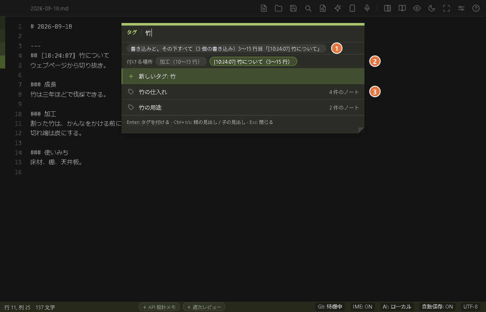
- 付ける対象の表示 選んだ見出しと、その下すべてです。下に続く書き込みの数と、その行の範囲、タグの行を入れる見出しが出ます。下に何もない書き込みでは、最初の図のように「書き込み 9〜13 行目」と出ます
- 付ける場所 その書き込み自身の見出しと、その上の見出しが、行の範囲つきで並びます。明るいのが選んだもので、ほかのものをクリックするか、Ctrl + ↑（上の見出し）・Ctrl + ↓（下へ戻る）で選べます。場所が 2 つ以上あるときだけ出ます。タグを外すときは、「外す場所」と出ます
- タグの一覧 打ったタグが「新しいタグ」として先頭に出て、その下に、それに合うノートのフォルダのタグが、使っているノートの数つきで並びます。Enter かクリックで、選んだタグが、選んだ見出しのすぐ下に入ります
たとえば、図のノートで、タグ「竹」を記事の見出しに付けると、次の形が
## [10:24:07] 竹について
ウェブページから切り抜き。
### 成長次のようになります（行は、記事の見出しのすぐ下に入ります）。
## [10:24:07] 竹について
<!-- tags: 竹 -->
ウェブページから切り抜き。
### 成長「成長」「加工」「使いみち」の 3 つの節にもタグが付くので、「竹」で絞ると、記事の先頭の部分と 3 つの節のすべてが見つかります。「加工」だけに付けたいときは、「付ける場所」を「加工」のままにします。行は ### 加工 の下に入り、ほかには効きません。
制限・できないこと・詳しい仕様
- どこまでが「この書き込み」か: 検索が 1 つと数える単位と同じで、見出し（
#〜###）か---の区切り線から、次の見出しか区切り線の前までです。最初の見出しや区切り線より上の行にカーソルがあるときと、見出しも区切り線もないノートでは、「この書き込みにタグを付ける」でも、ノート全体への付与になります（パネルの上に「ノート全体」と出ます）。 - 付ける場所の初めの選び方: ふだんは、カーソルのある書き込みです。複数の行を選んでいるときは、選択の最初の行と最後の行が、どちらもその下にある、いちばん近い見出しです（1 つの書き込みの中の選択は、その書き込みのままです。別々の記事にまたがる選択は、最初の行の書き込みになります）。「付ける場所」の行には、その書き込み自身の見出しと、その上の見出しが並び、選んだ見出しのすぐ下にタグの行が入って、その下すべてに効きます。
- フロントマターのあるノート: 先頭が
---で始まる YAML フロントマターのノートには、ノート全体のタグを付けられません。タグの行をフロントマターの上には置けず、下に置くと、ノート全体ではなく、その次の書き込みのタグになってしまうためです。そう伝えて、何も変えません。書き込みに付けるか、フロントマターにtags:を自分で書いてください。 - フロントマターのタグは外せません: フロントマターの
tags:にだけあるタグは、コマンドでは外せません（syki::sok はフロントマターを書き換えません）。手で消してください。 - もう一方の範囲にあるタグ: 書き込みから外そうとしたタグが、実はノート全体に付いているとき（その逆も同じ）は、どちらに付いているかを伝えて、何も変えません。「タグを外す」の一覧で、付いているほうを選んでください。
- 上の見出しから届いているタグ: ある節が、上の見出しのタグを受け取っているだけのときは、その節そのものからは外せません。ステータスに、そのタグがどの見出しの下（何行目）に書かれているかが出ます（「そのタグは、この書き込みの上の見出し「…」（N 行目）から届いています。そちらから外してください。」）。「外す場所」でその見出しを選ぶか、一覧の「「…」（N 行目）から」と添えられたタグを選んで外すと、その見出しの下すべてから外れます。
- 選んだ語をタグにする: タグを付けるときに、1 行の中の 1 語（200 文字以内）を選んでおくと、その語が入力欄にはじめから入り、全体が選ばれます。先頭の
#、引用符、括弧、前後の句読点は取り除きます。2 語以上、複数行にまたがる選択、タグにできない語（64 文字を超える、-->を含む）は入れず、入力欄は空で始まります。タグを外すときは入りません。 - 数と長さ: 1 回に 8 個まで、1 個 64 文字までです。コメントが途中で終わってしまうので、
-->と<!--はタグに使えません。超えたときや使えないものを打ったときは、タグを一部だけ付けることはせず、一覧のところに理由が出て、Enter を押しても付きません。 - 書き直されるタグの行: タグを足すときは、その行にすでにあるタグも、正規化した形（先頭の
#なし、英字は小文字）で書き直されます。1 行は 32 個までで、いっぱいのときは、その下に新しい行を作ります。タグの行が複数あるときは、最初の 1 行に足します。 - 途中でノートが変わったとき: コマンドが答えを待っている間にノートを書き換えたときは、何も適用せず、「その間にノートが変わったため、タグは変えていません」と伝えます。もう一度お試しください。
- 一覧のタグ: ノートのフォルダのタグは、パネルを開いたときに 1 度だけ読みます。一覧は 8 行までで、あふれた分は「ほか N 個」と数だけ出ます（打つと絞り込めます）。
- Ctrl + / との関係: 行をコメントにするは、タグの行に触れません。コメントを外してタグが見えるようになることも、二重にコメントにすることもありません。タグの行だけを選んでいるときは何も変えず、「タグの行はそのままにします」と伝えます。ほかの行がまじっているときは、ほかの行だけが切り替わります（「複数行をまとめて 1 つのコメント」の設定では、タグの行を含む選択はコメントにしません）。
- ほかの使い方: コマンドラインの
syki scrap tag add|remove|showと、JSON-RPC のscrap.tag_editでも、同じ規則でタグを付け外しできます。コマンドラインは、新しい本文を標準出力に出し、--writeを付けたときだけファイルを書き換えます。--lineには、その節のどの行を渡してもよく、貼った記事の全体に付けるときは、記事の先頭の見出しの行を渡します。scrap.tag_editは計算だけで、ファイルにも画面にも触れません（開いているノートには、buffer.get→scrap.tag_edit（return_textつき）→buffer.set（expected_hashつき）の順に使います。buffer.replace_allは検索と置換なので使えません）。くわしくは、Headless CLI と JSON-RPC をご覧ください。AI にタグを付けさせるコマンドは、まだありません。 - できないこと: AI によるタグの提案、たくさんのノートへのまとめ付け、フロントマターへの書き込み、タグを別の見出しへ付け替えること（外してから付け直します）は、できません。
- 確かめていないこと: macOS の実機（コードは Windows と同じです）と、スクリーンリーダーでの操作は、まだ確かめていません。Mac では Ctrl + ↑ が Mission Control のショートカットなので、「付ける場所」の見出しはクリックで選んでください。
意味検索（試験的機能・既定はオフ）
オンにする（最初の1回だけ）
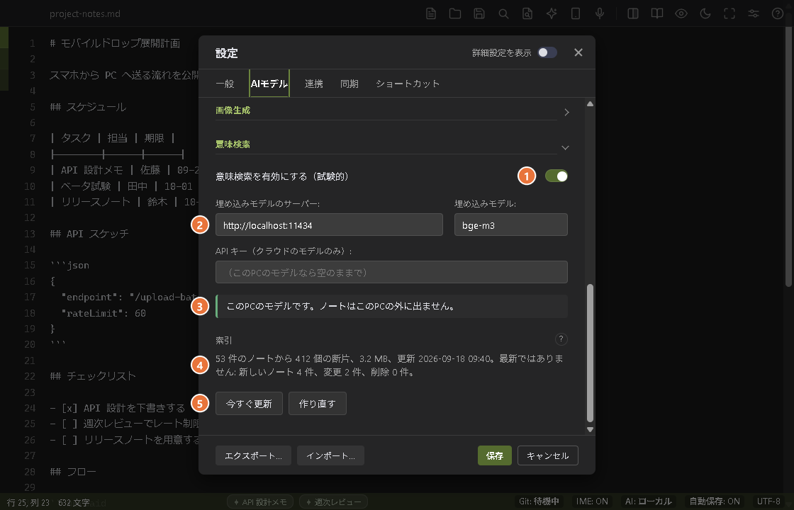
- スイッチ 意味検索を有効にします。いつもの、このPCのモデル（Ollama の
bge-m3）が、入力されます - 埋め込みモデル サーバーと、モデルの名前です。クラウドのモデルは、API キーも要ります
- ノートの送り先 このPC（緑）か、クラウドのホスト（黄色）です。クラウドのときは、出てくるチェックで許可します
- 索引の状態 何件のノートが入っていて、どれだけ遅れているかです
- 今すぐ更新 索引を作る、または最新にします。「作り直す」は、最初から作り直します
- モデルを用意するOllama なら、
ollama pull bge-m3を実行します。このPCのモデルが標準で、クラウドの埋め込みモデルも使えます（下の「制限と詳細」） - 設定でオンにする設定（Ctrl + ,、macOS は Cmd + ,）の「AIモデル」タブを開き、最後の「意味検索」を開いて（「詳細設定を表示」をオンにすると、すべての節が開きます）、スイッチをオンにします
- 「今すぐ更新」を押すノートの文章を埋め込みモデルに送って、索引を作ります。進み具合が出て、「中止」で止められます（ここまでの分は残ります）。次からの更新は、新しいノートと変わったノートだけを読みます。「保存」の前でも動きます
- 「保存」を押すノート検索に「完全一致 | 意味」の切り替えが出ます。再起動は要りません
同じ索引は、コマンドの syki scrap index でも作れます。config.json に手で書くこともできます（syki::sok を終了してから）。
"semantic": {
"enabled": true,
"model": {"baseUrl": "http://localhost:11434", "model": "bge-m3"}
}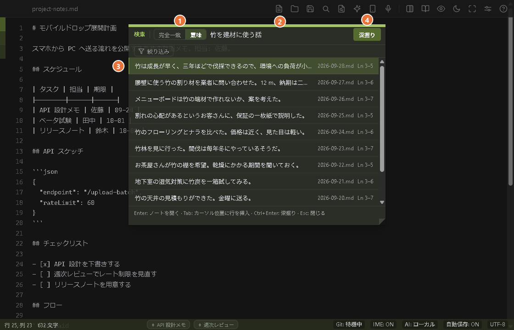
- 完全一致 | 意味 の切り替え 「意味」は、言葉が違っても、意味の近いノートを探します
- 検索ボックス 探しているものを、自分の言葉で書きます
- 意味の近いノート 近い順に並びます（点数は表示しません）。Enter で、そのファイルを、その行で開きます
- 深掘り これらのノートの抜粋を AI に送り、出典リンクつきの答えを、新しいノートに書き出します（Ctrl + Enter）。送る前に、必ず確認が出ます
- 検索を開くCtrl + Shift + F（macOS: Cmd + Shift + F）。意味検索をオンにしているときだけ、「完全一致 | 意味」の切り替えが出ます
- 「意味」を選ぶ切り替えの「意味」を押します。入力欄に、「探しているものを、自分の言葉で書いてください...」と出ます
- 探しているものを、自分の言葉で書くノートに書いた言葉と違っていて構いません。入力のあと、少し間を置いて、検索が走ります
- Enter でノートを開く選んだノートが、そのファイルのその行で開きます（クリックでも同じです）。Tab を押すと、完全一致のときと同じように、その行がノートのカーソル位置に入ります
制限・詳しい仕様
- 件数と点数: 表示は10件です。「さらに表示」を押すと、30件を探します。点数は表示しません（点数はモデルによって幅が違い、パーセントではないためです）。
- 表示しないノート: 最良のものより、一致の度合いがかなり低いノートは、表示から除きます。その件数は、一覧に一言（「一致の度合いがかなり低い n 件は表示していません。」）出ます。
- 索引にまだないノート: 最後に
syki scrap indexを実行したあとに書いたノートは、もう一度実行するまで、単語で探します（「n 件のノートは索引にまだありません（単語で探しました）。」と出ます）。意味検索そのものが使えないとき（索引が空、別のモデルで作った索引、モデルに届かない）も、単語でノートを選び、その旨が一言出ます。 - このパソコンにないモデル: クラウドなどのモデルは、そのホストを許可するまで、何も送りません（設定で、モデルの下に出るチェックで許可します。許可は
config.jsonのsemantic.privacy.cloudConsentに残ります）。許可するまで、「今すぐ更新」も押せません。 - 索引: このパソコンの中の、スクラップのフォルダの外に作られ、Git では同期されません。いつ消しても構いません（
syki scrap indexで作り直せます）。.syki-ignore（または.md-memo-ignore）に書いたファイル、隠しフォルダ、AI の結果ブロックは、送りません。設定のパッケージ（エクスポート / インポート）に、semanticは含まれません。 - オンにしないとき: ノート検索は、これまでどおりのパネルです。意味検索のために、起動時に何かをすることもありません。
- ほかの使い方: 同じ検索は、
syki scrap search --semanticと、JSON-RPC のscrap.searchでも使えます（Headless CLI、JSON-RPC）。 - macOS: Windows と同じコードなので、動く見込みですが、実際の Mac では、まだ確かめていません。
深掘り
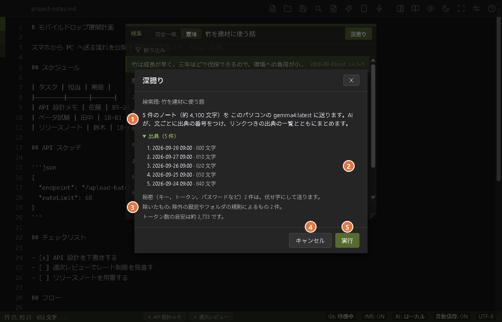
- 送る内容と送り先 何件のノートの、約何文字を送るか。モデルは、このパソコンにあるのか、クラウドにあるのか
- 送るノートの一覧 抜粋を送るノートと、それぞれの文字数です。ふだんは折りたたまれていて、「出典」を押すと開きます
- 除いたものと伏せ字 除いたものと、送る前に伏せ字にする秘密（キー、トークン、パスワード）の件数です
- キャンセル 何も送りません
- 実行 抜粋を送り、答えを新しいノートに開きます
- 意味モードで探すCtrl + Shift + F で「意味」を選び、探しているものを書いて、ノートの一覧を出します
- 「深掘り」を押す右上の「深掘り」ボタン、または、一覧が出ているときの Ctrl + Enter（macOS: Cmd + Enter）です。ヒットした各ノートの前後の文章を抜き出して、確認の画面を出します。ここまでは、何も送りません
- 確認の画面を読む何件のノートの、約何文字を、どのモデル（このパソコンか、クラウドか）に送るか、何を除いたか、何件の秘密を伏せ字にするかが出ます。まだ許可していないクラウドのホストのときは、許可を尋ねる文も出ます
- 「実行」を押す送ってよければ「実行」です（許可が要るときは「許可して実行」）。やめるときは「キャンセル」で、何も送りません
- 答えを読む答えが、新しい未保存のタブに出ます。保存するか、捨てるかは、あなたが決めます
答えは、どんなノートか
新しい未保存のタブ（名前は「深掘り」と質問）に、次のものが、上から順に入ります。スクラップのフォルダには、何も書きません。
- 質問: 「深掘り: 質問」の見出しです。
- 答え: 出典の番号（[1]、[2]）がついていて、引用した原文の数行が並びます。その出典に見つからない引用には、「(未検証)」が付きます。
- 出典: 番号つきの一覧で、各ノートへのリンクと抜粋の行が並び、答えで使われなかった出典には、その旨が付きます。Ctrl（macOS: Cmd）+ クリックで、そのノートを開きます。リンクで開くのはファイルで、行は、リンクの横に書かれています。
- 末尾: 使ったモデル、作成した時刻、意味検索と単語の検索のどちらでノートを見つけたかが入ります。
制限・詳しい仕様（送るもの・送り先・時間）
- 送る前: 「実行」を押すまで、何も送りません。準備した抜粋の有効期限は15分です。切れたあとで「実行」を押すと、「準備した抜粋の有効期限が切れました。もう一度準備します...」と出て、準備し直します。
- 送らないもの:
.syki-ignore（または.md-memo-ignore）に書いたファイルと、フォルダの規則で除くもの、AI の結果ブロック、読めないファイル、大きさの上限を超える分、以前の深掘りのノート、隠しフォルダは、送りません。抜粋の中のキー、トークン、パスワードは、伏せ字にしてから送ります。 - 絞り込みをしているとき: ノート検索で絞り込み（期間・タグ）をしているときは、同じ絞り込みで抜粋を集めます。短い抜粋に足す隣のノートの文章も、絞り込みに合うものだけで、絞り込みの外にあるものは、送る対象になりません。
- 送り先: 設定 → AIモデル → テキスト のモデルです（Base URL とモデル名の、両方が必要です）。設定していないと、「AIモデルがまだ設定されていません。」と出て、「設定する」ボタンが付きます。
- このパソコンと、そのほか: このパソコンの中（
127.0.0.1、localhost、::1）にあるモデルだけが、ローカルです。同じネットワーク内のほかのマシンを含め、それ以外のホストへは、初めて送るときに許可を求めます。「許可して実行」を選ぶと、そのホストを記憶します（「AIに質問」のバーと同じgeneral.cloudConsentの一覧です）。 - 意味検索が使えないとき: 単語でノートを選び、確認の画面に、そう書かれます。
- 時間と取り消し: 答えが出るまで、最長で9分（540秒）かかります。実行中の深掘りは、タスクパネル（Alt + T）に出て、そこから取り消せます（実行中の様子とタスクパネル）。
- AI に、リンクは書かせません: AI が作ったリンクは取り除かれ、出典のリンクは syki::sok が付けます。答えの [n] は、送った出典の番号だけが残ります。
- コマンドや JSON-RPC から: 深掘りを実行するものはありません（ノートをモデルへ送るためです）。
deepsearch.planは、何も送らずに、どのノートを何文字使うかと送り先を答える下見です（絞り込みの指定はなく、フォルダ全体を対象にします）。ui.open_panelは、意味モードのノート検索を開くところまでで、「深掘り」は人が押します（JSON-RPC）。
Mobile Drop｜スマホから送る (Ctrl+Shift+U)
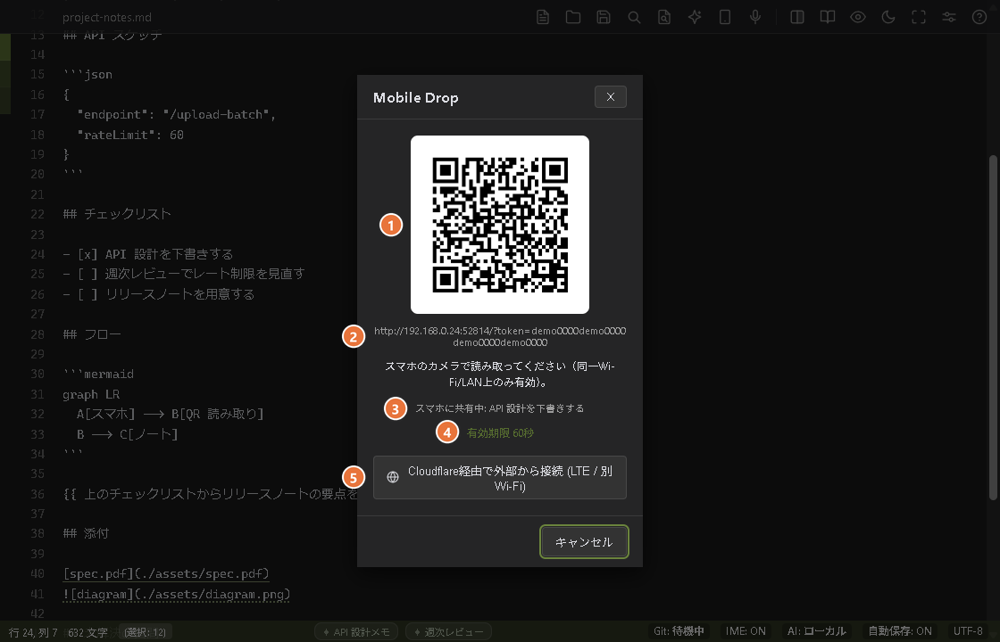
- QRコード スマホのカメラで読み取ります（スマホとPCは同じWi-Fi / LAN に）
- アドレス QRコードの先にある、使い捨てのアドレスです
- スマホに共有中 エディタで選択中のテキストが、スマホに表示されます（「PCからのテキスト」カード）
- カウントダウン 操作がないときのタイムアウトまでの時間です。0になるとダイアログが閉じ、アドレスは使えなくなります（スマホでの操作があると延びます）
- 外部接続への切り替え LTEや別のWi-Fiから使うための、Cloudflareトンネルへのスイッチです（任意）
- ダイアログを開くツールバーのスマホアイコン、Ctrl + Shift + U（macOS: Cmd + Shift + U）、またはコマンドパレットの「Mobile Drop」
- スマホのカメラでQRコードを読み取るスマホはPCと同じWi-Fi（同一LAN）に。コードの下にアドレスも文字で表示されるので、手入力もできます
- 送信トレイに追加する写真・ファイル（最大10件、合計60MBまで）、ボイスメモ、テキストを、好きな組み合わせで
- 「まとめてPCへ送信」を押す1つだけのボタンです。アップロードの進捗が表示されます
- メモに追記されるダイアログが閉じ、アクティブなメモの末尾に追記されます。見出しは項目ごとに
## Mobile Drop [14:20:05] — <ファイル名>
スマホに開くページ
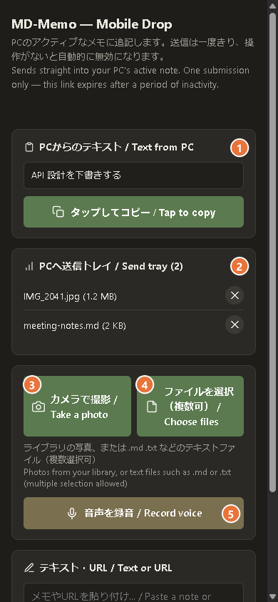
- PCからのテキスト PCで選択中のテキストです。下のボタンで、スマホにコピーできます
- PCへ送信トレイ ここまでに追加した項目（写真とメモのファイル）です。✕ で取り除きます
- カメラで撮影 スマホのカメラで写真を撮ります
- ファイルを選択（複数可） スマホから写真やテキストファイルを選びます
- 音声を録音 スマホの録音アプリが開きます。録音はトレイに追加され、PC側で文字起こしされます
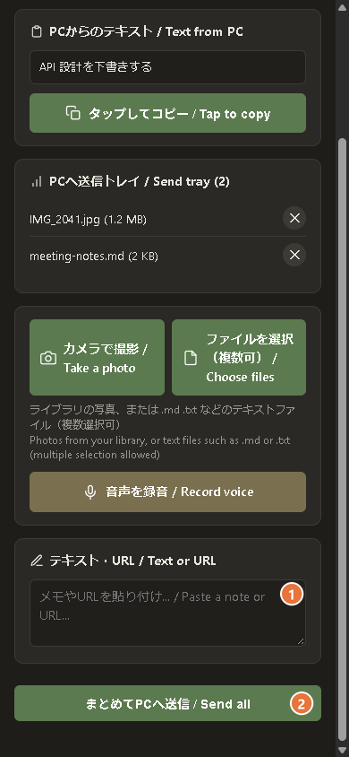
- テキスト・URL 欄 メモやリンクを貼り付けて、テキストとして送ります
- まとめてPCへ送信 トレイとテキストを、PCのアクティブなメモへ一度に送ります（1回のセッションで送れるのは1回です）
| スマホのボタン | メモに入る内容 |
|---|---|
| 写真・ファイル | 写真はビジョンモデルでMarkdownに文字起こしされます。.md と .txt はそのまま、.html・.js・.json・.py などのコードや設定ファイルはコードブロックで囲んで追記します。Shift_JIS のテキストは自動で変換します。 |
| ボイスメモ | 音声入力と同じ方法で文字起こしされ、テキストとして追記されます。 |
| テキスト・URL | 入力・貼り付けた文字をそのまま追記します。URLだけの場合はMarkdownリンクになります。 |
写真とボイスメモの行き先
- 写真: Ctrl + V の画像OCRと同じビジョンモデル（設定 → AIモデル → 画像解析）が、Markdownに文字起こしします。写真そのものは保存されません
- ボイスメモ: 音声入力と同じ方法（同じGeminiモデル）で文字起こしされ、テキストとして追記されます
- ローカル（OllamaやLM Studio）のビジョンモデルなら、キーなしでもOCRされます
- キーがない・モデルが非対応・文字起こしが空・HTTPエラー・タイムアウトのどれでも、写真とボイスメモは失われません
- Ctrl + Shift + V で画像を貼ったときと同じように
./assets/に保存され、リンクと理由の1行が入ります - 何件そうなったかは、トーストで知らせます
制限・詳しい仕様（保存されるときの行と保存先）
保存されるときにノートへ入る行は、状況によって次の4通りです。この行は、UIの言語にかかわらず日本語です。
| 状況 | 写真 | ボイスメモ |
|---|---|---|
| 何も設定されていない |  と > 画像OCRをスキップし、画像として保存しました: <エラー> (設定 → AIモデル → 画像解析) |
[name](./assets/...) と > 文字起こしをスキップし、音声として保存しました: <エラー> (設定 → AIモデル → 音声入力) |
| そのほかの失敗 | > 画像OCRに失敗したため、画像として保存しました: <エラー> |
> 文字起こしに失敗したため、音声として保存しました: <エラー> |
- 保存先:
./assets/YYYY-MM-DD-HHmmss.<拡張子>です。メモの隣、なければワークスペースフォルダ、それもなければアプリのデータフォルダ（この場合はfile://リンク）に保存されます。名前が重複すると-2、-3が付きます。 - 保存にも失敗したとき: assets への保存まで失敗した場合だけ、その項目の見出しに続けて
[Mobile Drop: <ファイル名> の処理に失敗しました: <エラー>]が追記されます。残りの項目は問題なく届きます。
制限・詳しい仕様（送れるものと上限）
- 写真・ファイルは最大10件、合計60MBまでです。
- 1件あたりの上限は、画像20MB、音声25MB、テキストファイル2MBです。それ以外のバイナリは受け付けません。
制限・詳しい仕様（スマホのページと「PCからのテキスト」）
- ページの並び: 上から順に、「PCからのテキスト」カード、「PCへ送信トレイ」（追加した項目ごとに名前・サイズ・削除用の
✕が表示されます）、カメラ／ファイル選択（複数可）／ボイス録音、テキスト入力欄です。送信ボタンは1つだけです。 - 「PCからのテキスト」: PCで選択中のテキスト（ダイアログを開いた時点で選択がなければ、クリップボードのテキスト）が、ワンタップコピー付きで表示されます。2秒ごとに更新され、最大64KBまで表示します。
- PC側の表示: ダイアログには「スマホに共有中: ...」として、80文字に切り詰めて表示されます。
つなぎ方を選ぶ
- スマホとPCが同じネットワークにいる必要があります
- 通信は、そのネットワークの外に出ません
- ボイスメモは、スマホ本体の録音アプリが開きます
- 位置情報は、要求も添付もしません
- ダイアログの「Cloudflare経由で外部から接続」を押します
- アカウント不要の Cloudflare Quick Tunnel を開き、QRコードが一時的な
https://…trycloudflare.comのアドレスに切り替わります - ボイスメモは、ページ内でそのまま録音できます（HTTPS）
- 位置情報は、任意で1回だけ添付できます
- 送信内容は Cloudflare のサーバーを経由します
制限・詳しい仕様（Cloudflareトンネル）
cloudflaredが必要です。syki::sokが自動でダウンロード・インストールすることはありません。- 未導入の場合は、ダイアログにインストールコマンド（Windows:
winget install --id Cloudflare.cloudflared -e、macOS:brew install cloudflared）と「コピー」ボタンが表示されます。実行してから、もう一度ボタンを押してください。 - トンネルを使っている間、送信内容は Cloudflare のサーバーを経由します。
- 90秒について: トンネルの90秒は、操作がない状態が続いたときのタイムアウトです。スマホでの操作があるたびに延び直します。「発行から90秒だけ有効」という固定の期限ではありません。
制限・詳しい仕様（安全性と制限）
- ダイアログを開いている間だけ動きます。開くとPC内で小さなサーバーが起動し、1回送信されたとき、60秒間操作がなかったとき、ダイアログを閉じる／キャンセルしたときに停止します。スマホでページを開くことや、スマホ側での作業（ファイル追加・録音・入力）はすべて操作に数えられ、このタイマーをリセットします。そのため、大きめのバッチを組んでいても、60秒のアイドルタイムアウトにはかかりません。
- 1つのQRコードで送れるのは1回だけです。続けて送るときは、ダイアログを開き直してください。使い捨てトークンはリクエスト本体を読み込む前にチェックされます。
- コードを持つ人だけが送れます。アドレスにはランダムな使い捨てトークンが含まれ、トークンのないアクセスは、中身を読み込む前に拒否されます。
- 写真とクラウドモデル。ビジョンモデルがGeminiなどのクラウドサービスの場合、写真はそのプロバイダーへ送られます（Ctrl + V で画像を貼り付けたときと同じです）。APIキーが未設定でも写真は失われず、画像として保存されます（上の「未設定、または失敗したとき」）。
- 位置情報は任意で、トンネル使用時のみです。Cloudflareトンネル経由（HTTPS）で接続しているときだけ、スマホは位置情報を1回だけ、1度限りの試行として添付できます。付与されるのは最初の項目の見出しだけで、
## Mobile Drop [14:20:05] — <ファイル名> (34.693, 135.502)のようになります。通常のLAN（HTTP）接続では、位置情報を要求することも添付することもありません。
制限・詳しい仕様（送信が途中で切れないための仕組み）
通常のLAN接続では、ボイスメモを録るとスマホ本体の録音アプリが開きます。その間もセッションが切れないよう、スマホのページは次のように動きます。
- カメラ、ファイル選択、録音アプリへ切り替える直前に、PCへ「セッションをあと120秒まで延ばしてほしい」と依頼します（PC側のセッションは、通常60秒操作がないと終わります。サーバーは、この依頼を最大180秒までに制限します）。
- ページに戻ってくると、PCへ生存確認を送ります。
- 選んだファイルは、その場でメモリにコピーします（録音アプリがまだ書き込み中だったり、アクセス権を取り消したりすることがあるためです）。
- ファイルを読み込んでいる間は、送信ボタンが待機します。
- 送信に失敗したときは、PC側のセッションが生きているかを確認します。生きていれば、自動で1回だけ再送し、それでも失敗したら「通信エラー。もう一度お試しください」と表示します。
- PC側のセッションが終わっていれば、「PCとの接続が切れました。PCでMobile Dropを開き直し、QRコードを読み取り直してください」と表示します。
- 録音アプリを開かず、ページ内で直接録音するには、HTTPSのCloudflareトンネルが必要です。
スマホでページが開かないとき
- 両方が同じWi-Fiにつながっているか確認してください。ゲスト用ネットワークや一部のルーターは、機器どうしの通信を遮断します（AP分離）。PCまたはスマホのVPNが邪魔をすることもあります。
- Windowsでは、初回にsyki::sokのファイアウォールの確認が出ることがあります。プライベートネットワークで許可してください。
- QRコードのアドレスは、既定の通信経路（デフォルトルート）を持つネットワークアダプタのものです（WSLやDockerなどの仮想アダプタは除外します）。スマホがそのネットワークにいない場合は、上のCloudflare経由の接続を使ってください。
ツールバーのアイコンは、設定 → 一般 → ツールバーと右クリックメニューで、隠したり並べ替えたりできます。ショートカットとコマンドパレットからは、どちらの場合も開けます。
Discord連携｜スマホから送る（閉じていてもOK）
初回セットアップ（1回だけ）
- Botを作成するdiscord.com/developers/applications を開き「New Application」で名前を付けて作成。「Bot」タブの「Reset Token」でトークンを取得します（表示されるのはこの1回だけなので、控えておいてください）
- Botを自分のサーバーに招待する「Installation」タブで「ギルドのインストール」にチェックを入れます（Botをサーバーに参加させるDMには必須です）。「OAuth2」タブに移り、スコープで
bot、Botの権限で「メッセージを送る」にチェック。生成されたURLのすぐ上の「連携タイプ」を「ギルドのインストール」に切り替えてからURLを開き、自分のサーバー（この用途だけの非公開サーバーで十分です）を選んでAuthorizeします - 自分のユーザーIDを控えるDiscordの ユーザー設定 → 詳細設定 で「デベロッパーモード」を有効化し、自分の名前を右クリック →「ユーザーIDをコピー」。18桁前後の数字が控えられます（表示名やユーザー名ではありません）
- syki::sokに設定する設定 → 同期 → 「Discordからの入力」で、Botトークンと(3)のユーザーIDを貼り付け、チェックを入れて「接続テスト」。成功したら「保存」
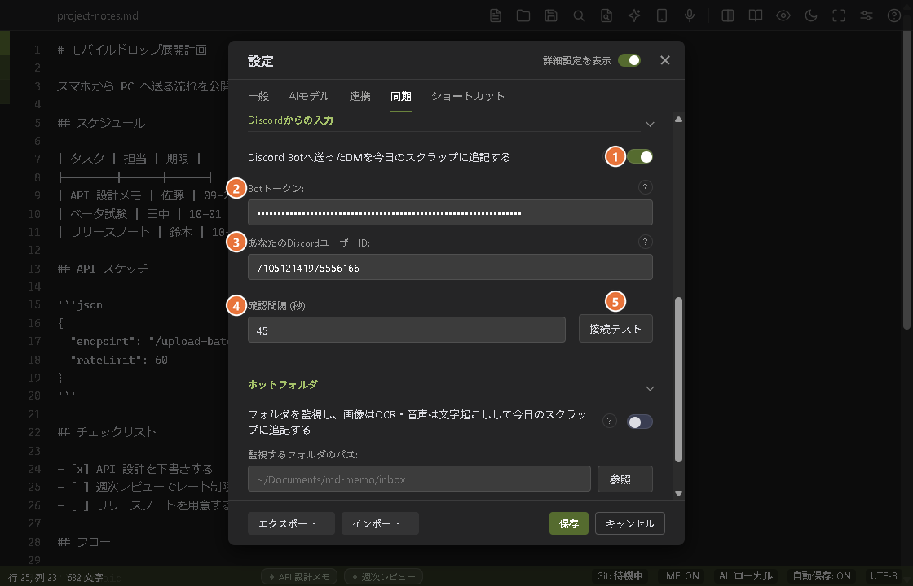
- 有効化 チェックを入れるまでは何も起きません
- Botトークン Developer Portal の「Bot」タブで取得したものを貼り付けます
- DiscordユーザーID 数字だけのID（デベロッパーモードで「ユーザーIDをコピー」）
- 確認間隔 起動中にDiscordを確認する頻度（既定45秒、15〜600秒）
- 接続テスト 保存前にBotトークンとユーザーIDが正しいかを確認します
- ユーザー名を貼ってしまう — 必要なのは画面に出ている名前ではなく、数字だけのユーザーID。接続テストで「"..." はユーザー名のようです」と出たら、これが原因です
- 招待の「連携タイプ」が「ユーザーインストール」のまま — Botをサーバーに参加させて個別DMを許可するには「ギルドのインストール」が必要です。招待URLに
integration_type=1が入っていると、認証時に「提供されているスコープが無効です」と出て失敗します - サーバーのチャンネルでBotに
@メンションしている — syki::sokが確認しているのはBotとの個別DMだけです。Botのプロフィールから「メッセージを送る」を選び、専用のDM画面が開いたことを確認してから送ってください
使い方
- Botとの個別DMを開くサーバーのメンバー一覧やメンションからBotの名前をクリックし、プロフィールカードの「メッセージを送る」を選びます
- テキスト・写真・音声メモなどを送るDiscordアプリの通常の送信方法（キーボード入力、カメラロール添付、音声メッセージ）がそのまま使えます
- syki::sok側で反映を待つ起動していれば確認間隔以内（既定45秒）、閉じていた場合は次に開いたときに、送った時点からの分がまとめて届きます
| Discordで送ったもの | スクラップに入る内容 |
|---|---|
| 写真 | Mobile Dropの写真と同じビジョンモデルでMarkdownに文字起こしされます。OCRが未設定・失敗のときは、assets/ に保存されリンクが入ります。 |
| 音声メッセージ・音声ファイル | 設定 → AIモデル の「音声認識エンジン(フォルダ監視・Discord)」で選んだ方法で文字起こしされます（既定は 音声入力と同じ Gemini です。Windows (x64) では、このPC内で動く Whisper も選べます。ホットフォルダを参照）。失敗したときは音声ファイルとして assets/ に保存されます。 |
| テキスト・URL | そのまま追記されます。URLだけの場合はMarkdownリンクになります。 |
それぞれ、その日のスクラップ（scraps/YYYY-MM-DD.md）の末尾に ## Discord [14:20:05] の見出しで追記されます。写真と文章を同時に送ると、2つの見出しに分かれます。
詳しい仕様（許可される送信者・確認の仕組み・失敗したとき）
- 送信者は1人だけ 設定した「あなたのDiscordユーザーID」と一致するメッセージだけを取り込みます。それ以外のアカウントからBotにメッセージが届いても、無視されます。
- 初めて有効化したとき 過去のDM履歴は取り込まれません（その時点を基準に、以降のメッセージだけを見ます）。
- 閉じている間に送った分 Discord側にメッセージが残っているので、次にsyki::sokを起動したときに、基準時点からの分をまとめて取り込みます。失われません。
- ネットワーク断・Botトークンの入れ替え 接続に失敗しても自動で再試行を続けます（少しずつ間隔を空けながら）。設定でトークンを直して保存すれば、その場で新しい設定が使われます。
- Git同期との関係 スクラップフォルダでGit同期が有効なら、Discordからの追記も自動でコミット・プッシュされます。処理できず
assets/に保存された写真・音声ファイルも同じフォルダに入るため、一緒に同期されます。
コマンドパレット (Ctrl+Shift+P)
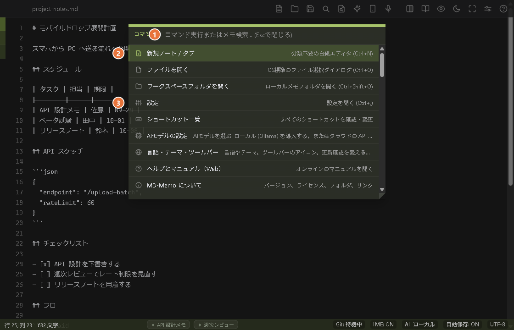
- 入力欄 打つと、コマンドやノートが絞り込まれます
- ハイライト中のコマンド Enter で実行します
- 説明とショートカット 各コマンドに、1行の説明と、割り当てられたキーが表示されます（たとえば「AIに質問」には Ctrl+L）
- パレットを開くCtrl + Shift + P（macOS: Cmd + Shift + P）
- 入力して絞り込むコマンド名やノートのタイトルの一部を打ちます（部分一致）
- 選んで実行するコマンドは実行され、ノートは開きます
制限・詳しい仕様
- 検索の対象は、21 個のコマンドと、開いているワークスペースフォルダのノートです。これに加えて、Windows では「クイックキャプチャ」（クイックキャプチャを開きます）が、ホットフォルダをオンにしているときは「受信フォルダを開く」（Windows と macOS）が、コマンドに加わります。
- 「AIに質問」「コマンドバー」も、パレットから開けます。「コマンドバー: コマンドを実行」「コマンドバー: AIにコマンドを書かせる」は、モードを指定して開く項目で、既定のキーはありません。
- 「タスクのひな形を挿入」（説明: Ctrl+Enter で実行できる LLM・エージェント・コマンドのひな形）は、ひな形の一覧を、カーソルの位置に開きます。同じ一覧は、
{{を打っても出ます。詳しくは 自動セレクター の「ひな形」をご覧ください。 - 「タグ」と打つと、「この書き込みにタグを付ける」「ノート全体にタグを付ける」「タグを外す」の 3 つが出ます。どれも、作業しているペインのノートに働き、専用のショートカットはありません。詳しくはタグを付ける・外すをご覧ください。
- 「教訓のファイルを開く」は、エージェントごとに残した教訓のファイルを、ふつうのタブとして開きます（ファイルが 1 つならそのまま開き、複数あれば選ぶ一覧が出ます）。
- 「syki::sok について」は、バージョン、ライセンス、フォルダ、リンクを表示します（syki::sok についてを参照）。「ヘルプとマニュアル（Web）」は、オンラインマニュアルをすぐに開きます。
- 照合は単純な部分一致です。曖昧検索（ファジー検索）ではありません。
- 2つのペインを開いているときは、作業していたペイン（左か右）にコマンドが働きます。パレットを閉じると、フォーカスもそのペインに戻ります。
- 設定項目は検索できません。設定画面は Ctrl + ,（macOS: Cmd + ,）で開きます。
syki::sok について・更新の確認・文章の送り先
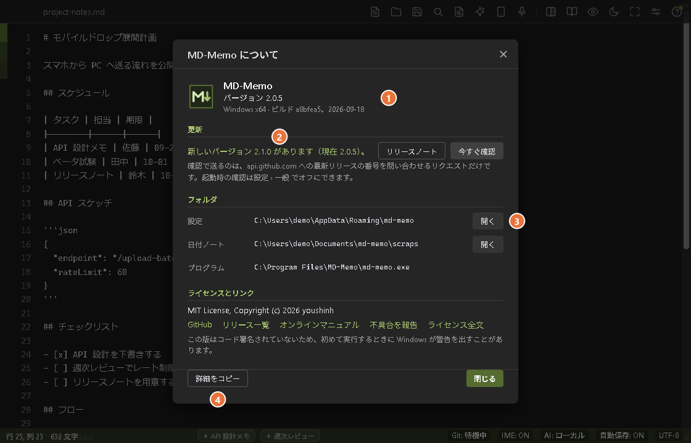
- バージョン バージョン、OS、どのビルドから作られたか
- 更新 新しいリリースがあるかどうか。「今すぐ確認」は、起動時の設定にかかわらず、すぐに GitHub に問い合わせます
- フォルダ 設定と日付ノートの保存先。「開く」でファイルマネージャーに表示します
- 詳細をコピー バージョン、OS、Web ビュー、フォルダを、不具合の報告用にクリップボードへコピーします
- 開くヘルプ（?）ボタンを押してsyki::sok についてを選ぶか、コマンドパレットを開いて「について」と入力します。インストール直後はヘルプボタンがツールバーにありません。パレットからは、いつでも開けます
- 新しいバージョンを確認する「今すぐ確認」を押します。新しいリリースがあれば、「リリースノート」でそのページが開きます
- 不具合を報告する「詳細をコピー」を押し、報告の文面に貼り付けます。バージョン、OS、Web ビュー、フォルダ名が入ります（文面は常に英語です）。ノートの本文やキーは入りません。フォルダ名には、Windows のユーザー名が含まれることがあります
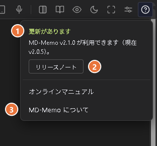
- 通知 新しいバージョンと、今お使いのバージョン
- リリースノート そのバージョンのページを開きます
- syki::sok について 上のダイアログを開きます
制限・詳しい仕様
- ヘルプメニュー: オンラインマニュアルと「syki::sok について」です。新しいバージョンが分かっているときは、先頭にバージョンを書いた通知と「リリースノート」ボタンが出ます。メニューを開くと、そのバージョンについては、ヘルプボタンの小さな点も消えます。パレットの「ヘルプとマニュアル（Web）」は、すぐにマニュアルを開きます。
- ツールバーにヘルプボタンがないとき: インストール直後は隠れているため（「最初は短いツールバー」を参照）、点を出す場所がありません。その場合は、新しいバージョンを見つけたときに一度だけメッセージを出します。パレットの「syki::sok について」では、いつでもバージョンと「リリースノート」ボタンを見られます。
- 署名: このビルドの署名の状態を表示します。macOS 版は ad-hoc 署名で、Apple の公証（notarization）を受けていないため、初回は macOS の許可が必要です（「macOS での初回起動」を参照）。Windows 版はコード署名されていないため、初めて実行するときに Windows が警告を出すことがあります。
- ビルド: git のチェックアウトから作られたプログラムでは、コミットとビルド日も表示され、コピーする詳細にも入ります。
- フォルダを開く: まだ作られていないフォルダ（最初のノートを書く前の日付ノートのフォルダなど）は開けません。その場合は行の下にメッセージが出ます。
更新の確認
標準では、syki::sok は起動の約 2.5 秒後に、GitHub に新しいリリースがあるかを問い合わせます。api.github.com へ最新リリースの番号を尋ねる 1 回のリクエストだけで、ノートや設定の内容は一緒に送られません（GitHub 側には、ふつうのウェブサーバーと同じように、IP アドレスなどが見えます）。新しいバージョンがあると、ヘルプボタンに小さな点が出ます。
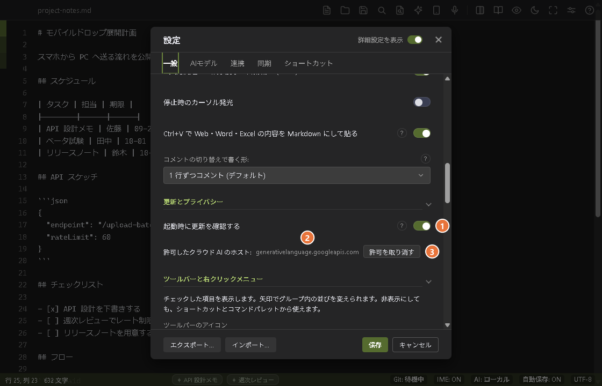
- 起動時に更新を確認する オフにすると、起動時には何も問い合わせません。「syki::sok について」の「今すぐ確認」は使えます
- 許可したホスト 「AIに質問」と書き換えのバーと、深掘りと、教訓が、文章を送ってよいクラウドのサービス（1 つ許可したあとにだけ表示されます）
- 許可を取り消す 一覧を空にします。保存を押すと反映されます
- オフにする: 設定 → 一般 →「更新とプライバシー」→「起動時に更新を確認する」。オフにすると、起動時には何も問い合わせません。「syki::sok について」の「今すぐ確認」は、押したときにいつでも使えます。
- 管理者向け: この設定は
config.jsonのgeneral.checkUpdatesです（Windows:%APPDATA%\syki-sok\、macOS:~/Library/Application Support/syki-sok/。正確なフォルダは「syki::sok について」に表示されます）。falseにすると起動時の確認をしません。キーがない場合や、ほかの値の場合はオンのままなので、古い版の設定ファイルは今までどおり動きます。{"general":{"checkUpdates":false}}だけのファイルで足ります。この設定は書き出すパッケージの「一般」に含まれるので、1 つのパッケージで多くの PC に配れます。設定ファイルがすでにある PC は、最初の短いツールバーやウェルカムノートについては「既存のインストール」として扱われます。
文章の送り先
- 文章の送り先 モデルと「（クラウド）」。ローカルのモデルなら「ローカルの Ollama（モデル名）」と出ます
- 質問 ホストごとに一度だけ出ます。答えるまでは何も送られず、ノートにも触れません
- 許可して送信 そのホストを記憶します。「キャンセル」は入力を残し、次回もまた尋ねます
AIに質問のバーと書き換えのバーは、入力欄の下の行に、文章の送り先を表示します。このパソコンや同じネットワーク内のモデルならローカルの Ollama（qwen2.5:latest）、オンラインのサービスならgemini-flash-lite-latest（クラウド）のように出ます。ポインターを重ねると、ホスト名が見えます。
- クラウドへの最初の送信: バーが「文章をインターネットを通して <ホスト> に送信します。許可しますか。」と尋ね、「許可して送信」と「キャンセル」が出ます。答えるまでは何も送られず、ノートにも触れません。「許可して送信」を選ぶとそのホストが記憶されます（
config.jsonのgeneral.cloudConsent）。「キャンセル」は入力を残したままで、次回もまた尋ねます。 - ローカルのモデルには尋ねません（Ollama、またはこのパソコンや同じネットワーク内のサーバー）。
- 答えはこの PC にだけ残ります: 許可したホストは、この PC の設定にだけ保存されます。書き出したパッケージには入らず、取り込んだパッケージで変わることもありません。
- 取り消す: 設定 → 一般 →「更新とプライバシー」に許可したホストが並び、「許可を取り消す」ボタンがあります。保存を押すと反映されます。
- 尋ねるのはこの 2 つのバーと、深掘りと、教訓の提案だけです。 ほかのモデルを使う機能（入力予測、校正、提案、タスク、音声入力、画像 OCR）は、設定 → AIモデルの各設定に従い、この確認は出ません。ステータスバーの AI の表示で、ローカルかクラウドかが分かります。タスクに書く指示を集めるだけのバー（普通の文章の行で Ctrl + Enter）は、送り先をタスクが決めるため、送り先を表示しません。
意味検索・深掘り・教訓・印刷では、文章はどこへ行くか
- 意味検索（試験的機能・既定はオフ）: オンにすると、ノートの文章を、設定した埋め込みモデルに送って、意味の索引を作ります（検索のときは、あなたが書いた質問も送ります）。設定例のように Ollama をこのパソコンで動かせば、文章はこのパソコンの外へ出ません。クラウドの埋め込みモデルには、そのホストを
config.jsonのsemantic.privacy.cloudConsentに書いて許可するまで、何も送りません。索引は、このパソコンの中（スクラップフォルダの外）にあり、Git では同期されません。 - 深掘り: 確認の画面で「実行」を押したあとに、見つかったノートの抜粋だけを、設定 → AIモデル → テキスト のモデルに送ります。上の2つのバーとは別に、深掘りは自分の確認画面で尋ねます。確認画面には、何件・約何文字を、どのモデル（このパソコンか、クラウドか）に送るかが出て、「実行」を押すまで何も送りません。ノート検索で絞り込みをしているときは、その絞り込みに合う抜粋だけを送り、絞り込みの外のノートの文章（隣にある文章も含みます）は送りません。許可が要らないのは、モデルがこのパソコンの中（
127.0.0.1・localhost・::1）にあるときだけです。同じネットワーク内のほかのマシンを含め、それ以外のホストには、初めて送るときに許可を求め、「許可して実行」で記憶します（「AIに質問」のバーと同じgeneral.cloudConsentの一覧です）。抜粋の中のキー・トークン・パスワードは、伏せ字にして送ります。 - 教訓: タスクパネルの「教訓」を押して「提案を作る」を押したあとに、その 1 回の実行の記録を切り詰めたもの（任せた指示の先頭、エージェントの出力の終わり、エラーの文、あなたの補足。合わせて最大 6,800 文字）を、設定 → AIモデル → テキスト のモデルに送ります。ノートのほかの部分は送りません。キー・トークン・パスワードは、伏せ字にして送ります。送る文字数と送り先は、押す前に画面に出ます。モデルがこのパソコンの中にあるなら、許可は要らず、外へは出ません。それ以外のホスト（同じネットワーク内のマシンを含む）へは、画面のチェックで許可するまで送らず（記憶先は、「AIに質問」のバー・深掘りと同じ
general.cloudConsentです）、送る直前に syki::sok 本体も許可をもう一度確かめます。保存した規則は、このパソコンの設定フォルダのファイルに残るだけで、スクラップフォルダの外にあるため、Git 同期にも、書き出した設定パッケージにも入りません。規則がモデルに渡るのは、そのエージェントを動かすときの指示の一部としてだけです。 - 印刷と PDF 保存: すべて、このPCの中で行います。ノートの文章を、どこかへ送ることはありません。
03 設定リファレンス (Settings Deep Dive)
- テーマ アクセントカラーの配色です
- 表示言語 日本語 / English を切り替えます
- 起動とウィンドウ 前回のタブと未保存メモの復元、分割表示での起動、トレイ常駐
- エディタと入力 自動保存、IME Guardian、AI校正、カーソルの発光。ツールバーと右クリックメニューは、このタブのさらに下で設定します（下の手順を参照）
基本表示と詳細表示: ほとんどの人が使わない項目（ゴーストテキスト、画像OCR、音声入力、画像生成、コマンド、自動セレクター、アクション候補、Discord、ホットフォルダ）は、最初は折りたたまれています。セクション名をクリックすると開きます。ダイアログ右上の 詳細設定を表示 にチェックを入れると、すべて開きます（選択は記憶されます）。項目の説明文は、項目の横にある小さな ? ボタンを押すと表示されます。何も削除していません。折りたたまれたセクションの値も、そのまま保存されます。
1. 一般タブ (General)
| 項目 | 既定値 | 説明 |
|---|---|---|
| 見た目の地 (Look) | 墨 (Ink) | 墨 (Ink: 暗いクラシック背景 #1e1e1e) と 紙 (Paper: 明るい和紙調 #fbfbf9) から選択します。OSのタイトルバーやウィンドウ全体のトーンも連動します。 |
| アクセントカラー | ダークオリーブ | Dark Olive, Classic Blue, Forest Teal, Charcoal Monochrome, 朱 (Vermilion)、またはカラーピッカー/HEX値によるカスタム色から選択。 |
| バーの透過 | すりガラス (Glass) | ヘッダーおよびステータスバーの透過表現を「うすい (Light)」「不透明 (Solid)」「すりガラス (Glass)」から選択。すりガラスは背景の文字を自然にぼかして見通せます。AIバーやコマンドバーなどの各ふせんパネルにも連動して適用されます。 |
| バーの自動非表示 | 有効 (ON) | 文字入力やスクロールを始めるとヘッダーとステータスバーが自動でフェードアウトし、思考を邪魔しません。マウスを動かすと瞬時に復帰します。 |
| 2画面の間の仕切り | ドット (Dots) | 左右分割表示時の仕切りデザインを「ドット（ノドの点描）」「影（シャドウのみ）」「細い線（1pxヘアライン）」から選択。キーボード（F6）でも仕切りを動かせます。 |
| エディタのフォント | 既定 (等幅) | お好みのフォント名（Cascadia Code, Consolas, Fira Code, Meiryo など）を直接指定できます。 |
| 図 (Mermaid) の配色 | ダーク | ダーク、ライト、グレー、グリーンから選択。後ろの3つは白い背景に図を描くので、暗いプレビューで図が見づらいときに役立ちます。プレビューの各図にあるボタンで、ダークとライトをすぐに切り替えられます。 |
| 表示言語 (Language) | 日本語 / English | UI全体の表示言語を切り替えます。 |
| 前回開いていたタブの復元 | 有効 (ON) | 再起動時に、未保存のバッファや開いていたタブを完璧に復元します。 |
| 起動時に分割エディタで表示 | 無効 (OFF) | 常に2ペイン状態で起動したい場合はチェックを入れます。 |
| トレイに常駐 | 有効 (ON)（Windows） | Windowsでは、閉じるボタンで終了せずトレイに潜み、Ctrl+Alt+M でミリ秒起動します。macOSにはトレイがなく、ウィンドウを閉じても常にDockに残ります。この項目はmacOSでは無効化され、「現在この OS では未対応のため、この設定は反映されません。」と表示されます。 |
| 起動時に更新を確認する | 有効 (ON) | 起動の約 2.5 秒後に、api.github.com へ最新リリースの番号を問い合わせ（ほかには何も送りません）、新しいものがあるとヘルプボタンに点を出します。オフにすると、起動時には何も問い合わせません。「syki::sok について」の「今すぐ確認」は、どちらでも使えます。保存先は general.checkUpdates です。syki::sok についてを参照。 |
| 許可したクラウド AI のホスト | なし | 「AIに質問」または書き換えのバー（や、深掘り、教訓の画面）がクラウドのホストについて尋ね、あなたが許可したあとにだけ表示されます。「許可を取り消す」は、保存を押すと一覧を空にします。保存先は、この PC の general.cloudConsent だけです（書き出しには入りません）。 |
| 1.5秒入力停止時に自動保存 | 有効 (ON) | 既存ファイルを開いて編集した際、タイピング停止から1.5秒で自動保存します。開いたとき（または最後に保存したとき）のあとで、ほかのプログラム（別のエディタ、Git の取り込み、同期ソフトなど）がそのファイルを変更していた場合は、何も書き込みません。タブに赤い「!」が付き、そのノートの自動保存は止まり、Ctrl + S で「別名で保存」「ファイルを読み込む（自分の内容は新しいタブに残ります）」「上書きする」を選べます。未保存の内容がないノートは、新しい内容がそのまま表示されます。改行が CRLF のファイルは、保存してもCRLFのままです。 |
| IME Guardian | システム言語が日本語のときだけ有効 (ON)（macOSでは既定で無効 (OFF)） | コードブロック内での全角英数誤爆を自動補正します。macOSでは入力ソースの自動切り替えにまだ対応していないため、既定でオフになり、設定画面にその旨の案内が表示されます。 |
| AI入力間違い・誤字脱字の自動補正 (Alt+C) | 有効 (ON) | Alt + C の校正コマンドのオン/オフを切り替えます。 |
| 停止時のカーソル発光 | 有効 (ON) | タイピングが止まった際、カーソル周辺に穏やかな光のアフォーダンスを表示します。 |
| Ctrl+V で Web・Word・Excel の内容を Markdown にして貼る | 有効 (ON) | 表・見出し・リスト・リンクなど、構造のあるHTMLだけを Markdown に変換します（コードとログはそのまま）。Ctrl + Shift + V は常に加工なしで貼ります。オフにすると、Ctrl + V がプレーンテキスト、Ctrl + Shift + V が変換になります。 |
| コメントの切り替えで書く形 | 1 行ずつコメント | Ctrl + / が書く形です。1 行ごとに <!-- --> を書くか、選択した行をまとめて 1 つのコメントにします。行をコメントにするを参照してください。 |
| ツールバーと右クリックメニュー | すべて表示 | ツールバーのアイコンと右クリックメニューの項目を、表示・非表示と並び順で整えられます。手順は下の「ツールバーと右クリックメニューを整える」を参照してください。 |
ツールバーと右クリックメニューを整える
- セクションを開く設定 → 一般 の「ツールバーと右クリックメニュー」の節を開きます（見出しをクリックします。ほかの節と同じ折りたたみです）
- 表示する項目を選ぶツールバーのアイコンと右クリックメニューの項目を、チェックで選びます。矢印でグループ内の並びを変えられます
- 変更はすぐ反映される「キャンセル」で元に戻ります。「初期設定に戻す」で、すべてのアイコンが元の並びで戻ります（インストール直後は短いツールバーなので、フルのツールバーにしたいときにも使えます）
- セクションの見出し クリックで開閉します（ほかの節と同じです）
- チェックボックス チェックで表示、外すと非表示です（設定アイコンだけは常に表示されます）
- 上へ・下への矢印 グループの中で、項目を動かします
- 編集コマンド 元に戻す・やり直し・切り取り・コピー・貼り付け・すべて選択
- 開いているメモ サブメニューを展開し、開いているすべてのタブを一覧表示。現在開いているタブ（チェック）や未保存（黒丸）が確認でき、1クリックで切り替え
- 移動 検索・置換・行へ移動・コマンドパレット・フォルダを開く
- AIとコマンドバー AIに質問・誤字・脱字の補正・コマンドバー・音声入力など
- 表示 プレビューの切り替えと、右に分割して開く（メニューをスクロールすると Zen モードと全画面表示もあります）。表示する項目は、設定で変えられます
- 設定アイコンは並べ替えだけできて、非表示にはできません（設定画面へ戻れるよう、常に表示されます）。
- 非表示にした項目も、ショートカットとコマンドパレットからは使えます。
設定画面の下にある「エクスポート...」「インポート...」は、設定・エージェント定義・スキルを 1 つのパッケージ（.mdmemopack）で持ち運ぶ機能です。詳しくは 6. 設定のエクスポート / インポート。
2. AIモデル タブ (AI Models)
- 音声モデル 文字起こしに使うモデルです
- API 形式 「自動」ならモデル名から選び、固定もできます
- 言語コード カンマ区切りで指定します。空欄なら自動判定です
- モード スマートは整形、逐語はそのまま書き起こします
- カスタム語彙 人名や専門用語を、1行に1語書きます
- 無音タイムアウト 何秒の無音で、録音を自動で止めるかを決めます
- 機能 → 使われるモデル設定: タブの先頭にあるカードで、機能ごとにどのモデル設定が使われるかが一覧できます。たとえば「書く」・チャット・AIに質問はテキストLLMを使い、入力予測や画像OCRはそれぞれ専用の設定を持ち、提案 (アクション)は連携タブで設定します。
- ローカルAI (Ollama): 状態バッジと、Ollama の「起動」「停止」ボタン、そして「Gemma 4 導入」ボタンがあります。「Gemma 4 導入」は、Ollama が未導入なら導入したうえで
gemma4:e2bモデルを取得します。 - 文章・コマンド生成: API Base URL、モデル名、API Key、システムプロンプトを設定できます。接続方式は URL から自動で判定され、URL の下に表示されます（Ollama / Gemini 互換 / OpenAI 互換）。
- 入力予測 (インライン補完): 専用の URL・モデル・キーを持ち、表示までの待機時間（既定500ms。設定画面では200〜2000ですが、実際の下限は300ms）と最大予測トークン数（既定30、10〜100）を調整できます。
- 画像解析 (OCR): Gemini Flash Lite や Qwen 2.5 VL などの画像モデルとキーを指定します。「画像ペースト(Ctrl+V)時に自動で画像マークダウン化 (Vision OCR) を実行」のスイッチもここにあります（既定でオン）。スイッチがオフのとき、またはAPIキーが未設定のときは、貼り付けた画像を assets に保存してリンクで貼ります（Ctrl+Shift+V と同じ）。
- 画像生成: 図を画像として書き出すときに使うモデル・アスペクト比・解像度を指定します。Gemini API Key の欄が空のときは、Vision のキー、次にテキストのキーの順に引き継がれます。
- 音声入力 (Voice input): 画像解析 (OCR)の設定のすぐ下にあります。使い方は 音声入力 を参照してください。設定項目は次の表のとおりです。
- 音声認識エンジン(フォルダ監視・Discord): 音声入力の設定の下にあります。「エンジン:」で、「Gemini(クラウド)」（既定）か「Whisper(このPC内・オフライン)」を選びます。選んだエンジンが効くのは、ホットフォルダと Discord連携 の文字起こしだけです。画面での音声入力とMobile Dropは、これまでどおり Gemini を使います。Whisper は Windows (x64) のみ で、macOS では「このPC内 Whisper は、現在 Windows (x64) のみ対応しています。」と表示されます。ダウンロードの手順とモデルの一覧は、ホットフォルダの Whisper の項目にあります。
音声入力 (Voice input) の設定項目
| 項目 | 設定ファイルのキー | 既定 | 説明 |
|---|---|---|---|
| 音声モデル | voice.model |
gemini-3.5-transcribe |
候補は gemini-3.5-transcribe、gemini-flash-lite-latest。gemini-3.5-transcribe-live（ストリーミング版）は録音した音声には使えず、指定するとエラーになります。 |
| API 形式 | voice.apiStyle |
自動 (auto) |
自動 / Interactions API / generateContent。自動は、モデル名に「transcribe」を含めば Interactions API、それ以外は generateContent を使います。 |
| 言語コード | voice.languageCodes |
空欄 | BCP-47 をカンマ区切りで指定します（例 ja-JP, en-US）。空欄なら自動判定で、言語の混在にも対応します。Interactions API のときだけ使われます。 |
| モード | voice.mode |
スマート (smart) |
スマート＝フィラーを除いて、読みやすく整形。逐語 (verbatim)＝そのまま書き起こし。Interactions API のときだけ使われます。 |
| カスタム語彙 | voice.customVocabulary |
空欄 | 1行に1語（人名・専門用語）。最大1000語ですが、100語程度までがいちばん効きます。Interactions API のときだけ使われます。 |
| 無音タイムアウト (秒) | voice.silence_timeout_sec |
5 | 1〜30。この秒数だけ無音が続くと、録音を自動で止めます。 |
| 文字起こしプロンプト | voice.prompt |
既定の指示文 | generateContent 形式のモデルでだけ使われます。 |
| APIキー / Base URL | voice.apiKey / voice.baseUrl |
空欄 | 空欄なら、画像解析 (OCR)のキーとBase URLを使います。設定画面に専用の入力欄はなく、設定ファイルに直接書いたときだけ別のキーを使えます。 |
音声認識エンジン (フォルダ監視・Discord) の設定項目
| 項目 | 設定ファイルのキー | 既定 | 説明 |
|---|---|---|---|
| エンジン | voice.engine |
Gemini(クラウド) (gemini) |
Gemini(クラウド) / Whisper(このPC内・オフライン) (whisper-local)。ホットフォルダと Discord 連携にだけ効きます。Whisper は Windows (x64) のみです。 |
| モデル | voice.whisper.model |
kotoba-whisper v2.0 量子化版 | 一覧のモデル、またはカスタム（custom-path / custom-url）です。 |
| モデルファイル(ggml 形式の .bin) | voice.whisper.modelPath |
空欄 | カスタム「PC上のモデルファイルを指定」のときの、ファイルの場所です。 |
| モデルの URL(https) / SHA-256(任意) | voice.whisper.customUrl / voice.whisper.customSha256 |
空欄 | カスタム「URL からダウンロード」のときの、モデルのアドレスと、照合用の SHA-256 です。 |
| 言語 | voice.whisper.language |
空欄（自動判定） | 例: ja、en。 |
| スレッド数 | voice.whisper.threads |
0（自動） | 認識に使うスレッドの数です。 |
| 初期プロンプト | voice.whisper.prompt |
空欄 | 固有名詞や専門用語を入れると、認識が安定します。 |
| Whisper が失敗したら Gemini で再試行する | voice.whisper.cloudFallback |
オフ | オンにすると、Whisper が失敗したとき、または準備できていないときに、Gemini で文字起こしし直します。音声が外部に送信されます。 |
3. 連携 タブ (Agent & CLI)
- agents.yaml を開く エージェントと記法を定義するファイルを開きます
- エージェント 既定のエージェントです。コマンドがインストールされているかを示すバッジが付きます
- エージェントタイムアウト 実行を打ち切るまでの秒数です
- 変更箇所のハイライト時間（Ghost Diff） ミリ秒で指定します
- ホバー覗き見（Hover Peek） タスクパネルに、エージェントの最新の出力を表示します
コマンド (実行する) — コマンドバーの設定です。
- CLIコマンド生成モデル: コマンドバーの AI モード（Ctrl+E → Tab）でコマンドを書かせるモデル名。空欄ならAIモデルタブの設定を引き継ぎます。
- コマンドの出力の入れ方: 既定は「選択範囲の下に挿入する」です。選んだテキストが残り、その最後の行の下に出力が入ります（コマンドを実行した元のテキストと同じ出力のときは、何も追加しません）。「選択範囲を置き換える」にすると、従来のフィルタのように、選んだテキストが出力に置き換わります。
- 実行結果を新しいタブで開く: オン（既定）のときは、上の入れ方でノートに入れたうえで、結果を新しいタブでも開きます（選択がなければ、新しいタブだけが開きます）。オフのときは新しいタブを開かず、選択がなければ出力をノートの末尾に加えます（「置き換える」なら、ノート全体が出力に置き換わります）。
- 標準入力パイプ最大サイズ: この欄を変えても効果はありません。
cat log | sykiで流し込める上限は、10MBに固定されています。巨大ファイルによるメモリ圧迫を防ぐための上限です。
エージェント (依頼する) — スロットから呼び出すエージェントの設定です。
- agents.yaml を開く: 記法・エージェント・レシピを定義する設定ファイルを開きます。まだ無ければコメント付きの雛形を生成します。雛形には、
@名前・aliases・snippetsと、エージェントの無効化（enabled/disabled_agents）の説明があります。 - エージェント: 記法で指定がない場合に使う既定のエージェント。自動セレクターが、行をエージェントへの依頼に書き換えるときの名前にも使われます。一覧は読み込まれた
agents.yamlの内容から作られます。各項目は「キー - 説明」の形で表示され（説明がなければキーだけ）、無効にしたエージェントは並びません。一覧の下に、無効にしたエージェントを示す一行（例:「agents.yaml で無効: agy, hermes」）が出ます。その下には、選択中のエージェントが権限の確認を飛ばす設定のときの警告と、置き換え前の組み込み定義のままのエージェントや、指示をシェルのコマンドとして実行してしまうエージェントを並べる「確認が必要なエージェント定義」（新しい定義をコピー / 内容が変わるまで表示しない）が表示されます（任せる を参照）。 - エージェントタイムアウト: 実行を打ち切るまでの秒数（既定: 180秒、10〜600秒）。
agents.yamlがすでにある場合（「agents.yaml を開く」で作られた場合も）は、ファイルの値が優先され、この欄の値は使われません。 - Ghost Diff のハイライト時間: 結果が差し込まれた直後に、エディタの左端へ琥珀色の線が表示される時間です（既定: 4000ms、1000〜10000）。この間と、その後の1秒間は Esc で取り消せます。設定画面では「変更箇所のハイライト時間 (ミリ秒)（Ghost Diff）」と表示されます。
- ホバー覗き見 (Hover Peek): タスクパネルでエージェントの最新出力行を表示します。
- agents.yaml の
aliases: エージェントごとに、{{ @cc 指示 }}のような短い名前（別名）を付けられます。書かなくても、claude-codeにはclaude・cc、agyにはantigravity・geminiが付きます。 - agents.yaml の
snippets: 自作のタスクやコマンドのひな形（id・label・kind・trigger・bodyなど）を書けます。{{のクイックセレクターと、コマンドパレットの「タスクのひな形を挿入」に並びます。どちらも書き換えたあとは、syki::sokを再起動すると新しい内容になります（コマンドバーの候補は、バーを開くたびに読み直します）。書き方は 自動セレクター の「ひな形」にあります。
自動セレクター (任せる) — 自動セレクターの設定です。エージェントの設定の下にあります。
- 自動セレクターのグループ エージェント (依頼する)の設定の下にあります
- Ctrl+Enter で内容から動作を自動判定する 既定はオンです。オフにすると、Ctrl+Enter はこれまで通り
{{ }}スロットの実行だけを行います - 自動判定したエージェント／コマンドは実行前に確認する 既定はオンです。行を書き換えたところで止まります
- Ctrl+Enter で内容から動作を自動判定する（AIに質問 / エージェントに任せる / コマンド実行）: 既定はオンです。オフにしても、手書きの
[[ @llm ]]・[[ $ ]]・{{ @名前 }}は、Ctrl+Enter で実行できます（判定をやめるだけです）。 - 自動判定したエージェント／コマンドは実行前に確認する: 既定はオンです。行を書き換えたところで止まり、もう一度 Ctrl+Enter で実行します（Ctrl+Z で書き換えを取り消せます）。オフにすると、書き換えと同時に実行します（確認なしで動くエージェントは、この場合も行を書き換える前に確認します）。上のチェックがオフの間は、グレー表示になります。
提案 (アクション) — アクション候補（Ctrl+J）の設定です。
- メモ入力時に自動提示する: 入力が止まったときに候補を出すかどうか。
- 手動呼び出しのみ: 自動提示をやめ、Ctrl+J を押したときだけ出すようにします。
- 入力停止から自動提示までの待機時間（秒）: 自動提示までの間合いを調整します。
- API Base URL / モデル名 / API Key: 候補に使う Jev（またはほかのモデル）の接続先。API Key を空のままにし、Base URL を既定値（
https://openrouter.ai/api/v1、モデル名はjev-latest）のままにしておくと内蔵のローカル規則を使い、キーを入力するか URL を変更するまで何も送信されません。OpenRouter のキーなら既定のまま、TypeSafe のキーなら Base URL をhttps://api.typesafe.aiにします。詳しくは アクション候補 の「送信されるデータ」にあります。
OS連携 (送る)（Windows のみ） — エクスプローラーの「送る」メニューの設定です。提案の設定の下にあります。macOS には、この項目も、「送る」メニューもありません。
- 「送る」メニュー（画像→OCR）: 状態が「設置済み」か「未設置」かで表示されます。「追加」を押すと、エクスプローラーの「送る」メニューに syki::sok (OCR) が入ります。「解除」で、元に戻ります。
- 使い方: エクスプローラーで画像ファイルを右クリックして、送る → syki::sok (OCR) を選びます。画像の文字が読み取られて、今日のスクラップに追記されます。ウィンドウは開きません。
- 中身: 実際に動くのは、
syki ocr <画像のパス>というコマンドです。読み取りの方法は、設定 → AIモデル の「画像解析 (OCR)」と、設定 → 同期 の「画像をこのPCの外に出さない」に従います。詳しくは ホットフォルダ をご覧ください。
4. 同期 タブ (Sync: Scraps & Git)
- デイリースクラップ保存先フォルダ スクラップを保存するフォルダです
- バックグラウンドGit同期 ON / OFF を切り替えます
- GitリモートURL スクラップ用リポジトリのURLです
- 連携 / 初期化 フォルダをリモートにつなぎます
- リポジトリの状態バッジ いまのGitの状態を示します
- デイリースクラップ保存先フォルダ: スクラップファイルが保存されるディレクトリ。「参照...」ボタンで選べます。ObsidianのVaultフォルダやDropboxフォルダに直接指定することも可能です。
- バックグラウンド Git 同期を有効にする: 起動時に
git pull --rebaseを行い、編集後に入力が止まると自動でgit add/commit/pushをバックグラウンド実行します。スクラップフォルダがGitリポジトリのときに動作します。リモートは必須ではありませんが、リモートがないとpushは失敗します。 - Git自動プッシュ待機時間 (秒): 最後の編集からプッシュするまでの待ち時間です（既定30秒、5〜3600）。
- リモートブランチ: 同期先のブランチ名です（既定は
main）。 - Git リモートURL・「接続テスト」・「連携 / 初期化」: 空のGitHubリポジトリURL（
https://github.com/user/scraps.git）を入力して「接続テスト」で疎通を確認し、「連携 / 初期化」を押すだけで、必要ならgit init、originの設定、最初のコミット、push -uまでを自動で行います。 - Discordからの入力: 同じタブの下の方にあります。Botトークン、DiscordユーザーID、確認間隔、接続テストを設定します。詳しい手順はDiscord連携を参照してください。
- ホットフォルダ: Discord の設定のさらに下にあります。使い方はホットフォルダを参照してください。
- フォルダを監視し、画像はOCR・音声は文字起こしして今日のスクラップに追記する: オン / オフです。最初はオフです。
- 監視するフォルダのパス: 既定は
~/Documents/syki-sok/inboxです。「参照...」で選べます。処理したファイルは、スクラップフォルダのassetsに移されます（削除はされません）。 - 画像をこのPCの外に出さない: 端末内OCRだけで読み取る(精度は下がります): オフ（既定）のときは、「画像解析 (OCR)」で設定した画像モデルが先に読み取り、失敗したときだけ端末内OCRを使います。オンにすると、端末内OCRだけを使い、画像は PC の外に出ません。ホットフォルダ・画面キャプチャ・「送る」・
syki ocrに効きます。macOS では、この項目は表示されません（端末内OCRがないためです）。
Git同期は、スクラップフォルダで git add .・commit・push を実行します。そこに置いた .env や .syki-sok/agents.yaml もコミットされるので、秘密の情報は置かないでください。
5. ショートカット一覧
| 機能 / アクション | Windows | macOS |
|---|---|---|
| グローバル瞬時召喚（呼び出し専用。隠す機能はありません） | Ctrl + Alt + M | Option + Cmd + M |
| クイックキャプチャ（グローバル。メモ入力ポップアップを開く。Windows のみ） | Ctrl + Shift + Q | なし（macOS にはこの機能がありません） |
| 高速スクラップ並列検索 | Ctrl + Shift + F | Cmd + Shift + F |
| コマンドパレット | Ctrl + Shift + P | Cmd + Shift + P |
| AIに質問 | Ctrl + L | Cmd + L |
| AI 文章校正・誤字脱字修正 | Alt + C | Cmd + Shift + C |
| アクション候補を表示 | Ctrl + J | Cmd + J |
| コマンドバー（前回使ったモードで開く） | Ctrl + E | Cmd + E |
| Mobile Drop（QRでスマホから送信） | Ctrl + Shift + U | Cmd + Shift + U |
| 自動セレクター（行の内容から動作を判定 / スロットを実行） | Ctrl + Enter | Cmd + Enter |
| タスクパネルの開閉 | Alt + T | Option + T |
| 左右分割（スプリットビュー） | Ctrl + \ | Cmd + \ |
| プレビューを横に開く | Ctrl + Alt + V | Cmd + Option + V |
| 2つのページの仕切りを動かす（F6 でフォーカスを移す。Shift で10ポイント、Home / End で最小・最大、Enter で半分ずつ） | ← → | ← → |
| そのまま貼る（プレーンテキスト・画像はファイル保存） | Ctrl + Shift + V | Cmd + Shift + V |
| 音声入力 | Ctrl + Shift + R | Cmd + Shift + R |
| リンクを開く | Ctrl + クリック | Cmd + クリック |
| リンクを表示（エクスプローラー / Finder） | Alt + クリック | Option + クリック |
| Zenモード | Shift + F11 | Ctrl + Cmd + Z |
| 本文・ヘッダー・タブ・2つのページの仕切り・ステータスバーを順に移動 | F6 | F6 |
| 全画面表示 | F11 | Ctrl + Cmd + F |
| ゴーストテキスト単語採用 | Ctrl + → | Option + → |
| 現在の日時を挿入 | F5 | Cmd + Shift + I |
| コメントの切り替え（行を <!-- --> で隠す） | Ctrl + / | Cmd + / |
「クイックキャプチャ」のキーは、syki::sok を使っていないときにも効く、OS 全体のキーです（Windows のみ）。設定 → ショートカット の「表示・画面」グループにあり、キーを空にすると無効になります。ほかのプログラムがすでに使っている組み合わせは、メッセージが出て登録できず、前のキーのままになります。ポップアップの中のキーは、クイックキャプチャ をご覧ください。
「コマンドバー: コマンド実行モード」と「コマンドバー: AIがコマンドを作るモード」には、既定のキーがありません。設定 → ショートカット の「コマンドバー」グループで、好きなキーを割り当てられます。Ctrl + K も、既定では何にも使われていないので、割り当てられます。
ショートカットを割り当て直す（設定 → ショートカット）
- 割り当てるキー欄のボタンをクリックし、割り当てたい組み合わせを押します。記録中は「キーを押して登録 / Backspace で解除 / Esc でキャンセル」と表示されます
- すでに使われているとき「すでに『<操作>』に割り当てられています。上書きしますか？」と確認が出ます。「OK」（Enter）で移動し（元の操作は「未設定」になります）、「キャンセル」か Esc なら何も変わりません
- 割り当てないとき記録中に Backspace（または Delete）を押すと「未設定」になり、何も起きなくなります。Esc なら記録のキャンセルです。「初期設定に戻す」で、すべて既定のキーに戻ります
重複を調べるときは、Ctrl と Cmd は同じキーとして扱われます。
- ヒント行 新しいキーを押します。Backspace で解除、Esc でキャンセルです
- 記録中の行 ここでは「AIに質問」の行です。ボタンが「キーを入力...」の表示のまま、キーの組み合わせを待っています
- 初期設定に戻す すべてのキーを既定に戻します
- 確認メッセージ 「すでに『アクション候補を表示』に割り当てられています。上書きしますか？」のように、そのキーを使っている操作が示されます
- OK / キャンセル 「OK」（Enter）で上書きし、「キャンセル」（Esc）ならいまの割り当てを残します
- 割り当て直している操作 ここでは「AIに質問」の行です。この行のキーを記録中に、すでに使われている Ctrl + J を押しました
割り当てできない予約キー
次の組み合わせはアプリが使っているため、割り当てようとすると「アプリ内部で予約されているため割り当てできません」と表示されます。
| 環境 | 割り当てできないキー |
|---|---|
| Windows / Linux | Ctrl + Tab Ctrl + , Ctrl + Shift + V（そのまま貼る） Alt + T（タスクパネル） Ctrl + →（ゴーストテキストの単語採用） Ctrl + Enter（Shift や Alt を加えた形も。自動セレクターとスロットの実行） Ctrl + C Ctrl + V Ctrl + X Ctrl + A Ctrl + Z Ctrl + Shift + Z Ctrl + Y |
| macOS | Ctrl + Tab Cmd + , Cmd + Q Cmd + H Cmd + Option + H Cmd + M Cmd + Z Cmd + Shift + Z Cmd + X Cmd + C Cmd + V Cmd + A Cmd + Tab Cmd + Space Cmd + Shift + V Option + T Cmd + → Cmd + Enter（Shift や Option を加えた形も） |
設定一覧にない、そのほかの固定のキー
- Ctrl + Enter: 自動セレクターのキーです。カーソル位置のタスクやスロットを実行し、普通の行は内容を見て振り分けます。自動判定がオフのときと、行が空白のときは、従来どおり、カーソル位置のスロット、なければ後ろの次のスロット、それもなければノートの最初のスロットを実行します。コードブロックの中では、何も起きません。Shift や Alt を加えた形も同じ扱いです。そのため、「下に行を挿入」の既定は Shift + Enter（「上に行を挿入」は Shift + Alt + Enter）です。
- Ctrl + クリック / Alt + クリック: リンクを開く / リンクの場所を表示します。
- Esc: 音声入力の録音を破棄します。
- クイックキャプチャのポップアップの中（Windows のみ）: Enter は Send、Ctrl + Enter は AI Send、Ctrl + Shift + Enter は Capture、Esc は閉じます。クイックキャプチャと画面キャプチャをご覧ください。
- そのまま貼る（Ctrl + Shift + V）は固定で変えられません。音声入力のキーは変更できます。
macOS では、上の表のとおり、それぞれ対応するキーになります。
6. 設定のエクスポート / インポート（パッケージ）
.mdmemopack）にまとめて、ほかの PC に持ち運べます。設定画面の下にある「エクスポート...」「インポート...」から使います。 API キーは、最初は入りません書き出す（設定 → エクスポート...）
- 形式 パッケージ（.mdmemopack）か、設定だけの JSON かを選びます
- 設定 区分ごとにチェックを付けます。右上の「すべて」「なし」でまとめて切り替えられます
- 同期 「この PC 専用」の印が付き、最初はオフです。スクラップフォルダのパスなど、PC ごとに違う値だからです
- エージェント定義 アプリ共通と、プロジェクトの 2 つのファイルが、パスつきで並びます。最初はオンです
- スキル いまのプロジェクトのスキルだけが、フォルダごとに並びます。最初はどれもオフです
- API キーを含める 最初はオフです。オンにすると、ファイルを受け取った人があなたのキーを使えます
- 書き出す 保存先を選ぶと、パッケージが作られます
- 「エクスポート...」を押す設定画面の左下にあります。「パッケージを書き出し」が開きます
- 入れるものを選ぶ設定の区分、エージェント定義、スキルにチェックを付けます。「同期」とスキルは、最初はオフです
- 「API キーを含める」はオフのまま人に渡すファイルにキーが入らないようにするためです。自分の別の PC に移すときだけオンにします
- 「書き出す」を押す保存先を選ぶと
syki-sok-年月日.mdmemopackが作られ、内訳が表示されます
読み込む（設定 → インポート...）
- パッケージ 選んだファイルの名前、作成日時、書き出した syki::sok のバージョンです
- API キーの有無 「API キーは含まれていません」なら、いまのキーはそのまま残ります。キーが入っているときは、注意の表示になります
- 設定 パッケージに入っている区分だけが並びます。反映したいものにチェックを付けます
- 上書きされます 同じ名前のものがすでにあり、読み込むと置き換わります。置き換わるものは、先にバックアップされます
- スキルの注意 スキルはエージェントが従う指示です。信頼できる相手のものだけを読み込みます
- バックアップの案内 上書きされるエージェント定義とスキルは、先にバックアップされます
- 読み込む チェックを付けたものだけを反映します
- お知らせ この一覧のものは、チェックを付けないかぎり反映されません
- 設定の1つ1つ 変更前 → 変更後で表示され、チェックは外れています。ここでは、テキストモデルの新しいサーバーのアドレス（とモデル名）です
- 保存済みのキーを削除 新しいサーバーに切り替えると、前のサーバー用に保存したキーは消えます。新しいサーバーにそのキーが送られることはありません。あとで新しいサーバー用のキーを入れてください
- チェックしたものを適用 / 今のままにする 「チェックしたものを適用」はチェックしたものだけを反映します。「今のままにする」（Esc も同じ）はどれも反映しません。パッケージのほかの部分は、どちらでも反映されます
- 「インポート...」を押してファイルを選ぶ
.mdmemopackのほか、以前の設定 JSON も読み込めます - 中身を確かめる「上書きされます」の印が付いた項目は、いまあるものを置き換えます。パッケージの API キー欄が空のときは、いまのキーは消えません
- 読み込むものにチェックを付ける信頼できない相手のエージェント定義とスキルは、チェックを外します
- 「読み込む」を押す設定はすぐ反映されます（一部は再起動後）。エージェント定義とスキルは、次のエージェント実行から使われます
- 「確認が必要な設定」が出たら選ぶモデルのサーバーのアドレス、エージェントの実行前確認（パッケージがオフにするとき）、Discord 連携、ホットフォルダは、黙って反映されません。受け入れるものにチェックを付けて「チェックしたものを適用」を押すか、「今のままにする」を押します
- 設定: 一般・AIモデル・連携・ショートカット・同期・その他（区分ごとに選べます。自動セレクターの設定は「連携」に入ります）
- エージェント定義: アプリ共通と、プロジェクトの
agents.yaml - スキル: いまのプロジェクトの
skills、.claude/skills、.gemini/skills、.codex/skillsにあるもの
- API キー: 「API キーを含める」をオンにしたときだけ入ります
.envファイル: プロジェクトの.envは対象外です- 全体のスキル: ホームフォルダにあるスキルは、選べません
- ノート本体: パッケージは、設定・エージェント定義・スキルだけです
- エージェントの実行確認: 確認なしで動くエージェントに「実行」と答えた記録は、このPCにだけ残ります。移行先では改めて確認します
制限・詳しい仕様
API キーなどの秘密情報
- 「API キーを含める」がオフのとき、名前に
apikey、api_key、api-key、token、secret、password、passwdのどれかを含む設定項目の値を空にします。Git リモート URL のユーザー:パスワード@も取り除き、キーをクエリに含むアドレス（https://host/v1?key=...）は、名前を残して値だけ消します（?key=）。 - エージェント定義は、
env:の中にある同じ種類の値を空にします（コメントや並びはそのままです）。安全に書き換えられないときはファイルをそのまま入れ、「秘密情報が残っている可能性があります」と知らせます。共有する前に確かめてください。 - 空にした件数は、書き出しの完了画面に出ます。
読み込んだあとの動き
- 設定は、動いているアプリに統合されて、その場で保存されます。テーマ・言語・ツールバー・ショートカットもすぐ切り替わります。チェックを付けなかった区分は変わりません。
- 文章の送り先や、確認なしで動くものを決める設定は、あなたの確認を待ちます（上の「確認が必要な設定」）。モデルのサーバーのアドレス（モデル名も一緒です）、オフにされるエージェントの実行前確認、オンにされる、または別のユーザーやトークンが指定される Discord 連携、オンにされる、または別のフォルダを指されるホットフォルダが対象です。チェックを付けなかったものは今の値のままで、読み込み後の画面に一覧が出ます。新しいサーバーを受け入れると、前のサーバー用に保存したキーは、パッケージにキーが入っていないかぎり削除されます。ほかのキーは残ります。
- パッケージには、どの OS で作ったかの記録がありません。ショートカットに Command キーが使われている（Mac で作った）パッケージは、Windows では反映されません。このパソコンのショートカットはそのままで、読み込み後の画面にそう出ます。
config.jsonに書き込めないときは、読み込み後の画面とステータスバーに出ます。その設定は、終了するまでしか使われません。- エージェント定義とスキルは、syki::sok 自身が書き込みます。
config.jsonを直接書き換えて取り込むことはできません（起動中のアプリが、設定ファイルを持っているためです）。 - 書き込み先は、アプリ共通のエージェント定義が
%APPDATA%\syki-sok\agents.yaml（macOS は~/Library/Application Support/syki-sok/agents.yaml）、プロジェクトのものが<プロジェクト>/.syki-sok/agents.yaml、スキルが<プロジェクト>/<フォルダ>/<名前>です。構文エラーのあるエージェント定義は、理由つきで読み飛ばします。 - 上書きされるエージェント定義とスキルは、先に
%APPDATA%\syki-sok\pack_backups\<日時>\（macOS は~/Library/Application Support/syki-sok/pack_backups/）へ退避されます。プロジェクトの外なので、スキルのフォルダに余計なファイルは増えません。場所は、読み込み後の画面にも出ます。 - 以前の設定 JSON（1 ファイルに全設定）も読み込めます。対象は設定だけで、API キーが入っていることがあります。書き出しの形式で「JSON（設定のみ）」を選ぶと、同じ形式のファイルができます。
- 設定の一部は、syki::sok を再起動すると反映されます。読み込み後の画面に案内が出ます。
「プロジェクト」とは
開いているノートのフォルダ（保存前のノートは、開いているフォルダ、それも無ければスクラップフォルダ）から上へたどり、.syki、.md-memo、agents.yaml、AGENTS.md、skills、.git のどれかがある最初のフォルダです。ホームフォルダはプロジェクトとして扱いません（全体のスキルを持ち出さないためです）。決まらないときは、プロジェクトの項目に「プロジェクトが必要」と出て、選べません。
上限と安全
- パッケージは 50 MB・3000 ファイルまで、1 ファイルは 10 MB まで、展開後の合計は 100 MB までです。設定は 2 MB、エージェント定義は 1 ファイル 1 MB までです。上限を超えるスキルは、注意を出して書き出しから外します。
- スキルのフォルダにある
.envと.env.*（.env.exampleなどの雛形は入ります）、.git、node_modules、__pycache__フォルダ、シンボリックリンクは入りません。 - 危険なパス（
..・絶対パス・ドライブ文字など）を含むもの、暗号化されたものや壊れたもの、新しい版のパッケージは、読み込めません。目録（マニフェスト）に載っていないファイルは無視します。 - スキルはエージェントが従う指示で、エージェント定義には syki::sok が実行するコマンドが入ります。信頼できる相手のものだけを読み込んでください。
04 玄人向けハック & プログラマブル制御
UNIX パイプライン連携
| syki で流し込むと、今日のスクラップの末尾に追記されます。 設定不要
ミリ秒で起動中のインスタンスに届き、今日のスクラップ（scraps/YYYY-MM-DD.md）の末尾に、タイムスタンプと実行コマンド名付きで追記されます。ウィンドウは自動で前面に出ます。
# コマンドの標準出力を即座にメモへ流し込む
cat build.log | syki
# curlの結果をメモに直接記録
curl -s https://api.github.com/zen | syki流し込める上限は、10MBに固定されています。
文字コードは UTF-8 として読み、UTF-8 でないものは、コンソールのコードページから変換します。日本語の Windows では、ping、ipconfig、dir などの Shift_JIS の出力も、読める日本語で届きます。type で表示した UTF-16 のファイルも同じです。
Windows PowerShell 5.1 で、日本語が ? になる場合。Windows PowerShell 5.1 は、コマンドの出力を別のプログラムへ渡す前に ASCII に変換します（$OutputEncoding が us-ascii のため）。syki::sok に届いた時点で、日本語はすでに ? に変わっていて、元に戻せません。その PowerShell のウィンドウで、先に次の 1 行を実行してから、いつもどおり流してください（ずっと有効にするには、notepad $PROFILE で開くプロファイルに書きます）。コマンドプロンプトと PowerShell 7 では、この設定は要りません。
$OutputEncoding = [Console]::OutputEncoding
ping 128.1.33.254 | sykiJSON-RPC 2.0 TCP IPC 仕様
127.0.0.1 のTCPソケットを開き、改行区切りの JSON-RPC 2.0 リクエストを送るだけで、syki::sokを操作できます。- 接続情報を読む起動時に
ipc-session.jsonが書き込まれます（Windows:%APPDATA%\syki-sok\、macOS:~/Library/Application Support/syki-sok/）。中身は{pid, port, token, started_at}です - ソケットを開くポートは 49152 が優先されますが、使用中なら空いているランダムなポートが使われます。ポート番号は必ずこのファイルから読み取ってください
- リクエストを送る改行区切りの JSON-RPC 2.0 リクエストを送信します
- トークンを付けるそのファイルの
tokenを、リクエストごとの"auth"フィールドに入れます。buffer.get・buffer.get_selection・tab.listの3つの読み取り以外のメソッドでは必須で、付いていない（または違う）場合はエラー-32000で拒否され、何も実行されません。トークンはsyki::sokを起動するたびに変わるので、再起動したらファイルを読み直してください
トークンを送っていなかったRPCクライアントにとって、互換性のない変更です。以前の版（1.9.0まで）は、auth を付けなくてもすべてのメソッドが実行されました。今は buffer.set・buffer.append・buffer.replace・buffer.replace_selection・buffer.save・tab.switch・tab.new・tab.close・ui.activate・ui.toggle_split・ui.eval（と、そのほかのすべてのメソッド）で必要です。syki buffer|tab|ui は最初から送っています。ポートに直接書き込んでいたエディタのプラグインやスクリプトは修正が必要です。cmd | syki と syki <ファイル> の1行メッセージは別の経路で、これまでどおり認証はありません。
| メソッド | パラメータ例 | 説明 |
|---|---|---|
buffer.get |
{"tab_id": "..."} |
バッファの内容、ハッシュ（SHA-256 の先頭16桁の16進数）、世代番号、行数を取得。tab_id を省略するとアクティブなタブが対象です。タブのないidは空のバッファではなくエラー -32002（no such tab）になります。buffer.set・buffer.append・buffer.replace・buffer.save・tab.close も tab_id を受け付けます。トークンは不要です。 |
buffer.set |
{"content": "...", "tab_id": "...", "expected_hash": "...", "expected_generation": 12} |
バッファ全体を置換。楽観的ロック（expected_hash または expected_generation が現在の値と合わないと競合エラー。確認と書き込みは1回の処理で行われます）に対応し、画面に出ているタブではUndo履歴を保持。tab_id を渡すと、そのタブに切り替えずに書き込みます（画面に出ていないタブにはUndo履歴がありません）。省略するとプライマリペインのアクティブなタブです。結果には tab_id・hash・previous_hash（書き込み直前のハッシュ）・generation が入ります。トークンが必要です。 |
buffer.append |
{"content": "\n- [ ] New Task", "tab_id": "..."} |
バッファ末尾にテキストを追加。tab_id を渡すと、そのタブに切り替えずに追加します。省略するとプライマリペインのアクティブなタブです。トークンが必要です。 |
buffer.replace |
{"start_line": 1, "start_col": 1, "end_line": 2, "end_col": 1, "content": "...", "tab_id": "...", "expected_hash": "..."} |
指定した行・列の範囲のみを選択的に置換。expected_hash（または expected_generation）を付けると競合を検知します。tab_id を渡すと、そのタブに切り替えずに変更します。省略するとプライマリペインのアクティブなタブです。トークンが必要です。 |
buffer.get_selection |
{"tab_id": "..."} |
選択範囲のテキストと、開始・終了位置（UTF-16 のオフセット）を取得。選択がなければエラー -32003（no active selection）になります。画面に出ていないタブには選択範囲がないので、ほかの既存のタブを指定すると、先にそのタブが前面に出ます。トークンは不要です。 |
buffer.replace_selection |
{"content": "...", "tab_id": "..."} |
選択範囲を置換（1回のUndoにまとまります）。選択範囲を読み直して確認するため、読み取り後に選択が変わっていると競合エラー -32001、選択がなければ -32003 になります。トークンが必要です。 |
tab.list |
{} |
開いている全タブの一覧とアクティブ状態を、各タブの encoding、eol、diskConflict、isScrap、表示されているペイン（pane）とともに取得。トークンは不要です。 |
tab.switch |
{"tab_id": "tab_123"} |
指定タブにフォーカスを切り替え。存在しないidはエラー -32002 になり、何も変わりません。トークンが必要です。 |
buffer.save |
{"tab_id": "...", "path": "C:\\notes\\a.md", "encoding": "utf-8", "overwrite": false} |
ノートをファイルに書き出し、そのタブをファイルに結び付けます（以後の自動保存もそのファイルへ）。ダイアログは開かず、フォルダは作らず、overwrite が true でない限り既存のファイルは置き換えません（そのタブ自身のファイルはフラグ不要）。path は絶対パスで、拡張子は .md・.markdown・.txt のいずれか。ネットワーク（UNC）パス、Windows のデバイス名（NUL、CON など）、ドライブ文字の後ろの : は使えません。path を省くと、そのタブのファイルに書きます。encoding は utf-8（既定）または sjis。Shift_JIS で表せない文字があると、その位置を示すエラーになり、何も書きません。結果は {tab_id, path, bytes, hash, encoding, created}。拒否は -32602 で、メッセージは not saved: で始まり、破ったルールが書かれています。保存中にノートが編集された場合は -32001（ファイルには編集前の内容が入り、タブは結び付けられません）。そのタブ自身のファイルへの保存も、タブが最後に読み込んだ（または書き込んだ）あとで別のプログラムがそのファイルを変更していた場合は -32001（not saved: the file changed on disk since this note last read or saved it）で、何も書きません。overwrite を付けると上書きします。改行が CRLF のファイルは、CRLF のまま書きます。トークンが必要です。 |
tab.new |
{"title": "...", "path": "C:\\notes\\a.md", "content": "...", "background": true} |
タブを開き、{id, title, path, existing} を返します。path（絶対パス、存在するファイル）を渡すとそのファイルを読み込み、すでに開いているファイルは2つ目のタブにせず、existing が true で返ります（未保存の変更がないタブは、ファイルの現在の内容に更新されます）。path と content は同時に指定できません。background: true なら、タブを選択せずに追加します。トークンが必要です。 |
tab.close |
{"tab_id": "tab_123", "if_saved": true} |
タブを閉じ、{closed, reason?} を返します。ダイアログは待ちません。未保存の変更がないタブは閉じます。ある場合はウィンドウにいつもの保存確認を出し、closed: false, reason: "prompt" を返します。if_saved を付けると、ファイルがあり、その現在の内容がタブの文字列と等しい（改行コードの違いは無視）場合だけ閉じ、そうでなければ reason: "unsaved" です。存在しないidは -32002。トークンが必要です。 |
ui.toggle_split |
{} |
スプリットエディタの開閉をトグル。 |
ui.activate |
{} |
ウィンドウを最前面にフォーカス。 |
ui.eval |
{"expression": "document.title"} |
アプリ内部のWebViewで任意のJavaScript式を実行して結果を返却。 |
buffer.find |
{"pattern": "TODO", "regex": false, "case_sensitive": false, "whole_word": false, "limit": 200, "tab_id": "..."} |
ノートの中を検索し、{tab_id, hash, count, truncated, matches} を返します。各 match には、start・end（UTF-16 のオフセット）、line・col（1始まり）、text、line_text が入ります。既定は、文字どおりで、大文字小文字を区別しません。regex: true なら Go（RE2）の正規表現で、先読みや後方参照は使えません。limit の既定は 200、最大は 5000 で、超えると truncated になります。パターンが空か不正なら -32602。読み取りだけですが、ノートを読むので、トークンが必要です。 |
buffer.replace_all |
{"pattern": "foo", "replace": "bar", "regex": false, "expected_hash": "..."} |
ノート全体を一括で置換します。読んだときのハッシュを expected_hash にして、1回の書き込みで確認と書き込みをするので、その間に誰かが編集していたら -32001 になり、何も変わりません。regex: true のときは、置換文字列で $1 や ${name} が使えます。一致がなければ何も書きません（replaced: 0）。パターンの規則は buffer.find と同じです。結果は {success, tab_id, replaced, hash, previous_hash, generation?}。トークンが必要です。 |
buffer.cursor |
{"tab_id": "..."} |
選択がなくても、キャレットの位置を返します（buffer.get_selection は、選択がないと -32003）。結果は {tab_id, start, end, has_selection, line, col, end_line, end_col, length} で、位置は UTF-16 単位、line・col は1始まりです。選択もフォーカスもスクロールも変えません。画面に出ていないタブは、範囲がつぶれて（start と end が同じ）返ります。トークンが必要です。 |
buffer.select |
{"start": 0, "end": 12, "scroll": true, "focus": false} |
キャレットや選択範囲を置きます（start_line・start_col・end_line・end_col でも指定できます。オフセットと行・桁を一緒に渡すと -32602）。end を省くと、キャレットだけです。scroll（既定は true）は見える位置へ動かし、focus（既定は false）は編集欄にキーボードを渡します。人が入力しているかもしれないので、false のままにしてください。画面に出ていないタブは前面に出さず、位置だけを覚えます。結果は buffer.cursor と同じです。トークンが必要です。 |
ui.state |
{} |
{active_tab_id, split, secondary_tab_id, preview, zen, fullscreen} を返します。preview は、off、full（プレビューがエディタを置き換える）、side（横に並べる）のどれかです。トークンが必要です。 |
ui.set_view |
{"preview": "side", "zen": false} |
preview（off・full・side）、split、zen を切り替えます。どれも省略でき、すでにその状態なら何もしません。ショートカットと同じ関数を通るので、いつものメッセージが出ることがあります。先に全体を確かめ、不正な値や、ありえない組み合わせ（preview: "full" と split: true など）は -32602 で、何も変えません。結果は、新しい ui.state です。トークンが必要です。 |
ui.open_panel |
{"name": "scraps_search", "mode": "meaning", "query": "竹を建材に使う話"} |
アプリのパネルを、ショートカットと同じように開きます。name は find・replace・scraps_search・settings・shortcuts・snippets・all_tabs・command_palette・about。何も実行しません（AI への問い合わせ、コマンド、保存はありません）。scraps_search だけは、mode（exact か meaning）と query（4000文字まで）で、その種類とその文でノート検索を開き、検索まで実行します。「深掘り」のボタンは、人が押します（確認の画面が、送り先を伝えるためです）。意味検索がオフのときの mode: "meaning" と、ほかのパネルでの query・mode は -32602 です。トークンが必要です。 |
task.list |
{} |
タスクパネルが見せている内容を返します（{running: [...], recent: [...]}）。各項目は {id, kind, label, status, started_at, finished_at?, error?, cancellable} で、時刻はエポックのミリ秒です。タスクの指示文や出力の文字は入りません。トークンが必要です。 |
task.cancel |
{"id": "..."} |
実行中のタスクを、パネルの取り消しボタンと同じように止めます。結果は {cancelled, reason?}（reason は not_found・not_running・not_cancellable）。タスクを起動するメソッドはありません（AI への問い合わせ、スロットやエージェントの実行は、人の操作です）。トークンが必要です。 |
app.info |
{} |
syki info と同じ答え（{version, config_dir, config_file, scrap_dir, today_scrap_path, today_scrap_exists, inbox_dir, inbox_enabled, autosave, gui_running}）を返します。キーやトークンは入りません。トークンが必要です。 |
config.get |
{"key": "scraps.scrapDir"} |
syki config get と同じ答え（{key, value}）を返します。キー・トークン・パスワードは、<set> か <unset> に置き換わります。key はドットでつないだパスで（数字は配列の項目）、省略すると全体です。存在しないキーは -32602。トークンが必要です。 |
scrap.path |
{"date": "2026-09-24"} |
その日のスクラップファイルのパスを、{date, path, exists} で返します。ファイルがなくても返ります。date を省くと今日で、日付が不正なら -32602。syki scrap path と同じです。トークンが必要です。 |
scrap.list |
{"from": "2026-09-01", "to": "2026-09-30", "lines": true} |
日付のスクラップファイルを、新しい順に [{date, path, size, modified, lines?}] で返します。syki scrap list と同じです。トークンが必要です。 |
scrap.search |
{"text": "deploy", "ranked": true, "limit": 20, "tag": "仕事,急ぎ"} |
syki scrap search と同じ関数で、試験的な意味検索も含みます。パラメータは、そのフラグです（text、from、to、limit、ranked、semantic、kind、path、update、cutoff、tag）。tag は "a,b" の文字列か配列で、そのタグをすべて持つ 1 件（見出しか区切り線で分かれる単位）だけに絞ります（8個までで、超えると -32602）。見出しの下に付けたタグは、その下の 1 件にも効きます。各ヒットには、リンクとして引用する材料（rel・url・label・link）が付きます。不正なパラメータは -32602 で、semantic は、機能がオフのときと、クラウドのホストを許可していないときも -32602 です。1回の呼び出しは5秒までなので、from・to・limit で絞ってください。トークンが必要です。 |
scrap.tags |
（なし） | ノートに書かれたタグ（<!-- tags: 仕事, 急ぎ --> のような1行）を、使っているファイルが多い順に {tags: [{tag, files, entries}], files, undated} で返します。syki scrap tags と同じ答えです。外側の files は読んだファイルの数、undated はそのうち名前に日付がないものの数で、from・to の範囲にそれらは入りません。タグがなければ tags は空の配列です。コメントかフロントマターのあるファイルを読むので、必要なときに呼んでください。トークンが必要です。 |
scrap.tag_edit |
{"text": "...", "op": "add", "scope": "entry", "line": 12, "tags": "仕事, 急ぎ", "return_text": false} |
送ったテキストから、ノートのタグがどう変わるかを計算します（syki scrap tag と同じ規則）。op は add、remove、show。scope は note（省略時）か entry（line が必要）です。ファイルは読み書きせず、タブにも触れません。答えは、送ったテキストのどの行をどの行に差し替えるか（start_line、end_line、new_lines、eol）、付けた・外した・そのままのタグ（added、removed、unchanged）、変更後に効いているタグ（note_tags、entry_tags）、範囲が古い本文のどこにあるか（range_start、range_end。書き込みと、その見出しの下すべてを含みます。見出しのある書き込みなら heading と heading_line も）、その下にある書き込みの数（descendants）、上の見出しから受け取っているタグ（inherited_tags、遠い見出しから順）、タグを付けられる場所の一覧（path。その書き込み自身が先頭で、続けて上の見出しを近い順に並べ、各要素は {line, level, heading, range_start, range_end, descendants, tags}）、何かができなかったときの理由 message_code（already、none_found、front_matter、front_matter_tag、on_note、on_entry、on_parent。on_parent のときは parent_heading と parent_line も入ります）です。見出しの下に付けたタグは、その下の小さい見出しにも効きます。記事の全体に付けるには、先頭の見出しの line を渡します。ある書き込みが上からしか受け取っていないタグを外すには、on_parent が返した parent_line で、もう一度呼びます。ノート全体では path は []、descendants は 0 で、行番号はすべて古い本文のものです。return_text を付けると、新しいテキスト全体を text で返します。tags は "a, b" の文字列か配列で、8個までです（show では省けます）。不正なパラメータは -32602 です。開いているノートに使うには、buffer.get で本文を読み、scrap.tag_edit（return_text 付き）に送り、返った text を、読んだときのハッシュを expected_hash にして buffer.set で書き戻します（buffer.replace_all は検索と置換なので、使えません）。AI にタグを付けさせるメソッドは、まだありません。トークンが必要です。 |
scrap.open |
{"date": "2026-09-24", "background": true} |
その日のスクラップファイルをタブで開きます（date を省くと今日）。結果は tab.new と同じ形です。その日のファイルがなければ -32002。トークンが必要です。 |
scrap.append |
{"content": "...", "title": "ビルドログ", "format": "markdown"} |
cmd | syki [タイトル] と同じ追記を、トークン付きでします。今日のスクラップの末尾に、---、## [HH:MM:SS] タイトル、本文を足し、Git 同期の起動とページへの通知もパイプと同じです。content（文字）か content_base64（生のバイト列。パイプと同じ復号）のどちらか1つで、最大 10MB。title は1行にまとめられ、200文字までです（既定は CLI Pipe）。format は、text（既定。本文を text のコードブロックに入れる）か、markdown（囲まずにそのまま書くので、リンクや一覧が生きます。本文に [[ @... ]] のタスク行があれば、それも生きます）。activate: true でウィンドウを前面に出します（既定は false）。結果は {success, path, date, time, title, line, bytes}。空の内容は -32602。利用者のスクラップファイルに書き込むので、そのことを伝えてから使ってください。トークンが必要です。 |
git.status |
{} |
{git_installed, git_version, scrap_dir, is_git, remote_url, branch, clean, sync_enabled} を返します。remote_url にユーザー名やパスワードは入りません。トークンが必要です。 |
git.sync |
{} |
スクラップフォルダのコミット・pull・push を、編集後の自動同期と同じように、バックグラウンドで始めて、すぐに返ります（結果は git.status で見ます）。同期がオフのときは {triggered: false} です。利用者のノートをリモートへ push するので、頼まれたときだけ使ってください。トークンが必要です。 |
filter.validate |
{"command": "git status"} |
コマンドバーのガード（syki jev verify と同じ reviewed モード）の判定を、{safe, warning, blocked, risk_level, reason} で返します。コマンドは実行しません。トークンが必要です。 |
filter.run |
{"command": "sort", "input": "b\na", "timeout_ms": 5000} |
コマンドバーが選択範囲にしていることと同じです。シェルコマンドに input を標準入力として渡し、{stdout, stderr, exit_code, truncated, risk_level, duration_ms} を返します（ノートは変えません。buffer.get_selection で読み、buffer.replace_selection で書き戻します）。先にガードが判定し、ブロックされたコマンドは -32602 で実行されません。警告つきのコマンドも、confirm_warning: true を付けるまで -32602 です（付けるのは、人が同意したときだけです）。既定は5秒で、最大8秒。出力は、それぞれ 1MB で切られます（truncated）。利用者のPCでプログラムを動かすので、頼まれたときだけ使ってください。トークンが必要です。 |
print.pdf |
{"out": "C:\\notes\\a.pdf", "tab_id": "...", "paper": "a4", "landscape": false, "margin": "normal", "scale": 100, "pages": "1-3, 5", "header_footer": false, "overwrite": false} |
ノートを PDF として保存します（Windows のみ。Mac では -32603 で、プレビューのプリンターのボタンが macOS の印刷画面を開きます）。ページが、そのタブ（既定はアクティブなタブ）の Markdown プレビューを出し、画像と図を紙向きに整えて印刷するので、印刷パネルの「PDF に保存」と同じ PDF ができます。元のタブとプレビューの状態は、終わると戻るため、ウィンドウが一瞬ちらつきます。out は .pdf で終わる絶対パスで、フォルダが存在すること（そうでなければ -32602）。すでにあるファイルは、overwrite: true がない限り -32001 です。paper は a4（既定）・a3・b5・letter、margin は normal（20 mm、既定）か narrow（10 mm）、scale は 25 から 200（既定 100）、pages は 1-3, 5 のように、header_footer（既定は false）は、上にファイル名、下にフォルダとページ番号を入れます。HTML のページは -32602、存在しないタブは -32002、印刷中や印刷パネルが開いているときは -32001 です。答えは8秒以内に返り（接続の期限は10秒）、巨大なノートは -32603（timed out）で、ファイルが後から出ることがあります。結果は {path, bytes, pages, tab_id}。コマンドラインでは syki tab pdf です。利用者が名前を決めていないファイルを書くので、そのことを伝えてから使ってください。トークンが必要です。 |
deepsearch.plan |
{"query": "竹を建材に使う話", "limit": 10} |
深掘りの下見です。意味で（できなければ単語で）検索し、キーを伏せ字にして抜粋を切り出し、どのノート（limit の既定は10、最大30）の何文字・何トークンを、どこへ送ることになるかを返します。絞り込みの指定はなく（画面の絞り込みがどうなっていても）、フォルダ全体を対象にします。destination.local は、モデルがこのPCにあるとき true で、そうでなければ host と、利用者が許可済みか（consent_given）が入ります。何も送らず、モデルも呼ばず、何も残しません（plan_id は常に空で、抜粋の文字も入りません）。テキストモデルが未設定なら、すぐに model_configured: false が返ります。深掘りを実行するメソッドはありません（ノートをモデルへ送るため）。人に実行してもらうには、ui.open_panel で意味モードのノート検索を開き、「深掘り」を押してもらいます。1回の呼び出しは5秒までです。トークンが必要です。 |
lessons.list |
{"agent": "claude"} |
失敗した実行のあとに残した教訓（人がアプリで承認した短い規則。次の実行から、そのエージェントへの指示の前に付きます）を返します。agent（キーまたは別名）を渡すと {agent, path, exists, count, applied, skipped, disabled}、渡さないと教訓のフォルダにあるファイルごとの一覧です（なければ []）。count はファイルにある規則の数、applied は次の実行で付く数（新しいほうから最大30件、合計4000文字）、skipped はそれより古くて付けない数、disabled は agents.yaml の lessons: false です。syki lessons list と同じ答えです。読み取り専用で、規則を書くメソッドはありません（エージェントが、人の承認なしに、自分の将来の指示を書き換えられてしまうためです）。1回の呼び出しは5秒までです。トークンが必要です。 |
表の buffer.find から下は、すべてトークンが必要です（読み取りだけのメソッドも、ノートの中身や設定に触れるので、トークンなしでは使えません）。1回の呼び出しは5秒までです（print.pdf だけは8秒）。app.info・config.get・scrap.*・git.*・filter.*・lessons.list は、画面がまだ起動中でも答えます。ノート・キャレット・表示を読み書きするメソッドは、画面の準備ができるまで -32603 を返します。コマンドラインにも同じ働きがあるのは、scrap.*・app.info・config.get・lessons.list（と、print.pdf の syki tab pdf）だけで、ほかは JSON-RPC だけです。scrap.tag_edit は、syki scrap tag と同じ編集を計算しますが、ファイルは書きません。
取り返しのつかないもの、利用者の費用や外部への送信が起きるものは、メソッドにしていません。AI への問い合わせ、エージェントやスロットの実行、タスクの起動、深掘りの実行、教訓の提案と保存は、どのメソッドにもなく、人の操作です（task.cancel は止めるだけです）。
トークンは、何かを変更するメソッドを守りますが、サンドボックスではありません。サーバーは 127.0.0.1 でのみ待ち受けますが、ipc-session.json を読めるあなたのプログラムなら、アプリ内でJavaScriptを実行する ui.eval を含むすべてのメソッドを呼べます。また buffer.get・buffer.get_selection・tab.list（ノートを読み取ります）はトークンなしで使えます。cmd | syki と syki <ファイル> の1行メッセージには、トークンはまったくありません。読み取りについては、このポートをローカルのすべてのプログラムに開かれているものとして扱ってください。
Headless CLI サブコマンド リファレンス
buffer:get（get --out <ファイル>も）、set、append、replace、replace-selection、savetab:list、switch <id>、new、close <id>、pdf（Windows のみ）ui:activate、toggle-split、eval <expr>
jev（verifyなど）agent（prune、install-skill）ocr <画像>（画像の文字を読み取って、今日のスクラップに追記）info（syki::sokが何をどこに置いているか）scrap:path、list、search、tags、tag、indexconfig get（設定の表示。キーとトークンは隠れます）lessons list（残した教訓を見る。読み取り専用）
- 出力をリダイレクトまたはパイプした場合は、
--textを付けない限りJSONになります。プレーンテキストで保存するにはsyki buffer get --text > note.mdのようにします。 syki --help（-hでも可）は、全コマンドとそのフラグに加えて、パイプでテキストを渡す方法と、JSON-RPC ポートを直接呼ぶ方法（セッションファイル、メッセージの形式、メソッド、エラーコード）も表示します。syki help bufferは1つのコマンドの使い方を、syki --versionは版を表示します。いずれも標準出力に書いて終了コード0で終わり、ウィンドウの起動も前面化もしないので、スクリプトやAIエージェントが最初に実行できます。- Windows のスクリプト・エージェント・CI では
syki-cli.exeを使います。syki.exeはウィンドウ用のプログラムなので、PowerShell やコマンドプロンプトは終了を待たず、終了コードや出力が取れないことがあります。syki-cli.exeが入ったリリースからは、zip にsyki.exeと並んで入っています。コンソール用のプログラムで、同じコマンドを実行できます（このページのsykiをsyki-cliに読み替えます）。シェルが終了を待ち、本物の終了コード（jev verifyは 0 が安全、1 がブロック、2 が警告）と出力が得られます。アプリを起動することはありません。引数なし・ファイル名・パイプで渡した文字列の場合は、起動中の syki::sok に依頼を渡し、起動していなければsyki is not runningと表示して終了コード 1 で終わります。syki::sok を起動するのは、これまでどおりsyki.exeです。macOS のsykiコマンドは最初から終了を待つので、2つ目のプログラムは要りません。 --jsonは、bufferのすべてのサブコマンドで使えます。syki buffer get --out note.mdは、ノートをUTF-8のファイルに書き出し、そのパス・サイズ・ハッシュだけを表示します（--bomを付けない限り、バイトオーダーマークは付きません）。日本語のテキストでは、>や| Set-Contentの代わりにこれを使ってください。Windows PowerShell 5.1 は、パイプで渡したテキストをコンソールのコードページで変換し直すため、文字化けします。ファイルはコマンド自身が書き込み、既存のファイルは1回で置き換えます。保存先のフォルダは、あらかじめ存在している必要があります。info・scrap・config・lessonsは、フラグを語の前にも後ろにも置けます（syki scrap search deploy --limit 5）。何も作成・変更しません。例外は 2 つで、scrap indexは検索の索引を（スクラップのフォルダの外に）書き、scrap tag add|removeは--writeを付けたときだけ、指定したノートを書き換えます（既存のファイルだけで、新しく作ることはありません）。syki::sokが起動中でも停止中でも動きます。--tab <id>（tab listのid）は、buffer get・set・append・replace・saveで効きます。書き込みは、そのタブに切り替えずに、カーソルやフォーカスも動かさずに行われます。存在しないidはエラー（no such tab）です。buffer get --selectionとbuffer replace-selectionは、フォーカスのあるペインに表示中のタブが対象です。この変更の前は、set・append・replaceは--tabを無視していました。- JSON-RPC ポートは、書き込みのすべてでセッショントークンが必須になりました。
syki buffer|tab|uiは自動で送ります。ポートに直接つなぐスクリプトやプラグインは、ipc-session.jsonのtokenをauthとして送る必要があります（上の JSON-RPC の節を参照。これまで送っていなかったクライアントは動かなくなります）。
# 1. 現在のバッファを表示（ターミナルではプレーンテキスト、リダイレクト時はJSON）
syki buffer get
# 2. メタデータ（ハッシュ、世代番号、文字数、行数など）付きのJSONで取得
syki buffer get --json
# 3. ターミナルのストリームでバッファを置換
echo "# 新しいノート" | syki buffer set
# 4. 読み取り後に変更されていない場合だけ置換（楽観的ロック）
echo "安全な更新" | syki buffer set --expected-hash a1b2c3d4e5f60718
# 5. バッファの末尾に追記
echo "- [ ] 新しいタスク" | syki buffer append
# 6. 特定の範囲だけを置換（行:桁、どちらも1始まり）
echo "置換テキスト" | syki buffer replace --start 2:1 --end 2:10
# 7. 選択範囲だけを表示。選択がなければ終了コード1、標準エラーに "no active selection"
syki buffer get --selection
syki buffer get --selection --json
# -> {"text": "...", "start": 12, "end": 48}
syki buffer get --selection --tab tab_2
# 8. パイプで渡したテキストで選択範囲を置換（1回のUndoにまとまる）
# （読み取り後に選択範囲が変わっていた場合はconflictエラーで拒否されます）
cat formatted.txt | syki buffer replace-selection
# 9. コマンドをASTガードレールで検証（終了コード0 = 安全）
syki jev verify "git status && npm test"
# [SAFE] Command passed AST validation: git status && npm test
# 10. ブロックされたコマンドは終了コード1で終了。--json なら判定をJSONで出力
syki jev verify --json "rm -rf /"
# {
# "isSafe": false,
# "reason": "破壊的コマンド \"rm\" は安全基準により実行を拒否されました (Destructive command blocked)",
# "command": "rm -rf /",
# "rule": "destructive",
# "subject": "rm",
# "level": "block"
# }
# 11. ガードの厳しさをモードで選ぶ: strict（既定。誰もレビューしないワンクリック経路向け）、
# reviewed（実行前に人が確認）、unattended（フック向け）
syki jev verify --mode strict "sudo rm -rf /"
# -> ブロック（終了コード 1）。どのモードでも同じ結果です
syki jev verify --mode reviewed "git status"
# -> 安全（終了コード 0）
# 12. Markdownファイルを、クエリに関係する部分だけに絞り込む
syki agent prune --query "ログインのバグ" --file notes.md
# 13. 画像の文字を読み取って、今日のスクラップに追記（Windows・macOS）
syki ocr memo.png
# OCR text appended to C:\Users\me\Documents\syki-sok\scraps\2026-09-24.md
# 文字が見つからなかったときは (no text recognized) と出て、何も追記しません
# 14. 結果をJSONで受け取る（--json は画像のパスの前に付けます）
syki ocr --json memo.png
# {
# "text": "読み取った文字",
# "appended": true,
# "path": "C:\\Users\\me\\Documents\\syki-sok\\scraps\\2026-09-24.md"
# }
# 15. ノートをUTF-8のファイルに書き出す（日本語でも安全）。書き出し先だけを表示します
syki buffer get --out note.md
# -> Wrote 1234 bytes to C:\work\note.md (hash 3f2a9c1d5b7e0a44)
syki buffer get --selection --out selection.md --json
# -> {"path": "...", "bytes": 84, "hash": "..."}
# 16. syki::sokが何をどこに置いているか（フォルダ、今日のスクラップ、起動中かどうか）
syki info
syki info --json
# -> {"version": "2.0.9", "config_dir": "...", "scrap_dir": "...", "today_scrap_path": "...",
# "today_scrap_exists": true, "inbox_dir": "...", "inbox_enabled": false, "autosave": true,
# "gui_running": false}
# 17. アプリなしでスクラップを探す・タグを付ける: 日付ごとのファイルのパス、一覧、検索、タグの付け外し
syki scrap path --date 2026-09-24
syki scrap list --from 2026-09-01 --to 2026-09-30
syki scrap search deploy --from 2026-09-01 --limit 20
# -> 各ヒットに、ファイル、日付、行番号、その行の文字、直前の見出し（とその行番号）が付きます
syki scrap search deploy --tag 仕事,急ぎ # 2 つのタグを両方持つものだけ（--ranked、--semantic とも組めます）
syki scrap tags # ノートに書かれたタグと、使っているファイルの数
syki scrap tag show notes.md --line 12 # ノート全体と、12 行目の書き込みのタグ（上の見出しから届いているタグも）
syki scrap tag add 仕事,急ぎ notes.md --line 12 # 12 行目の書き込みと、その見出しの下すべてにタグを付けた新しい本文を表示（ファイルは変えません）
syki scrap tag add 仕事 notes.md --write # ノート全体にタグを付けて、ファイルを書き換える
syki scrap tag remove 急ぎ notes.md --line 12 --write
cat notes.md | syki scrap tag add 仕事 # ファイルを省くと、標準入力から本文を読みます
# 18. キーを見せずに設定を確認する（AIエージェントに渡しても安全）
syki config get
syki config get scraps.scrapDir --text
syki config get text.apiKey
# -> "<set>"（空のときは "<unset>"。キーそのものは表示されません）
# 19. 何が使えるか調べる（表示して終了するだけで、ウィンドウは起動も前面化もしません）
syki --help
syki help buffer # 1つのコマンド（syki buffer --help でも可）
syki help rpc # JSON-RPC ポート: セッションファイル、通信形式、メソッド、エラーコード
syki help pipe # パイプでテキストを渡す
syki --version
# 20. プログラムに内蔵されたエージェント用スキルをインストールする（リポジトリも zip も要りません）
syki agent install-skill # Claude Code: ~/.claude/skills/syki
syki agent install-skill --codex # Codex（$CODEX_HOME/skills。パスは未確認）
syki agent install-skill --dir ~/agent-skills # <フォルダ>/syki
# -> Installed the syki skill: C:\Users\you\.claude\skills\syki
# （後でもう一度実行すると、同じ内容なら "already up to date"、編集していない古いコピーは更新、編集したフォルダはそのまま残ります）
# 21. 画面に出ていないタブを操作し、ファイルに保存して閉じる（画面は何も動きません）
syki tab list --json # 開いているタブのid
id=$(syki tab new --background --text) # 新しい作業用タブ。idを表示します
echo "# 下書き" | syki buffer set --tab "$id" # そのタブにそのまま書き込む
syki buffer save --tab "$id" --as ./draft.md # ファイルに書き出す（ダイアログなし。既存のファイルは置き換えません）
syki tab close "$id" --if-saved # タブの内容がファイルと同じときだけ閉じる。違えば終了コード1
# 22. 入力した語がそろっているノートを探す（行や語順は問わない）、意味の近いノートを探す（試験的・既定はオフ）
syki scrap search 納期 図面 --ranked
syki scrap search "環境にやさしい建材の話" --semantic
syki scrap search "環境にやさしい建材の話" --semantic --kind note --path "sub/*.md" --update
syki scrap search "環境にやさしい建材の話" --semantic --cutoff 0 # 点数がかなり低いノートも残す
# 23. 意味検索の索引を作る・更新する（config.json で semantic を有効にしたあと）
syki scrap index --status # 設定と索引の状態を表示（モデルは呼びません）
syki scrap index --dry-run # 何件を埋め込むかを数えるだけ（何も書きません）
syki scrap index # 変わったファイルだけを読んで、索引を作る・更新する
syki scrap index --rebuild # 索引を作り直す（モデルなどが変わったとき）
# 24. ノートを PDF にする（起動中のアプリがプレビューから作ります。Windows のみ）
syki tab pdf notes.md -o notes.pdf
syki tab pdf notes.md --paper a3 --landscape --margin narrow --pages 1-3,5 --header-footer
syki tab pdf --tab "$id" -o notes.pdf --overwrite
# -> Wrote <パス> (N page(s), M bytes)
# 25. 失敗した実行のあとに残した「教訓」を見る（読み取り専用。承認して保存するのはアプリで、コマンドでは書けません）
syki lessons list # 教訓のファイルがあるエージェントごとに 1 件
syki lessons list --agent claude --json # {"agent", "path", "exists", "count", "applied", "skipped", "disabled"}
syki lessons list --agent cc --text # 別名でも引けます: "claude-code: 3 rules, 3 applied <パス>"制限・詳しい仕様（ocr コマンド）
syki ocr <画像のパス>は、起動中のsyki::sokがなくても動きます。画像解析 (OCR) の設定とスクラップフォルダは、config.jsonから読みます。エクスプローラーの「送る」（Windows のみ）の中身も、このコマンドです。- 読み取りの方法は、クラウドの画像モデルが先、端末内OCR（Windows のみ）が予備です。設定 → 同期 の「画像をこのPCの外に出さない」がオンなら、端末内OCRだけを使います。macOS では、クラウドのOCRだけです。詳しくは ホットフォルダ をご覧ください。
- ノートに追記されるのは、読み取った文字を引用の形（各行の先頭に
>）にしたものだけです。画像ファイルは、そのまま残ります。 - 出力をリダイレクトまたはパイプしたときは、
--jsonを付けなくても JSON になります。 - 画像のパスがないとき、画像を読めないとき、OCR に失敗したときは、終了コード1で終了します。
制限・詳しい仕様（buffer save、tab new、tab close）
buffer save [--tab <id>] [--as <ファイル>] [--encoding utf-8|sjis] [--overwrite]は、ノートをファイルに書き出し、そのタブをファイルに結び付けます（以後の自動保存もそのファイルへ）。ダイアログは開かず、フォルダは作らず、--overwriteを付けない限り既存のファイルは置き換えません。そのタブがすでに結び付いているファイルへの保存にはフラグは要りません。--asを省くと、そのタブ自身のファイルに書きます（一度も保存していないタブはtab has no file: give --as <path>）。--asは、コマンドを実行したフォルダからの相対で解釈されます。- 書き出せるのは
.md・.markdown・.txtだけです。次は、破ったルールをエラーに示して拒否されます: 絶対パスでないもの、ネットワークパス（\\host\shareや//host/share）、Windows のデバイス名（CON、PRN、AUX、NUL、COM1〜COM9、LPT1〜LPT9）、ドライブ文字の後ろの:、フォルダ、存在しないフォルダ。 --encoding sjis（shift_jis、shift-jis、cp932でも可）は Shift_JIS で書き出します。エディタ自身の保存とは違い、表せない文字を?に置き換えることは決してありません。最初のいくつかの文字について、コードポイントと行・列を示すエラーで止まり、何も書きません。バイトオーダーマークは付かず、改行はエディタのまま（LF）です。- ファイルは一時ファイルに書いてから名前を付け替えるので、書きかけの状態にはなりません。既存のファイルのパーミッションは保たれます。保存の途中でノートに入力すると、ファイルには編集前の内容が入り、タブは結び付けられず、コマンドがそう伝えます（終了コード1）。もう一度実行してください。
tab newは新しいタブのidを表示します（パイプ時はJSON:{id, title, path, existing}。idだけ欲しいときは--text）。--pathでファイルを開き（すでに開いているファイルは2つ目のタブにならず、existingで返ります）、--backgroundならタブを選択せずに追加します。tab close <id>は、タブが閉じたときだけ終了コード0で、ダイアログは待ちません。未保存の変更があるタブでは、ウィンドウにいつもの保存確認が出て、コマンドは終了コード1（prompt）で終わります。--if-savedは何も尋ねません。タブがファイルに結び付いていて、その内容がタブの文字列と等しいときだけ閉じ、そうでなければ終了コード1（unsaved）です。
制限・詳しい仕様（buffer get --out、info、scrap、config get）
buffer get --out <ファイル>: パスは、コマンドを実行したフォルダを基準に解釈します。フォルダは拒否され、存在しないフォルダは作りません。既存のファイルは置き換えます。--selectionなら選択範囲だけを書き出し、--tabでタブを選べます。JSONの内容は、path、bytes（書き込んだサイズ。バイトオーダーマークを含む）、hash（buffer set --expected-hashに渡す値。選択範囲のときは、その文字のハッシュ）、ノート全体のときはgenerationです。infoは、version、config_dir、config_file、scrap_dir、today_scrap_path（作成はしません）、today_scrap_exists、inbox_dir、inbox_enabled、autosave、gui_running（セッションファイルのポートで起動中のアプリが待ち受けている）を表示します。キー、トークン、リモートURLは表示しません。scrap path [--date YYYY-MM-DD]は、パイプ先でもパスだけを表示するので、$(syki scrap path)のように使えます。scrap list [--from D] [--to D] [--lines]は、スクラップフォルダにあるYYYY-MM-DD.mdのファイルを新しい順に並べます（JSON:date、path、size、modifiedの配列。--linesでlinesも付きます）。scrap search <文字> [--from D] [--to D] [--limit N] [--ranked] [--tag a,b]は、フォルダ以下のすべての.mdを、大文字小文字を区別せずに検索します。日付のファイルを新しい順に、そのあとで他のファイルを調べ、--limit件（既定100）で止まります。--rankedを付けると、入力した語がそろっているノート（---の区切りか見出しで分かれる 1 件）を、行や語順を問わず、近い順に探します（納期 図面は、両方に触れているノートを見つけます）。日本語は、漢字・カタカナ・英数字の連なりを 1 つの語とし、その間のひらがな（助詞）で区切ります。語が全部そろうノートがなければ、半分以上の語を含むノートを出します（partial）。ヒットは 1 ノートに 1 件で、--limitはノートの数です。JSON にはrankedと、各ヒットのscore・partialが付きます。JSON:{query, count, truncated, matches: [{file, date, line, text, heading, heading_line}]}。headingは、その行以前で一番近いMarkdownの見出しで、コードブロック内の#の行は数えません。--fromか--toを付けると、名前が日付（YYYY-MM-DD）で始まるファイルだけが対象です（2026-09-27.mdのほか、2026-09-27_題名.mdも日付のあるノートとして数えます。日付のないノートは、範囲に入りません）。日付の書き方が違うとError: invalid date ...を出して終了コード1で終わります。結果が空でもエラーではありません。scrap search --tag a,bは、ノートに書かれたタグ（<!-- tags: 仕事, 急ぎ -->のような 1 行）をすべて持つものだけに絞ります。,でつないだ書き方も、フラグを繰り返す書き方もでき、8 個までです（9 個目からはエラーで、終了コード1）。先頭の#と、英字の大文字小文字は区別しません。--ranked、--semanticとも、普通の検索とも組めます。誰も使っていないタグは、エラーではなく、結果が 0 件になります。行が見つかる普通の検索は、見つかった行を含む 1 件がそのタグを持つとき、ranked と意味の検索は、ヒットした 1 件がそのタグを持つときに残します（ノート全体のタグと、上の見出しの下に書かれたタグも、その 1 件が持つものに数えます）。scrap tags [--json|--text]は、書かれているタグを、使っているファイルの多い順に、JSON{tags: [{tag, files, entries}], files, undated}で出します。tagは、先頭の#を取り、小文字にした形です。tagsの中のfilesは、そのタグを持つファイルの数、entriesは、そのタグが付く 1 件の数（ノート全体のタグは、そのファイルの全部を、見出しの下のタグは、その見出しの下の 1 件も数えます）です。外側のfilesは、読んだ .md ファイルの数、undatedは、そのうち名前に日付がないものの数です（--from・--toの範囲に、それらは入りません）。タグが 1 つもなくても、終了コードは 0 で、"tags": []です。コメントかフロントマターのあるファイルを読むので、必要なときに呼んでください。scrap tag add|remove <タグ> [<ファイル>] [--line N] [--write] [--json]とscrap tag show [<ファイル>] [--line N] [--json|--text]は、ノートのタグを付け外しし、読みます（画面のタグを付ける・外すと同じ規則です）。<タグ>は 1 つの引数で、"仕事, 急ぎ"のように区切ります（先頭の#は取り、1 回に 8 個まで）。<ファイル>を省くと、標準入力から本文を読みます（--writeはエラーです）。--lineを省くとノート全体、--line Nを付けると、N 行目を含む書き込みと、その見出しの下すべてが対象です（最初の見出しや区切り線より上の行や、見出しも区切り線もないノートは、ノート全体になります）。N はその節のどの行でもよく、貼った記事の全体に付けるときは、記事の先頭の見出しの行を渡します。タグの行は、書き込みなら見出しのすぐ下、ノート全体ならノートの最初の行に入り、その範囲にタグの行がすでにあれば、そこに足します。- 新しい本文を出すだけで、
--writeを付けるまで書き込みません。addとremoveは、新しい本文を標準出力にそのまま出します（余計な改行は付かず、> fileやパイプをsedのように使えます。ディスクのノートは変えません）。--writeは、本文の代わりにファイルをその場で書き換え、標準エラーに要約を 1 行出します。隣に一時ファイルを書き、置き換える直前にもう一度ファイルを読んで、最初に読んだときと違っていたときは、何も書かずに断ります（もう一度実行してください）。権限・CRLF・BOM はそのままで、ファイルを新しく作ることはありません。UTF-8 でないファイルと、16 MB を超える本文は、文章を失わないように、読む段階で断ります。syki::sok で開いているノートに--writeすると、未保存の入力がなければ新しい本文が表示され、未保存の入力があるときは、ディスク上で変わったものとして扱われて、自動保存が止まり、どちらを残すかを選ぶことになります。開いているノートには、画面のコマンドか、scrap.tag_editで計算してタブを書き換える方法を使ってください。 - 何もすることがないのは、エラーではありません: 付けるタグがすでにあるとき（ノート全体や上の見出しのタグとして届いているものも含みます）や、外すタグがないときは、本文をそのまま出し、理由を標準エラーに 1 行出して、終了コードは 0 です。できないときは、終了コード 1 です（先頭がフロントマターのノートのノート全体、フロントマターにだけあるタグ、もう一方の範囲にあるタグ、上の見出しからしか届いていないタグ、引数の誤り）。上の見出しから届いているタグは、その見出しの名前と行を伝えるので、その見出しの
--lineで、もう一度実行してください。--jsonは、本文の代わりに、計算結果{changed, scope, start_line, end_line, new_lines, eol, line, added, removed, unchanged, note_tags, entry_tags, message_code, range_start, range_end, heading, heading_line, descendants, inherited_tags, path, parent_heading, parent_line}を出します（range_startとrange_endは、書き込みと、その見出しの下すべてを含みます。message_codeにはon_parentもあります。ほかの新しい項目は、JSON-RPC のscrap.tag_editにあります）。showは、パイプ先ではこの JSON、端末では文章で、上の見出しから届いているタグがあれば、「tags it gets from the headings above: ...」の 1 行が加わります。scrapで、ノートを書き換えるのは、--writeを付けたこのコマンドだけです。AI にタグを付けさせるコマンドは、まだありません。 config get [キーのパス]は、config.jsonを、apiKey・token・secret・passwordのような名前のキーの下にある文字列をすべて<set>（空なら<unset>）に置き換えて表示します。URLのuser:password@も取り除きます。scraps.scrapDirで1つの値、visionで1つのセクションを選べます。存在しない名前はError: no such keyを出して終了コード1で終わります。--textを付けると、1つの値をそのまま表示します。
制限・詳しい仕様（scrap search --semantic、scrap index）
scrap search --semantic（試験的機能。既定はオフ）は、config.jsonのsemanticが有効なときに使えます（有効にする手順は 意味検索 をご覧ください。オンかどうかはsyki scrap index --statusで分かります。モデルは呼びません）。入力した文章と意味の近いノートを、近い順に、1 ノートに 1 件出します。--rankedとは同時に使えません。--fromと--toは日付（日付のファイルだけ）、--kind note,logはノートかパイプのログだけ（AI の結果は索引に入りません）、--path <パターン>はスクラップフォルダの中のパスかファイル名が合うものだけ（sub/*.md）、--updateは先に索引を最新にします（最大 3 秒）。- 件数:
--limitを付けないと 10 件です（単語の検索は 100 件）。最良のノートの点数の--cutoff（既定 0.85）に届かないノートは除き、notesにその件数を書きます（--cutoff 0なら残します。scrap.searchもcutoffを同じように受け取ります）。切る基準は、最良の点数に対する割合で、固定の点数ではありません。点数はモデルによって幅が違い、パーセントでもないので、人に「一致率」として見せないでください。 - 索引にまだないノート: 新しいファイルや変わったファイルは、索引にありません。そのノートは単語で探して、意味のヒットのあとに並べます（
--kindを付けると探しません）。索引が空のとき、別のモデルで作った索引のとき、モデルに届かないときは、--rankedの単語検索の結果になり、notesに理由が入ります（semantic: false）。機能がオフのとき、クラウドのホストを許可していないとき、モデル名やキーがないときは、エラー（終了コード1）です。 - JSON: 普通の
scrap searchの項目のほかに、semantic（索引が答えたら true）、pending（索引にないファイルの数）、left_out（除いたノートの数）、notes、各ヒットのkind・end_line・cosine・context・source（semanticか、まだ索引にないファイルのwords）が付きます。scoreは、同じsourceの中でだけ比べられます。 - どの検索でも、各ヒットに
rel（スクラップフォルダの中のパス）、url（file://のアドレス）、label（日付と直前の見出し）、link（[label](url)。そのまま貼れる形）が付きます。リンクが開くのはファイルで、行までは開かないので、行はlineとend_lineから添えます。 scrap index [--status] [--rebuild] [--dry-run] [--force] [--settle MIN] [--yes]は、意味検索の索引を作り、更新します。読むのは、大きさか更新時刻が変わったファイルだけで、モデルに送るのは、まだ埋め込んだことのない文字列だけです。新しいものがなければ何もかからず、途中で止まっても、続きから進みます。--statusは設定・索引・索引にないファイルの数を表示します（モデルは呼びません）。--dry-runは、埋め込む量を数えるだけで、何も書きません。--rebuildは索引を作り直します（モデルや文章の区切り方が変わったときに必要です。新しい索引が完成するまで、古い索引を使います）。--forceは全ファイルを読み直し、--settle MINは、変更から MIN 分たっていないファイルを次回に回します。--yesは、1000 件を超える文字列を送る実行に必要です。ノートの文章がそのホストへ送られるので、AI エージェントに任せるときは、利用者の了承なしに付けさせないでください。- 索引は
<設定フォルダ>/index/<id>に置かれ（<id>は、スクラップフォルダの Git のリモート、なければそのパスから決まります）、スクラップフォルダの中には作られません。いつ消しても構いません。このパソコンにないモデルは、semantic.privacy.cloudConsentに書いたホストにだけ使い、書いていなければ、何も送る前に終了コード1で止まります。キーは、semantic.model.apiKey、同じホストのテキストか画像のモデルのキー、環境変数MD_MEMO_EMBED_API_KEYから取ります。
制限・詳しい仕様（tab pdf）
tab pdf [<ファイル>] [-o|--out <PDF>] [--tab <id>] [--paper a4|a3|b5|letter] [--landscape] [--margin normal|narrow] [--scale N] [--pages 1-3,5] [--header-footer] [--overwrite] [--json|--text]は、ノートを PDF にします。起動中の syki::sok が、プレビューから、印刷パネルの「PDF に保存」と同じ PDF を作ります（白い紙に黒い文字、画像はカラー、図は明るい配色、途中で切れません）。Windows のみで、Mac ではエラーになります（Mac では、プレビューのプリンターのボタンで、macOS の印刷画面を使います）。- どのノートか:
<ファイル>、--tab <id>、どちらもなければアクティブなタブです。<ファイル>と--tabを一緒には指定できません。<ファイル>は、コマンドを実行したフォルダからの相対で解釈し、裏のタブで開いて印刷して、あとで閉じます（もともと開いていたファイルは、開いたままです）。Markdown のノートだけで、HTML のページは印刷できません。 -o（--out）は、<ファイル>を渡したときは省けて、その隣に<名前>.pdfを作ります。ほかのときは必須です。すでにある PDF は、--overwriteを付けない限り置き換えません。--marginは、normalが 20 mm（既定）、narrowが 10 mm です。--scaleは 25 から 200（既定 100）、--pagesは1-3,5のように書きます。--header-footer（既定はオフ）は、上にファイル名、下にフォルダとページ番号を入れます。- 出力は、端末では
Wrote <パス> (N page(s), M bytes)、パイプ先では JSON（{path, bytes, pages, tab_id}）です。 - PDF を作るあいだ、ウィンドウが一瞬ちらつきます（タブとプレビューを出して、あとで元に戻すためです）。コマンドは 10 秒、アプリは 8 秒まで待ちます。巨大なノートはエラーになり、ファイルが後から出ることがあります。
tab pdfは、1.11.0 以降にだけあります。古いものはunknown tab actionと答えるので、syki help tabで確かめてください。同じ処理の JSON-RPC はprint.pdfです（JSON-RPC の節）。
制限・詳しい仕様（lessons list）
lessons list [--agent <キー>] [--json|--text]は、教訓（失敗した実行のあとに、あなたが承認して残した短い規則）を見るコマンドです。起動中の syki::sok は要らず、読むだけで、何も作りません。--agentを付けないと、教訓のフォルダ（<設定フォルダ>/lessons/）にある Markdown のファイルごとに 1 件を返します（ファイルが 1 つもなければ、JSON は[]、端末では「No lessons files in ...」です）。エージェントのキーではないファイル名は、そのファイル名のまま出ます。--agent（キーまたは別名）を付けると、そのエージェントの 1 件だけで、ファイルがまだなくても答えます（existsが false）。- JSON の項目は
agent、path、exists、count（ファイルにある規則の数）、applied（次の実行で付く数。新しいほうから最大 30 件、合計 4000 文字）、skipped（それより古くて付けない数）、disabled（agents.yamlのlessons: false。このときのappliedとskippedは 0）です。端末では 1 エージェントが 1 行で、たとえばclaude-code: 3 rules, 3 applied <パス>のように出ます。 - 別名と
lessons: falseは、スクラップフォルダの.syki-sok/agents.yaml、なければ設定フォルダのagents.yaml、それもなければ組み込みの定義から分かります。agents.yamlに書いていないエージェント（アプリの設定だけで足したもの）の別名と、そのエージェントのlessons: falseは、このコマンドにもlessons.listにも反映されません。 - 書くコマンドはありません。
lessons addのような書き込みの語を渡すと、「コマンドラインは教訓を書かない」という旨のエラーで断り、終了コード 1 で終わります。エージェントが、人の承認なしに、自分の将来の指示を書き換えられないようにするためです。JSON-RPC のlessons.listも同じ答えを返す読み取り専用で、書くメソッドはありません。
制限・詳しい仕様（jev verify の終了コードとモード）
jev verify [--mode strict|reviewed|unattended] <cmd>は、GUIの実行ゲートと同じ、決定論的でローカル完結の常時稼働AST解析を使っています。外部には何も送信されません。- 終了コード:
0安全、1ブロック、2警告（破壊的とは断定できないが、ガードが安全を保証できない）。 - モード: モードはルールそのものを変えるのではなく、誰が見ているかによって判定の重みづけを変えます。
strict（既定）は誰もレビューしないワンクリック経路向け、reviewedは実行前に人が確認する前提、unattendedはフック向けです。 sudo rm -rf /のようなコマンドは、どのモードでもブロックと判定されます。
AI エージェントに設定を任せる
どのファイルを、誰が、いつ編集するか
| ファイル | 場所 | 反映されるタイミング | 編集する人 |
|---|---|---|---|
config.jsonアプリの設定（キー・モデル・ショートカットなど） |
Windows: %APPDATA%\syki-sok\macOS: ~/Library/Application Support/syki-sok/ |
syki::sokを再起動したとき。起動時に読み込まれ、設定画面の保存のたびに全体が書き直されます | エージェント。syki::sokを完全に終了している間だけ |
agents.yamlエージェント・記法・別名（ aliases）・ひな形（snippets）の定義 |
プロジェクトごと: <スクラップフォルダ>/.syki-sok/agents.yamlまたは、アプリの設定フォルダ |
次のスロット実行のとき（記法・別名・ひな形の一覧への反映は、syki::sokの再起動のあと）。構文エラーがあると、エラーは出ずに既定の設定に戻ります | エージェント、またはあなた（起動中でも可） |
lessons/<エージェント>.md「教訓」ボタンで残した規則 |
アプリの設定フォルダの中の lessons フォルダ（config.json と同じ階層） |
そのエージェントの次の実行のとき | あなた（教訓の画面で、または手で）。エージェントは読むだけ（syki lessons list）で、書きません。規則は、エージェントへの指示の前に付くからです |
プロジェクトの .envエージェントCLIのキー用 |
プロジェクトルート（エージェントに任せるを参照） | スロットを実行するたび。エージェントの実行時に読まれるenvファイルは、これだけです | エージェント |
| 環境変数 | OSのユーザー環境変数 | 設定したあとに起動したプロセスから（詳しくは下の折りたたみ） | エージェント（依頼文で頼んだとき） |
動いている設定を別の PC に移すときは、エージェントに任せず、設定パッケージ（設定のエクスポート / インポート）を使うのが確実です。
- syki::sokを完全に終了し、ファイルをバックアップするWindowsは、トレイアイコンから終了します（✕で閉じても常駐したままです）。macOSは Cmd+Q。バックアップにはAPIキーが入るので、設定フォルダの中に置きます
- 下の依頼文を、エージェントに渡す先に
skills/syki/SKILL.mdを読むよう伝えます。スキルはsyki agent install-skill（1.8.0 より新しいもの）でインストールできます。配布 zip（v1.7.1 以降）や GitHub から入手する方法は、下で説明します - エージェントが編集して、検証するJSONとYAMLの構文チェックまで行ってもらいます
- syki::sokを起動するスタートメニュー、Finder、トレイから、通常どおり起動します
- エージェントが、機能ごとに確認する確認できたこと・できなかったことを報告してもらいます
依頼文 1: Geminiをまとめて設定する（画像OCR・音声入力・Mermaidの画像化）
syki::sok を Gemini 向けに設定してください（画像 OCR、音声入力、Mermaid の画像化）。
まず skills/syki/SKILL.md と skills/syki/references/setup-guide.md を読んでください。
config.json を編集する前に、syki::sok を終了する（トレイ → 終了）ようこちらに依頼し、バックアップを取ってから、渡す Gemini キーは vision.apiKey にだけ入れてください（音声と画像はそれを引き継ぎます）。
音声は voice.model を gemini-3.5-transcribe、apiStyle は auto、languageCodes は ["ja-JP"] に、画像は image.model を gemini-3.1-flash-image-preview にしてください。
これらの機能に必要な環境と前提条件（ネットワーク、マイクの許可、general.pasteImageOcr など）も確認し、足りない設定を整えてください。
インストールや OS のプライバシー設定の変更が必要なときは、実行する前にコマンドを私に見せて、許可を得てください。
キーは表示もコミットもしないでください。
再起動後に各機能をチェックリストで確認し、確認できたこと・できなかったことを報告してください。依頼文 2: エージェントを追加・変更し、APIキーをプロジェクトの .env に入れる
syki::sok の agents.yaml（設定フォルダ直下のグローバルなもの、またはスクラップフォルダの .syki-sok/agents.yaml）に、<エージェント名> を追加してください。
まず skills/syki/SKILL.md と skills/syki/references/setup-guide.md を読んでください。
バックアップを取り、既存のエージェント、記法（slot_profiles / recipes）、別名（aliases）、ひな形（snippets）はすべて残してください。
<コマンド> --help でフラグを確認し、権限確認をスキップするフラグは付けないでください。
そのエージェントの API キーは、プロジェクトルートの .env に書いてください（KEY=value の形式、UTF-8 の BOM なし）。キーは表示しないでください。
スクラップフォルダで Git 同期が有効なら、先に .env を .gitignore に入れてください。
YAML を検証し、記法（slot_profiles / recipes）を変えた場合は syki::sok の再起動が必要だと伝えてください。依頼文 3: 全機能の前提条件を点検し、足りない環境変数と設定を整える
syki::sok の各機能の前提条件を確認し、足りない環境変数と設定を設定してください。
まず skills/syki/SKILL.md と skills/syki/references/setup-guide.md を読み、setup-guide.md の (e)「機能ごとの前提条件と確認手順」の表にある機能をひとつずつ、必要なもの（インストール、キー、環境変数、設定）が揃っているか確認してください。
足りないものは、適切な場所に設定してください。config.json は syki::sok を終了してから（バックアップ必須）、エージェントの定義は agents.yaml、エージェント CLI のキーはプロジェクトの .env、それ以外は OS の環境変数です。
syki::sok 自身の LLM キーは config.json にだけ書きます（GEMINI_API_KEY などの環境変数は syki::sok には読まれません）。
インストールや、OS のプライバシー・ファイアウォールの設定変更が必要なときは、実行する前にコマンドを私に見せて、許可を得てください。
キーは表示もコミットもしないでください。
最後に、機能ごとに「確認できた／できなかった／未確認」を表にして報告してください。機能ごとの前提条件と確認方法（一覧表）
エージェントは、この表を skills/syki/references/setup-guide.md の (e) から読みます。人が手で確認するときにも使えます。
| 機能 | 必要なもの | 設定キー・変数 | 確認方法 |
|---|---|---|---|
| テキストLLM （Ctrl+L・Ctrl+Enter の LLM 指示・Alt+C・プリセット） |
ローカルは、Ollamaと ollama pull qwen2.5:latest（または 設定 → AIモデル の「Gemma 4 導入」）。クラウドは、GeminiまたはOpenAI互換のキー |
text.baseUrl、text.model、text.apiKey（Ollamaはキー不要） |
ローカル: curl http://127.0.0.1:11434/api/tags が200を返し、モデルが並ぶ。画面: 文を選んで Ctrl + L、「英訳して」→ Enter で下に英訳が入る |
| ゴーストテキスト | 上と同じ（小さなモデル推奨） | autocomplete.* |
2文字以上入力して0.5秒止めると薄い提案が出る。ステータスバーの AI のスイッチ「入力予測」が ON で、Tab で採用できる |
| Ollamaの自動起動・停止 | syki::sokは、127.0.0.1:11434 宛の要求で /api/tags が失敗するとOllamaを起動します。text と autocomplete を 11434 から外して設定を保存すると、Ollamaを停止します（その人のOllamaのプロセスがすべて止まります） |
なし | ollama list（インストールによっては、ollama コマンドだけでOllamaアプリが起動します） |
| 画像OCR （画像のCtrl+V・Mobile Dropの写真） |
Geminiのキー、またはローカルのビジョンモデル（ollama pull qwen2.5-vl:latest と、vision.baseUrl を http://localhost:11434 に） |
vision.*、general.pasteImageOcr: true |
画像だけをコピーして Ctrl + V。Markdownに変わる |
| 音声入力 | Geminiのキー（voice.apiKey、なければ vision.apiKey）、モデル gemini-3.5-transcribe、マイクの許可 |
voice.*（環境変数は不要） |
Ctrl + Shift + R でマーカーが出る。話して、もう一度押すかしばらく黙ると、テキストになる |
| マイクの許可 | 初回の録音で、WebView2が許可を求めます。Windowsは、設定 → プライバシーとセキュリティ → マイク で、デスクトップアプリを許可します。macOSは、システム設定のマイクで許可します（macOSでの動作は未検証） | なし | 「マイクを使用できませんでした」と出たら、許可が拒否されたか、OSが止めています。%LOCALAPPDATA%\syki-sok\webview は、ユーザーの了解なしに消さないでください |
| クリップボードの許可 | Markdown 化をオフにしたときの Ctrl + Shift + V のフォールバックと、Mobile Dropの「PCからのテキスト」は、非同期クリップボードを読みます。初回にWebView2の確認が出ることがあります | なし | リッチHTMLをコピーして Ctrl + V。Markdownになり、トーストが出る |
| Mermaidの画像化 | Geminiのキー、ネットワーク | image.apiKey（なければ vision.apiKey、text.apiKey）、image.model、image.aspectRatio、image.resolution |
```mermaid ブロックにカーソルを置き、コマンドパレットの「図解: MermaidからGeminiで画像生成」。画像リンクになる（先にノートを保存する） |
| Mermaidをテキストから作る | テキストLLM | text.* |
テキストを選び、コマンドパレットの「図解: 選択範囲をMermaid図に変換」 |
| コマンドバー（Ctrl+E） | パイプで使うツールがPATHにあること（jq、sort、tr、duckdb など） |
なし | 行を選び、sort -u → Enter。コマンドはアプリの作業ディレクトリで実行される |
| コマンドバー AI モード（Ctrl+E → Tab） | テキストLLM（または cli.*） |
cli.model など |
「list files here」→ Enter でコマンドがバーに入る。読んでから Enter で実行 |
| スロットのエージェント | 使う各CLI（claude、codex、ollama、agy など）のインストールとログイン。GUIアプリからPATHが見えること |
キーは <プロジェクトルート>/.env、またはCLI自身のログイン |
設定 → 連携 に、選択中のエージェントが使えるかが出る（PATHの検索。30秒キャッシュ）。{{ say hello }} → Ctrl + Enter で結果が入る。エージェント起動失敗 は、GUIのPATHにコマンドがないという意味 |
| 自動セレクター （Ctrl+Enter） |
LLM への指示にはテキストLLM（この表の1行目）、エージェントへの依頼にはエージェントCLI（上の行）。コマンドは、ほかの設定なしで動きます（コマンドバーと同じ安全チェックを通ります） | autoSelector.enabled、autoSelector.agentConfirm（どちらも既定は true）。agents.yaml の aliases・snippets |
「上のチェックリストを英語に翻訳して」と1行書いて Ctrl + Enter。行が [[ @llm ... ]] になり、下に結果ブロックが入る。「テストを実行して」は {{ @エージェント名 ... }}（既定のエージェント）に書き換わって止まり、もう一度 Ctrl + Enter で実行される |
| アクション候補 | ローカル規則なら不要（外部エンジンは任意） | action.* |
文章のあるノートで Ctrl + J。カードが最大3枚出る。sh カードはアプリの作業ディレクトリで実行される |
| Git同期 | git がPATHにあること。空のリモートリポジトリ。対話なしで通る認証（資格情報マネージャかSSHキー。入力を求める画面は無効） |
scraps.scrapDir、scraps.gitSyncEnabled、scraps.gitRemoteUrl、scraps.gitRemoteBranch |
git -C <scrapDir> remote -v、git -C <scrapDir> ls-remote --heads origin。画面: 設定 → 同期 で「接続テスト」→「連携 / 初期化」。先に .env を .gitignore へ |
| Mobile Drop（同じLAN） | スマホとPCが同じLAN（AP分離やVPNがないこと）。求められたら、Windowsのファイアウォールをプライベートネットワークで許可 | なし | Ctrl + Shift + U でQRコードと http://<LANのIP>:<ポート>/?token=... が出る。写真には vision.*、音声には voice.* が要る |
| Mobile Drop（インターネット経由） | cloudflared を自分でインストール（Windows: winget install --id Cloudflare.cloudflared -e、macOS: brew install cloudflared）。ボタンを押した時点で探すので、再起動は不要 |
なし | cloudflared --version。ダイアログのトンネルのボタンで、15秒以内に https://...trycloudflare.com/?token=... が出る。通信はCloudflare経由なので、ユーザーが求めたときだけ |
| グローバル呼び出しキー | なし | shortcuts.globalSummon |
ほかのアプリから押す。起動時にほかとぶつかっても、エラーは出ません。設定画面で変えてOSに拒否されると、元に戻ってトーストが出る |
| Windowsの前提 | Microsoft Edge WebView2 ランタイム（ないとsyki::sokは起動できません） | なし | アプリを起動する |
| macOSの前提 | macOS 10.15 以降。Appleの公証がないビルドの初回は、macOS 15 以降は システム設定 → プライバシーとセキュリティ →「このまま開く」、14 以前は 右クリック → 開く。どのバージョンでも xattr -dr com.apple.quarantine "syki-sok.app" で開けます |
なし | トレイはない設計です。Dockアイコンとホットキーで、ウィンドウを戻します |
環境変数について（読まれるもの・読まれないもの）
- syki::sok自身が読む変数:
TYPESAFE_API_KEY（なければJEV_API_KEY）、OPENROUTER_API_KEY（CLIだけ）、JEV_MODEL、JEV_API_URL、そしてPATHなど。 - 読まれない変数:
GEMINI_API_KEY、GOOGLE_API_KEY、OPENAI_API_KEY、ANTHROPIC_API_KEY、OLLAMA_HOST。syki::sok自身のLLM機能のキーとURLは、config.jsonからだけ読みます。これらの変数が役に立つのは、それを読む外部のエージェントCLIだけです。 - GUIアプリは引き継ぎません: スタートメニューやFinderから起動したアプリは、シェルのプロファイルの変数を引き継ぎません。macOSでは、syki::sokが
PATHだけを補正します。ほかの変数は、プロジェクトの.envを使ってください。 - Windowsで保存する:
setx NAME "値"でユーザー環境変数に保存し、syki::sokをトレイから完全に終了して、起動し直します。 - おすすめの分け方: エージェントのキーは
<プロジェクトルート>/.env、syki::sok自身のキーはconfig.json、OSの環境変数はPATHの追加とJev関連だけ。
- APIキー、
config.json（とそのバックアップ）、.env、session.jsonを、表示・ログ出力・チャットへの貼り付け・コミットすること。キーは「set (...末尾4文字)」のように伏せます。 - 2つ目のsyki::sokを起動すること、プロセスを強制終了すること。終了はあなたがトレイから行います。
- syki::sokの起動中に
config.jsonを編集すること。キーを消して「リセット」せず、明示的な既定値を書きます。 syki ui evalで設定を読んだり、window.backend.*を呼んだりすること。- スクラップフォルダを、リポジトリ・ホームフォルダ・ドライブの直下に向けること。
.envを、git-ignore なしでスクラップフォルダに置くこと。 - 権限確認をスキップするフラグ（
--dangerously-skip-permissionsなど）をエージェント定義に足すこと。--helpで確かめていないCLIを登録すること。 - あなたの依頼なしに、Cloudflareトンネルを開始する、
cloudflaredをインストールする、OSのマイク・ファイアウォール・プライバシー設定を変える、ollamaコマンドを実行すること。 - 確認の手順を踏まずに、「動きました」と言い切ること。確認できなかったことは「未確認」と書かせます。
エージェントに読ませるフォルダは skills/syki です。依頼するときは、まず SKILL.md を読むよう伝えてください。
いちばん簡単なのは、syki::sok にスキルをインストールさせることです。1.8.0 より新しいプログラムは、スキルを内部に持っています。syki agent install-skill を実行すると、フォルダが ~/.claude/skills/syki（Claude Code 用。CLAUDE_CONFIG_DIR も尊重されます）にコピーされます。リポジトリも zip も、起動中の syki::sok も要らないので、Homebrew でインストールした場合もこの方法が使えます。--codex は Codex 用（$CODEX_HOME/skills、なければ ~/.codex/skills に入れます。Codex がそこからスキルを読むかどうかは確認できていないので、読まないときは --dir を使ってください）、--dir <フォルダ> は指定したフォルダに入れます（スキルは <フォルダ>/syki になります）。何をどこにインストールしたかは表示されます。syki::sok を更新したらもう一度実行してください。内容が同じなら「already up to date」と表示され、あなたが編集していない古いコピーは置き換えられ、あなたが編集したフォルダ（またはこのコマンドが作っていないフォルダ）は、違いのあるファイルを表示したうえで、--force を付けない限りそのまま残されます。1.8.0 までのプログラムにはこのコマンドがないので、以下の方法を使ってください。
コマンドを使わない場合、スキルは配布 zip に入っています。v1.7.1 以降は、Releases ページの zip に、プログラムと並んで skills フォルダが入っています（Windows は syki.exe の隣、macOS は syki-sok.app の隣）。その中の skills/syki フォルダを使ってください。それ以前の zip や、別の方法（たとえば Homebrew）でインストールした場合は入っていないので、GitHub から入手してください。上のアドレスをエージェントに渡すか、リポジトリ全体をダウンロード（GitHub のページの Code → Download ZIP、または git clone https://github.com/youshinh/syki-sok.git）して、その中の skills/syki フォルダを使います。Web ページを読めるエージェントなら、SKILL.md からリンクされた references/ の 4 つのファイルも自分で開きます。いつでも使えるようにするには、このフォルダ（Markdown ファイル 5 つ、約 340 KB）を、お使いのエージェントのスキルフォルダにコピーしてください（Claude Code なら ~/.claude/skills/syki）。
外部ツール・エディタとの連携レシピ
Neovim / Vim から現在のバッファをsyki::sokへ送信:
" .vimrc / init.vim
command! SykiSend :w !sykiPowerShell からクリップボード内容を追記:
Get-Clipboard | syki buffer appendtmux のペイン出力をスクラップへダンプ:
tmux capture-pane -p | syki用語集（内部名称と機能の対応）
リリースノートや設定ファイル、CLIのサブコマンドには、開発上の内部名称がそのまま残っています。普段の操作でこれらを覚える必要はありませんが、見かけたときのために意味をまとめておきます。
| 用語 | どの機能のことか | 意味 |
|---|---|---|
| Jev | アクション候補 | TypeSafe AI が提供する外部の判定モデルの名前です（syki::sok に内蔵されているものではありません）。設定 → 連携 → 提案 (アクション)で OpenRouter か TypeSafe の API キーを入力したときだけ使われます。文章は書かず、syki::sok に内蔵の候補を並べ替えます。それ以外は内蔵のローカル規則で動作します。syki jev verify のように CLI のサブコマンド名としても使われていますが、jev verify（AST 検証）は完全にローカルで動きます。 |
| Slot（スロット） | エージェントに任せる | ノート本文の {{ }} などの記法そのもの、およびそこからエージェントを呼び出す仕組みのことです。設定ファイル内の slot_profiles はこの記法の定義です。 |
| 自動セレクター（Auto selector） | 任せる｜自動セレクター | Ctrl + Enter で、行の内容から動作を判定する仕組みのことです。LLM への指示・エージェントへの依頼・コマンドのどれかに振り分けます。判定は、ネットワークを使わない決まりごとで行います。{{ を打つと出るクイックセレクターとは別のものです。 |
| 結果ブロック（result block） | 自動セレクター | 指示行の下に入る結果のことです。<!-- md-memo:res ... --> と <!-- /md-memo:res --> の2つのコメント行ではさまれています。実行中は、1行の目印 <!-- md-memo:run ... --> が入ります。 |
| スニペット（snippet） | 自動セレクター / コマンドパレット | LLM・エージェント・コマンドの「タスクのひな形」のことです。{{ のクイックセレクター、コマンドパレットの「タスクのひな形を挿入」、;sum のような短縮語 + Tab から挿入します。agents.yaml の snippets: に自作できます。 |
| 別名（alias） | エージェントに任せる | {{ @cc 指示 }} のように、エージェントを短い名前で呼ぶための別名のことです。agents.yaml の aliases: に書きます。大文字と小文字は区別しません。 |
| System 1 | アクション候補 | 「考え込まずに即座に出す」高速推論モードを指す呼び名です。人間の直感的な思考になぞらえた命名で、候補の提示が待たされない理由でもあります。 |
| 3-Beam | アクション候補 | 候補を1つに絞らず、同時に3つまで提示する方式のことです。画面に出る3枚のカードがこれにあたります。 |
| MAP-Elites | アクション候補 | 3枚のカードが似たもの同士にならないよう、性質の異なる候補を選び分けるアルゴリズムです（たとえば「実行」カードと「任せる」カードが並びます）。どの種類が出るかは、書いている内容や、外部モデルを設定しているかどうかで変わります。 |
| AST ガードレール | アクション候補 / syki jev verify |
シェルコマンドを実行する前に構文として解析し、破壊的コマンドやシステム領域への書き込みなどを検出したら実行を拒否する仕組みです。既知の危険パターンを対象とした防御であり、すべての危険を検知できるわけではありません。 |
| Ghost Diff | エージェントに任せる | 結果が差し込まれた直後に、入った行だけへ淡い琥珀色の帯（左端に太さ3pxの線つき）を、設定した時間だけ表示する仕組みのことです。帯が出ている間と、その後の1秒間は、スロットの結果を Esc で取り消せます。 |
| Hover Peek | タスクパネル | 実行中のエージェントが出力した最新の1行を覗き見る表示のことです。 |
| 教訓（Lesson） | 教訓を残す | エージェントの実行が失敗したあとに、その記録から作る短い規則のことです。タスクパネルの「教訓」ボタンで、AI に提案させ、あなたが読んで直し、承認したものだけを、エージェントごとのファイル（設定フォルダの lessons/<エージェント>.md）に残します。そのエージェントを次に動かすときから、指示の前に付きます。自動では何も書かず、何も送りません。コマンドや JSON-RPC からは、読むこと（lessons list、lessons.list）だけができます。 |
| 意味検索（Meaning search） | 意味検索 | ノート検索（Ctrl + Shift + F）の「完全一致 | 意味」のうち、「意味」のことです。入力した言葉そのものではなく、内容の近いノートを探します（試験的機能で、既定はオフです）。設定ファイルでは semantic、CLI では scrap search --semantic と scrap index という名前で出てきます。 |
| 深掘り（Deep search） | 深掘り | 「意味」モードの「深掘り」ボタン（Ctrl + Enter）のことです。見つかったノートの抜粋を AI に送り、出典の番号とリンクがついた答えを、新しい未保存のノートに書き出します。送る前に、必ず確認の画面が出ます。JSON-RPC の deepsearch.plan は、その下見だけをするメソッドです。 |
| タグ（Tag） | 検索を期間とタグで絞り込む | ノートの中に <!-- tags: 仕事, 買い物 --> と 1 行で書く、検索の手がかりです（HTML のコメントなので、プレビューにも印刷にも出ません）。ノートの先頭に書けばノート全体のタグ、それ以外の場所に書けばそのコメントがある 1 件と、その見出しの下に続く小見出しのタグになります。ノート検索の「絞り込み」で、選んだタグをすべて持つものだけに絞れます。手で書くほか、コマンドパレットの「この書き込みにタグを付ける」「ノート全体にタグを付ける」「タグを外す」（タグを付ける・外す）と、syki scrap tag、scrap.tag_edit でも付け外しできます。AI にタグを提案させる機能は、まだありません。 |
| 印刷パネル（Print panel） | プレビューを印刷・PDF で保存 | プレビューの右上のプリンターのボタンで開く、syki::sok 自身の印刷画面のことです（Windows）。左に印刷したときのページ、右に用紙や余白などの設定があり、「PDF に保存」と「プリンターで印刷...」のボタンが並びます。macOS では、同じボタンが、macOS の印刷画面を開きます。 |